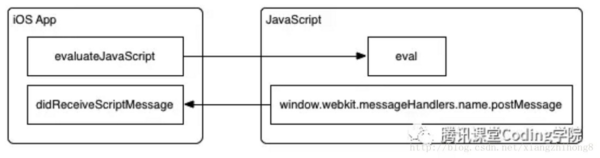

<!DOCTYPE html>
<html lang="en">
<head>
  <title>framework - mallow</title>
  <meta charset="utf-8">
  <meta name="description" content="mallow's blog.">
  <meta name="viewport" content="width=device-width, initial-scale=1, maximum-scale=1, user-scalable=no">

  <meta property="og:type" content="article">
  <meta property="og:title" content="framework — mallow">
  <meta property="og:description" content="mallow's blog.">
  <!-- Global site tag (gtag.js) - Google Analytics -->
  <script async src="https://www.googletagmanager.com/gtag/js?id=UA-120215204-1"></script>
  <script>
    window.dataLayer = window.dataLayer || [];
    function gtag(){dataLayer.push(arguments);}
    gtag('js', new Date());

    gtag('config', 'UA-120215204-1');
  </script>
  <link href="https://maxcdn.bootstrapcdn.com/font-awesome/4.7.0/css/font-awesome.min.css" rel="stylesheet" type="text/css">
  <link rel="icon" href="/images/logo.png" type="image/png">
  <!-- main page styles -->
  <link rel="stylesheet" href="/css/page.css">
  <!-- import vue from there so that you can use vue in markdown -->
  <script src="/js/vue.min.js"></script>
  <script>window.PAGE_TYPE = "v3/client"</script>
</head>
<body class="docs">
  <div id="mobile-bar" >
    <a class="menu-button"></a>
    <a class="logo" href="/"></a>
  </div>
  <div id="header">
  <a id="logo" href="/">
    
    <span>Mallow</span>
  </a>
  <ul id="nav">
    <li>
  <form id="search-form">
    <input type="text" id="search-query-nav" class="search-query st-default-search-input">
  </form>
</li>
<li class="nav-dropdown-container learn">
  <a href="/v3/client/index.html" class="nav-link">客户端</a>
</li>

<li class="nav-dropdown-container learn">
  <a href="/v3/http/index.html" class="nav-link">HTTP</a>
</li>

<li class="nav-dropdown-container learn">
  <a href="/v3/server/index.html" class="nav-link">服务端</a>
</li>

<li class="nav-dropdown-container learn">
	<a class="nav-link">v2</a><span class="arrow"></span>
  <ul class="nav-dropdown">
		<li><h4>理论</h4></li>
		<li><ul>
			<li><a href="/v2/theory/dataStructure/1_intro.html" class="nav-link">数据结构</a></li>
			<li><a href="/v2/theory/computerNet/1_intro.html" class="nav-link">计算机网络</a></li>
			<li><a href="/v2/theory/computerContain/1_intro.html" class="nav-link">计算机组成原理</a></li>
			<li><a href="/v2/theory/arithmeticV2/1_intro.html" class="nav-link">算法</a></li>
			<li><a href="/v2/theory/compile/1_intro.html" class="nav-link">编译原理</a></li>
		</ul></li>
		<li><h4>基础</h4></li>
    <li><ul>
			<li><a href="/v2/basic/frontend/1_intro.html" class="nav-link">前端</a></li>
			<li><a href="/v2/basic/http/1_intro.html" class="nav-link">http</a></li>
			<li><a href="/v2/basic/backend/1_intro.html" class="nav-link">后端</a></li>
		</ul></li>
		<li><h4>框架&工具</h4></li>
		<li><ul>
			<li><a href="/v2/frame/react/1_intro.html" class="nav-link">React相关</a></li>
			<li><a href="/v2/theory/vue/1_intro.html" class="nav-link">Vue相关</a></li>
			<li><a href="/v2/theory/lodash/1_intro.html" class="nav-link">Lodash</a></li>
			<li><a href="/v2/theory/axios/1_intro.html" class="nav-link">axios</a></li>
		</ul></li>
		<li><h4>开发环境</h4></li>
		<li><ul>
			<li><a href="/v2/dev/ide/1_intro.html" class="nav-link">IDE</a></li>
			<li><a href="/v2/dev/codeManage/1_intro.html" class="nav-link">代码管理</a></li>
			<li><a href="/v2/dev/packTools/1_intro.html" class="nav-link">打包工具</a></li>
			<li><a href="/v2/dev/staging/1_intro.html" class="nav-link">脚手架</a></li>
			<li><a href="/v2/dev/debug/1_intro.html" class="nav-link">debug</a></li>
			<li><a href="/v2/dev/unitTest/1_intro.html" class="nav-link">单元测试</a></li>
			<li><a href="/v2/dev/deploy/1_intro.html" class="nav-link">构建和部署</a></li>
			<li><a href="/v2/dev/serverOprate/1_intro.html" class="nav-link">服务器操作</a></li>
		</ul></li>
		<li><h4>运行环境</h4></li>
		<li><ul>
			<li><a href="/v2/runtime/browser/1_intro.html" class="nav-link">浏览器</a></li>
			<li><a href="/v2/runtime/app/1_intro.html" class="nav-link">app</a></li>
			<li><a href="/v2/runtime/desktop/1_intro.html" class="nav-link">桌面</a></li>
		</ul></li>
		<li><h4>监控&分析</h4></li>
		<li><ul>
			<li><a href="/v2/monitor/browser/1_intro.html" class="nav-link">浏览器</a></li>
			<li><a href="/v2/monitor/app/1_intro.html" class="nav-link">app</a></li>
			<li><a href="/v2/monitor/desktop/1_intro.html" class="nav-link">桌面</a></li>
		</ul></li>
		<li class="nav-dropdown-container learn">
			<a href="/special/1_原型.html" class="nav-link">专题</a>
		</li>			
  </ul>
</li>

<li class="nav-dropdown-container learn">
  <a class="nav-link">v1</a><span class="arrow"></span>
  <ul class="nav-dropdown">
    <li><h4>软件工程化</h4></li>
    <li><ul>
      <li><a href="/software/engineering.html" class="nav-link">概念&实践</a></li>
    </ul></li>
    <li><h4>前端</h4></li>
    <li><ul>
      <li><a href="/frontend/skeleton/1_skeleton.html" class="nav-link">skeleton</a></li>
      <li><a href="/frontend/html/1_define.html" class="nav-link">html</a></li>
      <li><a href="/frontend/css/1_define.html" class="nav-link">css</a></li>
      <li><a href="/frontend/js/1_enter&going.html" class="nav-link">javascript</a></li>
      <li><a href="/frontend/framework/1_vue.html" class="nav-link">framework</a></li>
      <li><a href="/frontend/browser/1_safe.html" class="nav-link">browser</a></li>
      <li><a href="/frontend/important/1_conclude.html" class="nav-link">conclude</a></li>
    </ul></li>
    <li><h4>后端</h4></li>
    <li><ul>
      <li><a href="/backend/node/note.html" class="nav-link">node</a></li>
      <li><a href="/backend/http/1_http.html" class="nav-link">http</a></li>
      <li><a href="/backend/java/core.html" class="nav-link">java</a></li>
      <li><a href="/backend/database/1_mysql.html" class="nav-link">database</a></li>
    </ul></li>
    <li><h4>算法</h4></li>
    <li><ul>
      <li><a href="/arithmetic/1_lintcode.html" class="nav-link">概念&实践</a></li>
    </ul></li>
    <li><h4>读书</h4></li>
    <li><ul>
      <li><a href="/books/memory/1_利玛窦的记忆宫殿.html" class="nav-link">记忆学</a></li>
      <li><a href="/books/computer/1_构建高性能web网站.html" class="nav-link">计算机</a></li>
      <li><a href="/books/history/资治通鉴/1_周纪一.html" class="nav-link">历史</a></li>
      <li><a href="/books/economics/1_国富论.html" class="nav-link">经济</a></li>
    </ul></li>
  </ul>
</li>

  </ul>
</div>
  
    <div id="main" class="fix-sidebar">
        <div class="guide-links">
  
  
  
  
    <span style="float: right; margin-right: 30px;">← <a style="color: goldenrod;" href="/v3/client/5-webpack.html">webpack</a></span>
  
</div>

  <div class="sidebar">
  <div class="sidebar-inner">
    <h3>当前位置：v3/client</h3>
    <div class="list">
      <ul class="menu-root">
  
    
      <li>
        <a href="/v3/client/index.html" class="sidebar-link">
          介绍
        </a>
      </li>
      
    
      <li>
        <a href="/v3/client/1-html.html" class="sidebar-link">
          html
        </a>
      </li>
      
    
      <li>
        <a href="/v3/client/2-css.html" class="sidebar-link">
          css
        </a>
      </li>
      
    
      <li>
        <a href="/v3/client/3-js.html" class="sidebar-link">
          js
        </a>
      </li>
      
    
      <li>
        <a href="/v3/client/4-browser.html" class="sidebar-link">
          浏览器
        </a>
      </li>
      
    
      <li>
        <a href="/v3/client/5-webpack.html" class="sidebar-link">
          webpack
        </a>
      </li>
      
    
      <li>
        <a href="/v3/client/6-framework.html" class="sidebar-link current">
          framework
        </a>
      </li>
      
</ul>
    </div>
    <h3>浏览其它</h3>
    <ul class="main-menu">
      <li>
  <form id="search-form">
    <input type="text" id="search-query-sidebar" class="search-query st-default-search-input">
  </form>
</li>
<li class="nav-dropdown-container learn">
  <a href="/v3/client/index.html" class="nav-link">客户端</a>
</li>

<li class="nav-dropdown-container learn">
  <a href="/v3/http/index.html" class="nav-link">HTTP</a>
</li>

<li class="nav-dropdown-container learn">
  <a href="/v3/server/index.html" class="nav-link">服务端</a>
</li>

<li class="nav-dropdown-container learn">
	<a class="nav-link">v2</a><span class="arrow"></span>
  <ul class="nav-dropdown">
		<li><h4>理论</h4></li>
		<li><ul>
			<li><a href="/v2/theory/dataStructure/1_intro.html" class="nav-link">数据结构</a></li>
			<li><a href="/v2/theory/computerNet/1_intro.html" class="nav-link">计算机网络</a></li>
			<li><a href="/v2/theory/computerContain/1_intro.html" class="nav-link">计算机组成原理</a></li>
			<li><a href="/v2/theory/arithmeticV2/1_intro.html" class="nav-link">算法</a></li>
			<li><a href="/v2/theory/compile/1_intro.html" class="nav-link">编译原理</a></li>
		</ul></li>
		<li><h4>基础</h4></li>
    <li><ul>
			<li><a href="/v2/basic/frontend/1_intro.html" class="nav-link">前端</a></li>
			<li><a href="/v2/basic/http/1_intro.html" class="nav-link">http</a></li>
			<li><a href="/v2/basic/backend/1_intro.html" class="nav-link">后端</a></li>
		</ul></li>
		<li><h4>框架&工具</h4></li>
		<li><ul>
			<li><a href="/v2/frame/react/1_intro.html" class="nav-link">React相关</a></li>
			<li><a href="/v2/theory/vue/1_intro.html" class="nav-link">Vue相关</a></li>
			<li><a href="/v2/theory/lodash/1_intro.html" class="nav-link">Lodash</a></li>
			<li><a href="/v2/theory/axios/1_intro.html" class="nav-link">axios</a></li>
		</ul></li>
		<li><h4>开发环境</h4></li>
		<li><ul>
			<li><a href="/v2/dev/ide/1_intro.html" class="nav-link">IDE</a></li>
			<li><a href="/v2/dev/codeManage/1_intro.html" class="nav-link">代码管理</a></li>
			<li><a href="/v2/dev/packTools/1_intro.html" class="nav-link">打包工具</a></li>
			<li><a href="/v2/dev/staging/1_intro.html" class="nav-link">脚手架</a></li>
			<li><a href="/v2/dev/debug/1_intro.html" class="nav-link">debug</a></li>
			<li><a href="/v2/dev/unitTest/1_intro.html" class="nav-link">单元测试</a></li>
			<li><a href="/v2/dev/deploy/1_intro.html" class="nav-link">构建和部署</a></li>
			<li><a href="/v2/dev/serverOprate/1_intro.html" class="nav-link">服务器操作</a></li>
		</ul></li>
		<li><h4>运行环境</h4></li>
		<li><ul>
			<li><a href="/v2/runtime/browser/1_intro.html" class="nav-link">浏览器</a></li>
			<li><a href="/v2/runtime/app/1_intro.html" class="nav-link">app</a></li>
			<li><a href="/v2/runtime/desktop/1_intro.html" class="nav-link">桌面</a></li>
		</ul></li>
		<li><h4>监控&分析</h4></li>
		<li><ul>
			<li><a href="/v2/monitor/browser/1_intro.html" class="nav-link">浏览器</a></li>
			<li><a href="/v2/monitor/app/1_intro.html" class="nav-link">app</a></li>
			<li><a href="/v2/monitor/desktop/1_intro.html" class="nav-link">桌面</a></li>
		</ul></li>
		<li class="nav-dropdown-container learn">
			<a href="/special/1_原型.html" class="nav-link">专题</a>
		</li>			
  </ul>
</li>

<li class="nav-dropdown-container learn">
  <a class="nav-link">v1</a><span class="arrow"></span>
  <ul class="nav-dropdown">
    <li><h4>软件工程化</h4></li>
    <li><ul>
      <li><a href="/software/engineering.html" class="nav-link">概念&实践</a></li>
    </ul></li>
    <li><h4>前端</h4></li>
    <li><ul>
      <li><a href="/frontend/skeleton/1_skeleton.html" class="nav-link">skeleton</a></li>
      <li><a href="/frontend/html/1_define.html" class="nav-link">html</a></li>
      <li><a href="/frontend/css/1_define.html" class="nav-link">css</a></li>
      <li><a href="/frontend/js/1_enter&going.html" class="nav-link">javascript</a></li>
      <li><a href="/frontend/framework/1_vue.html" class="nav-link">framework</a></li>
      <li><a href="/frontend/browser/1_safe.html" class="nav-link">browser</a></li>
      <li><a href="/frontend/important/1_conclude.html" class="nav-link">conclude</a></li>
    </ul></li>
    <li><h4>后端</h4></li>
    <li><ul>
      <li><a href="/backend/node/note.html" class="nav-link">node</a></li>
      <li><a href="/backend/http/1_http.html" class="nav-link">http</a></li>
      <li><a href="/backend/java/core.html" class="nav-link">java</a></li>
      <li><a href="/backend/database/1_mysql.html" class="nav-link">database</a></li>
    </ul></li>
    <li><h4>算法</h4></li>
    <li><ul>
      <li><a href="/arithmetic/1_lintcode.html" class="nav-link">概念&实践</a></li>
    </ul></li>
    <li><h4>读书</h4></li>
    <li><ul>
      <li><a href="/books/memory/1_利玛窦的记忆宫殿.html" class="nav-link">记忆学</a></li>
      <li><a href="/books/computer/1_构建高性能web网站.html" class="nav-link">计算机</a></li>
      <li><a href="/books/history/资治通鉴/1_周纪一.html" class="nav-link">历史</a></li>
      <li><a href="/books/economics/1_国富论.html" class="nav-link">经济</a></li>
    </ul></li>
  </ul>
</li>

    </ul>
  </div>
</div>


<div class="content v3/client with-sidebar ">
  <ul class="menu-root">
  
</ul>
  
    <h1>framework</h1>
  
  <blockquote>
<p><a href="https://github.com/mallow-fight/mini-react" target="_blank" rel="noopener">手搓react、react-router、redux</a><br>这个仓库中有react、react-router、redux的简单实现。<br>如果想深入了解源码的设计思想，一行行读源码并不是最好的选择，因为源码有很多不需要关注的代码，可以尝试先了解一些设计思想的文章，按照它们的设计思想自己去实现一个简单版本。这样实现的过程中一些疑难点就会引刃而解，对它们是怎么实现的认知也会上升一个档次。</p>
</blockquote>
<h2 id="react"><a href="#react" class="headerlink" title="react"></a>react</h2><ol>
<li>写一个简单版的react最重要的是定义好虚拟DOM树的结构，使用这个结构来适配所有的JSX类型，这样就可以统一操作，不容易出错，处理逻辑复用程度就很高。</li>
<li>其次应该分清各个模块的职责，每个模块之间的功能都是单一且稳定的。</li>
<li>最后是弄清楚树状结构各个层级之间的关系。</li>
<li>主要会用到各种递归以及处理各种类型的DOM元素的差异性。</li>
<li>对比新旧VDOM的算法也挺有意思的，加上一些启发性的算法可以加快对比速度。</li>
</ol>
<h2 id="jsx"><a href="#jsx" class="headerlink" title="jsx"></a>jsx</h2><ul>
<li>可以任意的在jsx中使用js表达式，要包含在大括号中</li>
<li>编译之后，会被转化为普通的js对象，本身也是一种表达式，可以在if或for语句中使用jsx，将它赋值给变量，当作参数传入，最为返回值都可以</li>
</ul>
<h3 id="属性"><a href="#属性" class="headerlink" title="属性"></a>属性</h3><ul>
<li>可以用引号来定义以字符串为值的属性</li>
<li>使用大括号来定义以js表达式为值的属性</li>
</ul>
<p class="tip">因为jsx的特性更接近js而不是html，所以react dom使用camelCase小驼峰命名来定义属性的名称，如：class =&gt; className、tabindex =&gt; tabIndex</p>

<h3 id="防注入攻击"><a href="#防注入攻击" class="headerlink" title="防注入攻击"></a>防注入攻击</h3><ul>
<li>react dom 在渲染之前默认会过滤所有传入的值，可以确保应用不会被注入攻击，所有的内容在渲染之前都被转换成了字符串，可以有效的防止XSS(跨站脚本)攻击。</li>
</ul>
<h3 id="代表Objects"><a href="#代表Objects" class="headerlink" title="代表Objects"></a>代表Objects</h3><p>Babel转译器会把jsx转换为一个名为React.createElement()的方法调用，例：<br><figure class="highlight jsx"><table><tr><td class="gutter"><pre><span class="line">1</span><br><span class="line">2</span><br><span class="line">3</span><br><span class="line">4</span><br><span class="line">5</span><br></pre></td><td class="code"><pre><span class="line"><span class="keyword">const</span> element = (</span><br><span class="line">  &lt;h1 className=<span class="string">"greeting"</span>&gt;</span><br><span class="line">    Hello, world!</span><br><span class="line">  &lt;<span class="regexp">/h1&gt;</span></span><br><span class="line"><span class="regexp">)</span></span><br></pre></td></tr></table></figure></p>
<p>after Babel get<br><figure class="highlight js"><table><tr><td class="gutter"><pre><span class="line">1</span><br><span class="line">2</span><br><span class="line">3</span><br><span class="line">4</span><br><span class="line">5</span><br></pre></td><td class="code"><pre><span class="line"><span class="keyword">const</span> element = React.createElement(</span><br><span class="line">  <span class="string">'h1'</span>,</span><br><span class="line">  &#123;<span class="attr">className</span>: <span class="string">'greeting'</span>&#125;,</span><br><span class="line">  <span class="string">'Hello, world!'</span></span><br><span class="line">)</span><br></pre></td></tr></table></figure></p>
<p>React.createElement will do: bugs check, then return Object like:<br><figure class="highlight js"><table><tr><td class="gutter"><pre><span class="line">1</span><br><span class="line">2</span><br><span class="line">3</span><br><span class="line">4</span><br><span class="line">5</span><br><span class="line">6</span><br><span class="line">7</span><br></pre></td><td class="code"><pre><span class="line"><span class="keyword">const</span> element = (</span><br><span class="line">  type: <span class="string">'h1'</span>,</span><br><span class="line">  props: &#123;</span><br><span class="line">    className: <span class="string">'greeting'</span>,</span><br><span class="line">    children: <span class="string">'Hello, world'</span></span><br><span class="line">  &#125;</span><br><span class="line">)</span><br></pre></td></tr></table></figure></p>
<p>最后生成的对象被称为”react 元素”, 它代表所有你在屏幕上看到的东西，通过读取这些对象来构建DOM并保持数据内容一致</p>
<h2 id="元素渲染"><a href="#元素渲染" class="headerlink" title="元素渲染"></a>元素渲染</h2><p>react当中的元素事实上是普通的对象</p>
<h3 id="渲染到dom"><a href="#渲染到dom" class="headerlink" title="渲染到dom"></a>渲染到dom</h3><p>通过ReactDOM.render()来将元素渲染到指定的根节点中，例：<br><figure class="highlight jsx"><table><tr><td class="gutter"><pre><span class="line">1</span><br><span class="line">2</span><br><span class="line">3</span><br><span class="line">4</span><br><span class="line">5</span><br></pre></td><td class="code"><pre><span class="line"><span class="keyword">const</span> element = <span class="xml"><span class="tag">&lt;<span class="name">h1</span>&gt;</span>Hello, React<span class="tag">&lt;/<span class="name">h1</span>&gt;</span></span></span><br><span class="line">ReactDOM.render(</span><br><span class="line">  element,</span><br><span class="line">  <span class="built_in">document</span>.getElementById(<span class="string">'root'</span>)</span><br><span class="line">)</span><br></pre></td></tr></table></figure></p>
<h3 id="更新"><a href="#更新" class="headerlink" title="更新"></a>更新</h3><p>React中元素都是不可变的，当元素被创建后，你是无法改变其内容或属性的，一个元素就好像是动画里的一帧，它代表应用界面在某一时间点的样子。<br>可以这样更新界面：<br><figure class="highlight jsx"><table><tr><td class="gutter"><pre><span class="line">1</span><br><span class="line">2</span><br><span class="line">3</span><br><span class="line">4</span><br><span class="line">5</span><br><span class="line">6</span><br><span class="line">7</span><br><span class="line">8</span><br><span class="line">9</span><br><span class="line">10</span><br><span class="line">11</span><br><span class="line">12</span><br><span class="line">13</span><br><span class="line">14</span><br></pre></td><td class="code"><pre><span class="line"><span class="function"><span class="keyword">function</span> <span class="title">tick</span>(<span class="params"></span>) </span>&#123;</span><br><span class="line">  <span class="keyword">const</span> element = (</span><br><span class="line">    &lt;div&gt;</span><br><span class="line">      &lt;h1&gt;Hello, world!<span class="xml"><span class="tag">&lt;/<span class="name">h1</span>&gt;</span></span></span><br><span class="line">      &lt;h2&gt;It is &#123;<span class="keyword">new</span> <span class="built_in">Date</span>().toLocaleTimeString()&#125;.&lt;<span class="regexp">/h2&gt;</span></span><br><span class="line"><span class="regexp">    &lt;/</span>div&gt;</span><br><span class="line">  );</span><br><span class="line">  ReactDOM.render(</span><br><span class="line">    element,</span><br><span class="line">    <span class="built_in">document</span>.getElementById(<span class="string">'root'</span>)</span><br><span class="line">  );</span><br><span class="line">&#125;</span><br><span class="line"></span><br><span class="line">setInterval(tick, <span class="number">1000</span>);</span><br></pre></td></tr></table></figure></p>
<p class="tip">实际生产中只会调用一次render()</p>

<h3 id="更新策略"><a href="#更新策略" class="headerlink" title="更新策略"></a>更新策略</h3><p>React DOM首先会比较元素内容先后的不同，而在渲染过程中只会更新改变了的部分。<br>即使我们每秒都创建了一个描述整个UI树的新元素，React DOM也只会更新渲染文本节点中发生变化的内容。</p>
<h2 id="组件-amp-Props"><a href="#组件-amp-Props" class="headerlink" title="组件 &amp; Props"></a>组件 &amp; Props</h2><ul>
<li>组件可以将UI切分成一些独立的、可复用的部件，这样只需要专注于构建每一个单独的部件</li>
<li>概念上来讲，它像是函数，可以接受任意的输入值（props），返回一个需要在页面上展示的React元素。</li>
</ul>
<h3 id="定义"><a href="#定义" class="headerlink" title="定义"></a>定义</h3><h4 id="函数形式"><a href="#函数形式" class="headerlink" title="函数形式"></a>函数形式</h4><figure class="highlight jsx"><table><tr><td class="gutter"><pre><span class="line">1</span><br><span class="line">2</span><br><span class="line">3</span><br></pre></td><td class="code"><pre><span class="line"><span class="function"><span class="keyword">function</span> <span class="title">Welcome</span>(<span class="params">props</span>) </span>&#123;</span><br><span class="line">  <span class="keyword">return</span> <span class="xml"><span class="tag">&lt;<span class="name">h1</span>&gt;</span>Hello, &#123;props,name&#125;<span class="tag">&lt;/<span class="name">h1</span>&gt;</span></span></span><br><span class="line">&#125;</span><br></pre></td></tr></table></figure>
<h4 id="类形式"><a href="#类形式" class="headerlink" title="类形式"></a>类形式</h4><figure class="highlight jsx"><table><tr><td class="gutter"><pre><span class="line">1</span><br><span class="line">2</span><br><span class="line">3</span><br><span class="line">4</span><br><span class="line">5</span><br></pre></td><td class="code"><pre><span class="line"><span class="class"><span class="keyword">class</span> <span class="title">Welcome</span> <span class="keyword">extends</span> <span class="title">React</span>.<span class="title">Component</span> </span>&#123;</span><br><span class="line">  render () &#123;</span><br><span class="line">    <span class="keyword">return</span> <span class="xml"><span class="tag">&lt;<span class="name">h1</span>&gt;</span>Hello, &#123;this.props.name&#125;<span class="tag">&lt;/<span class="name">h1</span>&gt;</span></span></span><br><span class="line">  &#125;</span><br><span class="line">&#125;</span><br></pre></td></tr></table></figure>
<h3 id="组件渲染"><a href="#组件渲染" class="headerlink" title="组件渲染"></a>组件渲染</h3><p>当React的元素是用户自定义的组件，它会将JSX属性作为单个对象传递给该组件，这个对象称之为<code>props</code>。<br><figure class="highlight jsx"><table><tr><td class="gutter"><pre><span class="line">1</span><br><span class="line">2</span><br><span class="line">3</span><br><span class="line">4</span><br><span class="line">5</span><br><span class="line">6</span><br><span class="line">7</span><br><span class="line">8</span><br></pre></td><td class="code"><pre><span class="line"><span class="function"><span class="keyword">function</span> <span class="title">Welcome</span>(<span class="params">props</span>) </span>&#123;</span><br><span class="line">  <span class="keyword">return</span> <span class="xml"><span class="tag">&lt;<span class="name">h1</span>&gt;</span>Hello, &#123;props.name&#125;<span class="tag">&lt;/<span class="name">h1</span>&gt;</span></span></span><br><span class="line">&#125;</span><br><span class="line"><span class="keyword">const</span> element = <span class="xml"><span class="tag">&lt;<span class="name">Welcome</span> <span class="attr">name</span>=<span class="string">"Mallow"</span> /&gt;</span></span></span><br><span class="line"><span class="xml">ReactDOM.render(</span></span><br><span class="line"><span class="xml">  element,</span></span><br><span class="line"><span class="xml">  document.getElementById('root')</span></span><br><span class="line"><span class="xml">)</span></span><br></pre></td></tr></table></figure></p>
<h3 id="组合组件"><a href="#组合组件" class="headerlink" title="组合组件"></a>组合组件</h3><figure class="highlight jsx"><table><tr><td class="gutter"><pre><span class="line">1</span><br><span class="line">2</span><br><span class="line">3</span><br><span class="line">4</span><br><span class="line">5</span><br><span class="line">6</span><br><span class="line">7</span><br><span class="line">8</span><br><span class="line">9</span><br><span class="line">10</span><br><span class="line">11</span><br><span class="line">12</span><br><span class="line">13</span><br><span class="line">14</span><br></pre></td><td class="code"><pre><span class="line"><span class="function"><span class="keyword">function</span> <span class="title">App</span>(<span class="params"></span>) </span>&#123;</span><br><span class="line">  <span class="keyword">return</span> (</span><br><span class="line">    &lt;div&gt;</span><br><span class="line">      &lt;Welcome name=<span class="string">"mallow"</span> /&gt;</span><br><span class="line">      &lt;Welcome name=<span class="string">"peter"</span> /&gt;</span><br><span class="line">      &lt;Welcome name=<span class="string">"alex"</span> /&gt;</span><br><span class="line">    &lt;<span class="regexp">/div&gt;</span></span><br><span class="line"><span class="regexp">  )</span></span><br><span class="line"><span class="regexp">&#125;</span></span><br><span class="line"><span class="regexp"></span></span><br><span class="line"><span class="regexp">ReactDOM.render(</span></span><br><span class="line"><span class="regexp">  App,</span></span><br><span class="line"><span class="regexp">  document.getElementById('root')</span></span><br><span class="line"><span class="regexp">)</span></span><br></pre></td></tr></table></figure>
<p class="tip">组件的返回值只能有一个根元素，所以每次返回都需要用一个根元素包裹所有子元素。</p>

<h3 id="Props的只读性"><a href="#Props的只读性" class="headerlink" title="Props的只读性"></a>Props的只读性</h3><p>无论是使用函数或类来声明一个组件，它绝不能修改它自己的props，例：</p>
<h4 id="纯函数"><a href="#纯函数" class="headerlink" title="纯函数"></a>纯函数</h4><figure class="highlight js"><table><tr><td class="gutter"><pre><span class="line">1</span><br><span class="line">2</span><br><span class="line">3</span><br></pre></td><td class="code"><pre><span class="line"><span class="function"><span class="keyword">function</span> <span class="title">sum</span>(<span class="params">a + b</span>) </span>&#123;</span><br><span class="line">  <span class="keyword">return</span> a + b</span><br><span class="line">&#125;</span><br></pre></td></tr></table></figure>
<h4 id="非纯函数"><a href="#非纯函数" class="headerlink" title="非纯函数"></a>非纯函数</h4><figure class="highlight js"><table><tr><td class="gutter"><pre><span class="line">1</span><br><span class="line">2</span><br><span class="line">3</span><br></pre></td><td class="code"><pre><span class="line"><span class="function"><span class="keyword">function</span> <span class="title">withdraw</span>(<span class="params">account, amount</span>) </span>&#123;</span><br><span class="line">  account.total -= amount</span><br><span class="line">&#125;</span><br></pre></td></tr></table></figure>
<p>所有的React组件必须像纯函数那样使用他们的props，State可以在不违反上述规则情况下，根据用户操作、网络响应或其他状态变化，使组件动态响应并改变组件的输出。</p>
<h2 id="State-amp-生命周期"><a href="#State-amp-生命周期" class="headerlink" title="State &amp; 生命周期"></a>State &amp; 生命周期</h2><h3 id="将函数转换为类"><a href="#将函数转换为类" class="headerlink" title="将函数转换为类"></a>将函数转换为类</h3><p>使用类允许我们使用其它特性，例如局部状态（state）、生命周期钩子<br><figure class="highlight jsx"><table><tr><td class="gutter"><pre><span class="line">1</span><br><span class="line">2</span><br><span class="line">3</span><br><span class="line">4</span><br><span class="line">5</span><br><span class="line">6</span><br><span class="line">7</span><br><span class="line">8</span><br><span class="line">9</span><br><span class="line">10</span><br><span class="line">11</span><br><span class="line">12</span><br></pre></td><td class="code"><pre><span class="line"><span class="class"><span class="keyword">class</span> <span class="title">Clock</span> <span class="keyword">extends</span> <span class="title">React</span>.<span class="title">Component</span> </span>&#123;</span><br><span class="line">  render() &#123;</span><br><span class="line">    <span class="keyword">return</span> &#123;</span><br><span class="line">      <span class="keyword">return</span> (</span><br><span class="line">        &lt;div&gt;</span><br><span class="line">          &lt;h1&gt;Hello, world!<span class="xml"><span class="tag">&lt;/<span class="name">h1</span>&gt;</span></span></span><br><span class="line">          &lt;h2&gt;It is &#123;<span class="keyword">this</span>.props.date.toLocaleTimeString()&#125;.</span><br><span class="line">        &lt;<span class="regexp">/div&gt;</span></span><br><span class="line"><span class="regexp">      )</span></span><br><span class="line"><span class="regexp">    &#125;</span></span><br><span class="line"><span class="regexp">  &#125;</span></span><br><span class="line"><span class="regexp">&#125;</span></span><br></pre></td></tr></table></figure></p>
<h3 id="添加局部状态"><a href="#添加局部状态" class="headerlink" title="添加局部状态"></a>添加局部状态</h3><p>将date从属性移动到状态中：<br><figure class="highlight jsx"><table><tr><td class="gutter"><pre><span class="line">1</span><br><span class="line">2</span><br><span class="line">3</span><br><span class="line">4</span><br><span class="line">5</span><br><span class="line">6</span><br><span class="line">7</span><br><span class="line">8</span><br><span class="line">9</span><br><span class="line">10</span><br><span class="line">11</span><br><span class="line">12</span><br><span class="line">13</span><br><span class="line">14</span><br></pre></td><td class="code"><pre><span class="line"><span class="class"><span class="keyword">class</span> <span class="title">Clock</span> <span class="keyword">extends</span> <span class="title">React</span>.<span class="title">Component</span> </span>&#123;</span><br><span class="line">  <span class="keyword">constructor</span>(props) &#123;</span><br><span class="line">    <span class="keyword">super</span>(props)</span><br><span class="line">    <span class="keyword">this</span>.state = &#123;<span class="attr">date</span>: <span class="keyword">new</span> <span class="built_in">Date</span>()&#125;</span><br><span class="line">  &#125;</span><br><span class="line">  render() &#123;</span><br><span class="line">    <span class="keyword">return</span> (</span><br><span class="line">      &lt;div&gt;</span><br><span class="line">        &lt;h1&gt;Hello, world!<span class="xml"><span class="tag">&lt;/<span class="name">h1</span>&gt;</span></span></span><br><span class="line">        &lt;h2&gt;It is &#123;<span class="keyword">this</span>.state.date.toLocaleTimeString()&#125;.&lt;<span class="regexp">/h2&gt;</span></span><br><span class="line"><span class="regexp">      &lt;/</span>div&gt;</span><br><span class="line">    )</span><br><span class="line">  &#125;</span><br><span class="line">&#125;</span><br></pre></td></tr></table></figure></p>
<h3 id="添加生命周期钩子"><a href="#添加生命周期钩子" class="headerlink" title="添加生命周期钩子"></a>添加生命周期钩子</h3><ul>
<li><p>装载过程（<code>Mount</code>）：第一次把组件渲染到DOM树的过程</p>
<ul>
<li><p><code>constructor</code>：构造函数，经常是为了初始化<code>state</code>或者绑定成员函数的<code>this</code>环境</p>
</li>
<li><p><code>componentWillMount</code>：预装载函数，不能进行修改<code>state</code>的操作，即使做了，也不会进行数据状态的渲染。在该函数中做的操作，都可以提前到构造函数中，比较鸡肋。</p>
</li>
<li><p><code>render</code>：渲染函数，唯一不能省略的函数，必须有返回值，返回<code>null</code>或<code>false</code>表示不渲染任何<code>dom</code>元素。它是一个仅仅用于渲染的纯函数，返回值完全取决于<code>this.state</code>和<code>this.props</code>，不能在函数中任何修改<code>props</code>、<code>state</code>、拉取数据等具有副作用的操作。<code>render</code>函数返回的是<code>jsx</code>对象，该函数并不因为这渲染到<code>DOM</code>树，何时进行真正的渲染是由<code>React</code>库决定的。</p>
</li>
<li><p><code>componentDidMount</code>：挂载成功函数，该函数不会在<code>render</code>函数调用完成之后立即调用，因为<code>render</code>函数仅仅是返回了<code>JSX</code>的对象，并没有立即挂载到<code>DOM</code>树上，而<code>componentDidMount</code>是在组件被渲染到<code>DOM</code>树之后被调用的。另外，<code>componentDidMount</code>函数在进行服务器端渲染时不会被调用。</p>
</li>
<li><p>在<code>React</code>中，除了<code>render</code>函数之外，都有默认的函数实现，如果不要使用相应的生命周期函数则可以省略。<code>constructor</code>通常用于<code>state</code>的初始化操作，<code>this.state = {}</code>；函数绑定<code>this</code>建议在定义的时候直接使用箭头函数来实现，就不需要在<code>constructor</code>函数中进行<code>this</code>绑定操作了。<code>componentWillMount</code>用的很少，比较鸡肋。<code>render</code>函数必须实现，可以返回<code>null</code>或<code>false</code>来进行不渲染。<code>componentDidMount</code>通常用于服务器数据的拉取操作，之所以在<code>componentDidMount</code>中而不是在构造函数中进行数据拉取的原因：如果数据拉取回来了，即<code>props</code>已经有值了，但是组件还没有渲染出来，会报错。但是这里有一些把数据拉取提前到<code>constructor</code>函数的思路：在<code>constructor</code>函数中，通过<code>promise</code>来进行数据的拉取，并且绑定到<code>this</code>对象上，然后在<code>componentDidMount</code>中执行<code>promise</code>把数据更新到<code>props</code>上。</p>
</li>
</ul>
</li>
<li><p>更新过程（<code>Update</code>）：组件进行渲染更新的过程</p>
<ul>
<li><p>当组件挂载到<code>DOM</code>树上之后，<code>props/state</code>被修改会导致组件进行更新操作，更新过程会以此调用如下的生命周期函数</p>
</li>
<li><p><code>componentWillReceiveProps(nextProps)</code>：该函数在组件进行更新以及父组件<code>render</code>函数（不管数据是否发生了变化）被调用后执行，<code>this.props</code>取得当前的<code>props</code>，<code>nextProps</code>传入的是要更新的<code>props</code></p>
</li>
<li><p><code>shouldComponentUpdate(nextProps, nextState)</code>：返回<code>bool</code>值，<code>true</code>表示要更新，<code>false</code>表示不更新，使用得当将大大提高<code>React</code>组件的性能，避免不需要的渲染。</p>
</li>
<li><p><code>componentWillUpdate</code>：预更新函数</p>
</li>
<li><p><code>render</code>：渲染函数</p>
</li>
<li><p><code>componentDidUpdate</code>：更新完成函数</p>
</li>
<li><p>相比装载过程的生命周期函数，更新过程的生命周期函数使用的相对来说要少一些。常用的是<code>componentWillReceiveProps</code>、<code>componentShouldUpdate</code>，前者经常用于根据前后两个数据去设置组件的状态，而后者则是常用于优化，避免不必要的渲染。</p>
</li>
</ul>
</li>
<li><p>卸载过程（<code>Unmount</code>）：组件从<code>DOM</code>树中删除的过程</p>
<ul>
<li>卸载过程只涉及一个函数<code>componentWillUnmount</code>，当<code>React</code>组件要从<code>DOM</code>树上删除前，会调用一次这个函数。这个函数经常用于去除<code>componentDidMount</code>函数带来的副作用，例如清除定时器、删除<code>componentDidMount</code>中创造的非<code>React</code>元素。</li>
</ul>
</li>
<li><p><code>setState</code></p>
<ul>
<li>要修改<code>state</code>，只能使用<code>this.setState()</code>，不能使用<code>this.state.value = 2</code>类似方式设置<code>state</code>，一是不会驱动重新渲染，二是很可能被后面的操作替换，造成无法预知的错误。此外，<code>React</code>利用状态队列来实现<code>setState</code>的异步更新，避免频繁地重复更新<code>state</code>。</li>
<li><code>setState</code>的调用是有风险的，在某些生命周期函数中调用可能会无用甚至造成循环调用导致崩溃。<code>state</code>的初始化一般在构造函数中实现：<code>setState</code>可以在装载过程的<code>componentWillMount</code>、<code>componentDidMount</code>中调用，可以在更新过程中的<code>componentWillReceiveProps</code>、<code>componentDidUpdate</code>中调用。</li>
</ul>
</li>
<li><p>举例：定时器的添加和删除</p>
<figure class="highlight js"><table><tr><td class="gutter"><pre><span class="line">1</span><br><span class="line">2</span><br><span class="line">3</span><br><span class="line">4</span><br><span class="line">5</span><br><span class="line">6</span><br><span class="line">7</span><br><span class="line">8</span><br><span class="line">9</span><br></pre></td><td class="code"><pre><span class="line">componentDidMount() &#123;</span><br><span class="line">  <span class="keyword">this</span>.timerID = setInterval(</span><br><span class="line">    () =&gt; <span class="keyword">this</span>.tick(),</span><br><span class="line">    <span class="number">1000</span></span><br><span class="line">  )</span><br><span class="line">&#125;</span><br><span class="line">componentWillUnmount() &#123;</span><br><span class="line">  clearInterval(<span class="keyword">this</span>.timerID)</span><br><span class="line">&#125;</span><br></pre></td></tr></table></figure>
</li>
</ul>
<h3 id="更新状态"><a href="#更新状态" class="headerlink" title="更新状态"></a>更新状态</h3><figure class="highlight js"><table><tr><td class="gutter"><pre><span class="line">1</span><br><span class="line">2</span><br><span class="line">3</span><br><span class="line">4</span><br><span class="line">5</span><br></pre></td><td class="code"><pre><span class="line">tick() &#123;</span><br><span class="line">  <span class="keyword">this</span>.setState(&#123;</span><br><span class="line">    date: <span class="keyword">new</span> <span class="built_in">Date</span>()</span><br><span class="line">  &#125;)</span><br><span class="line">&#125;</span><br></pre></td></tr></table></figure>
<p>直接使用<code>this.state.comment = &#39;hello&#39;</code>不会重新渲染组件，应当使用<code>this.setState()</code>，构造函数是唯一一个能够初始化<code>this.state</code>的地方。</p>
<h3 id="异步状态更新"><a href="#异步状态更新" class="headerlink" title="异步状态更新"></a>异步状态更新</h3><p><code>this.props</code>和<code>this.state</code>可能是异步更新的，不应该依靠它们的值来计算下一个状态。</p>
<p>下面代码可能无法更新计数器：<br><figure class="highlight js"><table><tr><td class="gutter"><pre><span class="line">1</span><br><span class="line">2</span><br><span class="line">3</span><br></pre></td><td class="code"><pre><span class="line"><span class="keyword">this</span>.setState(&#123;</span><br><span class="line">  counter: <span class="keyword">this</span>.state.counter + <span class="keyword">this</span>.props.increment</span><br><span class="line">&#125;)</span><br></pre></td></tr></table></figure></p>
<p>应该这么写：<br><figure class="highlight js"><table><tr><td class="gutter"><pre><span class="line">1</span><br><span class="line">2</span><br><span class="line">3</span><br></pre></td><td class="code"><pre><span class="line"><span class="keyword">this</span>.setState(<span class="function">(<span class="params">prevState, props</span>) =&gt;</span> &#123;</span><br><span class="line">  counter: prevState.counter + props.increment</span><br><span class="line">&#125;)</span><br></pre></td></tr></table></figure></p>
<h3 id="状态更新合并"><a href="#状态更新合并" class="headerlink" title="状态更新合并"></a>状态更新合并</h3><p>React只会单独替换setState中的数据，而不会对state中的其它数据进行替换</p>
<h3 id="数据流向"><a href="#数据流向" class="headerlink" title="数据流向"></a>数据流向</h3><ul>
<li>自顶向下，单向数据流</li>
<li>组件状态隔离，数据由父向子传递</li>
</ul>
<h2 id="事件处理"><a href="#事件处理" class="headerlink" title="事件处理"></a>事件处理</h2><p>和dom元素的不同之处：</p>
<ul>
<li>React事件绑定属性的命名采用驼峰式命名，而不是小写。</li>
<li>如果采用JSX的语法你需要传入一个函数作为事件处理函数，而不是一个字符串</li>
</ul>
<p>例：<br><figure class="highlight html"><table><tr><td class="gutter"><pre><span class="line">1</span><br><span class="line">2</span><br><span class="line">3</span><br><span class="line">4</span><br><span class="line">5</span><br><span class="line">6</span><br><span class="line">7</span><br><span class="line">8</span><br><span class="line">9</span><br></pre></td><td class="code"><pre><span class="line"><span class="comment">&lt;!-- 传统的HTML --&gt;</span></span><br><span class="line"><span class="tag">&lt;<span class="name">button</span> <span class="attr">onclick</span>=<span class="string">"activateLasers()"</span>&gt;</span></span><br><span class="line">Activate Lasers</span><br><span class="line"><span class="tag">&lt;/<span class="name">button</span>&gt;</span></span><br><span class="line"></span><br><span class="line"><span class="comment">&lt;!-- React --&gt;</span></span><br><span class="line"><span class="tag">&lt;<span class="name">button</span> <span class="attr">onClick</span>=<span class="string">&#123;activateLasers&#125;</span>&gt;</span></span><br><span class="line">Activate Lasers</span><br><span class="line"><span class="tag">&lt;/<span class="name">button</span>&gt;</span></span><br></pre></td></tr></table></figure></p>
<ul>
<li>不能使用返回<code>false</code>的方式来阻止默认行为，必须明确使用<code>preventDefault</code></li>
<li>点击事件或者其他事件的<code>e</code>是一个合成事件，<code>React</code>根据标准自定义了这些合成事件，所以你不需要担心跨浏览器兼容性问题</li>
<li><p>类的方法默认是不会绑定<code>this</code>的，例：</p>
<figure class="highlight js"><table><tr><td class="gutter"><pre><span class="line">1</span><br><span class="line">2</span><br><span class="line">3</span><br><span class="line">4</span><br><span class="line">5</span><br><span class="line">6</span><br><span class="line">7</span><br><span class="line">8</span><br></pre></td><td class="code"><pre><span class="line"><span class="keyword">constructor</span>(props) &#123;</span><br><span class="line">  <span class="keyword">this</span>.handleClick.bind(<span class="keyword">this</span>) <span class="comment">// 如果没有这一步，handleClick中对this的访问会报undefined.</span></span><br><span class="line">&#125;</span><br><span class="line">handleClick() &#123;</span><br><span class="line">  <span class="keyword">this</span>.setState(<span class="function"><span class="params">prevState</span> =&gt;</span> (&#123;</span><br><span class="line">    isToggle: !prevState.isToggle</span><br><span class="line">  &#125;))</span><br><span class="line">&#125;</span><br></pre></td></tr></table></figure>
</li>
<li><p>如果不使用bind</p>
<figure class="highlight js"><table><tr><td class="gutter"><pre><span class="line">1</span><br><span class="line">2</span><br><span class="line">3</span><br></pre></td><td class="code"><pre><span class="line">handleClick = <span class="function"><span class="params">()</span> =&gt;</span> &#123;</span><br><span class="line"></span><br><span class="line">&#125;</span><br></pre></td></tr></table></figure>
</li>
</ul>
<p>或者(下面这种方法会有性能问题，不推荐使用)<br><figure class="highlight jsx"><table><tr><td class="gutter"><pre><span class="line">1</span><br><span class="line">2</span><br><span class="line">3</span><br><span class="line">4</span><br><span class="line">5</span><br></pre></td><td class="code"><pre><span class="line"><span class="keyword">return</span> (</span><br><span class="line">  &lt;button onClick=&#123;(e) =&gt; <span class="keyword">this</span>.handleClick(e)&#125;&gt;</span><br><span class="line">    Click me</span><br><span class="line">  &lt;<span class="regexp">/button&gt;</span></span><br><span class="line"><span class="regexp">);</span></span><br></pre></td></tr></table></figure></p>
<h3 id="传参"><a href="#传参" class="headerlink" title="传参"></a>传参</h3><p>事件对象e要放在事件处理程序最后一个参数位置<br><figure class="highlight jsx"><table><tr><td class="gutter"><pre><span class="line">1</span><br><span class="line">2</span><br><span class="line">3</span><br><span class="line">4</span><br><span class="line">5</span><br><span class="line">6</span><br><span class="line">7</span><br><span class="line">8</span><br><span class="line">9</span><br><span class="line">10</span><br><span class="line">11</span><br><span class="line">12</span><br><span class="line">13</span><br><span class="line">14</span><br><span class="line">15</span><br><span class="line">16</span><br><span class="line">17</span><br><span class="line">18</span><br><span class="line">19</span><br><span class="line">20</span><br><span class="line">21</span><br></pre></td><td class="code"><pre><span class="line"><span class="class"><span class="keyword">class</span> <span class="title">Popper</span> <span class="keyword">extends</span> <span class="title">React</span>.<span class="title">Component</span></span>&#123;</span><br><span class="line">    <span class="keyword">constructor</span>()&#123;</span><br><span class="line">        <span class="keyword">super</span>();</span><br><span class="line">        <span class="keyword">this</span>.state = &#123;<span class="attr">name</span>:<span class="string">'Hello world!'</span>&#125;;</span><br><span class="line">    &#125;</span><br><span class="line">    </span><br><span class="line">    preventPop(name, e)&#123;    <span class="comment">// 事件对象e要放在最后</span></span><br><span class="line">        e.preventDefault();</span><br><span class="line">        alert(name);</span><br><span class="line">    &#125;</span><br><span class="line">    </span><br><span class="line">    render()&#123;</span><br><span class="line">        <span class="keyword">return</span> (</span><br><span class="line">            &lt;div&gt;</span><br><span class="line">                &lt;p&gt;hello&lt;<span class="regexp">/p&gt;</span></span><br><span class="line"><span class="regexp">                &#123;/</span>* Pass params via bind() method. *<span class="regexp">/&#125;</span></span><br><span class="line"><span class="regexp">                &lt;a href="https:/</span><span class="regexp">/reactjs.org" onClick=&#123;this.preventPop.bind(this,this.state.name)&#125;&gt;Click&lt;/</span>a&gt;</span><br><span class="line">            &lt;<span class="regexp">/div&gt;</span></span><br><span class="line"><span class="regexp">        );</span></span><br><span class="line"><span class="regexp">    &#125;</span></span><br><span class="line"><span class="regexp">&#125;</span></span><br></pre></td></tr></table></figure></p>
<h2 id="条件渲染"><a href="#条件渲染" class="headerlink" title="条件渲染"></a>条件渲染</h2><p>使用js操作符if或条件运算符来创建表示当前状态的元素，然后让React根据它们来更新UI</p>
<ul>
<li>if</li>
<li>&amp;&amp;</li>
<li>||</li>
<li>? xx : xxx</li>
</ul>
<h3 id="阻止组件渲染"><a href="#阻止组件渲染" class="headerlink" title="阻止组件渲染"></a>阻止组件渲染</h3><p>让render方法返回null或false而不是它的渲染结果就可以实现了</p>
<h2 id="列表-amp-Keys"><a href="#列表-amp-Keys" class="headerlink" title="列表 &amp; Keys"></a>列表 &amp; Keys</h2><h3 id="渲染多个组件"><a href="#渲染多个组件" class="headerlink" title="渲染多个组件"></a>渲染多个组件</h3><figure class="highlight jsx"><table><tr><td class="gutter"><pre><span class="line">1</span><br><span class="line">2</span><br></pre></td><td class="code"><pre><span class="line"><span class="keyword">const</span> numbers = [<span class="number">1</span>, <span class="number">2</span>, <span class="number">3</span>, <span class="number">4</span>, <span class="number">5</span>]</span><br><span class="line"><span class="keyword">const</span> listItems = numbers.map(<span class="function"><span class="params">number</span> =&gt;</span> &lt;li&gt;&#123;number&#125;&lt;<span class="regexp">/li&gt;)</span></span><br></pre></td></tr></table></figure>
<h3 id="基础列表组件"><a href="#基础列表组件" class="headerlink" title="基础列表组件"></a>基础列表组件</h3><ul>
<li>需要加上key属性</li>
<li>可以嵌套<code>ul</code>返回无序列表<figure class="highlight jsx"><table><tr><td class="gutter"><pre><span class="line">1</span><br><span class="line">2</span><br><span class="line">3</span><br><span class="line">4</span><br><span class="line">5</span><br><span class="line">6</span><br><span class="line">7</span><br><span class="line">8</span><br><span class="line">9</span><br><span class="line">10</span><br><span class="line">11</span><br><span class="line">12</span><br><span class="line">13</span><br><span class="line">14</span><br><span class="line">15</span><br><span class="line">16</span><br><span class="line">17</span><br></pre></td><td class="code"><pre><span class="line"><span class="function"><span class="keyword">function</span> <span class="title">NumberList</span>(<span class="params">props</span>) </span>&#123;</span><br><span class="line">  <span class="keyword">const</span> numbers = props.numbers;</span><br><span class="line">  <span class="keyword">const</span> listItems = numbers.map(<span class="function">(<span class="params">number</span>) =&gt;</span></span><br><span class="line">    &lt;li key=&#123;number.toString()&#125;&gt;</span><br><span class="line">      &#123;number&#125;</span><br><span class="line">    &lt;<span class="regexp">/li&gt;</span></span><br><span class="line"><span class="regexp">  );</span></span><br><span class="line"><span class="regexp">  return (</span></span><br><span class="line"><span class="regexp">    &lt;ul&gt;&#123;listItems&#125;&lt;/u</span>l&gt;</span><br><span class="line">  );</span><br><span class="line">&#125;</span><br><span class="line"></span><br><span class="line"><span class="keyword">const</span> numbers = [<span class="number">1</span>, <span class="number">2</span>, <span class="number">3</span>, <span class="number">4</span>, <span class="number">5</span>];</span><br><span class="line">ReactDOM.render(</span><br><span class="line">  &lt;NumberList numbers=&#123;numbers&#125; /&gt;,</span><br><span class="line">  <span class="built_in">document</span>.getElementById(<span class="string">'root'</span>)</span><br><span class="line">);</span><br></pre></td></tr></table></figure>
</li>
</ul>
<h3 id="Keys"><a href="#Keys" class="headerlink" title="Keys"></a>Keys</h3><p>DOM中某些元素被增加或删除的时候帮助React识别哪些元素发生了变化，通常使用数据的id作为元素的key，当元素没有确定的id时，可以使用他的序列号索引index作为key</p>
<ul>
<li><p>正确使用方式<br>map中的元素需要制定key，其它元素不需要指定</p>
<figure class="highlight jsx"><table><tr><td class="gutter"><pre><span class="line">1</span><br><span class="line">2</span><br><span class="line">3</span><br><span class="line">4</span><br><span class="line">5</span><br><span class="line">6</span><br><span class="line">7</span><br><span class="line">8</span><br><span class="line">9</span><br><span class="line">10</span><br><span class="line">11</span><br><span class="line">12</span><br><span class="line">13</span><br><span class="line">14</span><br><span class="line">15</span><br><span class="line">16</span><br><span class="line">17</span><br><span class="line">18</span><br><span class="line">19</span><br><span class="line">20</span><br><span class="line">21</span><br><span class="line">22</span><br><span class="line">23</span><br><span class="line">24</span><br><span class="line">25</span><br></pre></td><td class="code"><pre><span class="line"><span class="function"><span class="keyword">function</span> <span class="title">ListItem</span>(<span class="params">props</span>) </span>&#123;</span><br><span class="line">  <span class="comment">// 对啦！这里不需要指定key:</span></span><br><span class="line">  <span class="keyword">return</span> <span class="xml"><span class="tag">&lt;<span class="name">li</span>&gt;</span>&#123;props.value&#125;<span class="tag">&lt;/<span class="name">li</span>&gt;</span></span>;</span><br><span class="line">&#125;</span><br><span class="line"></span><br><span class="line"><span class="function"><span class="keyword">function</span> <span class="title">NumberList</span>(<span class="params">props</span>) </span>&#123;</span><br><span class="line">  <span class="keyword">const</span> numbers = props.numbers;</span><br><span class="line">  <span class="keyword">const</span> listItems = numbers.map(<span class="function">(<span class="params">number</span>) =&gt;</span></span><br><span class="line">    <span class="comment">// 又对啦！key应该在数组的上下文中被指定</span></span><br><span class="line">    &lt;ListItem key=&#123;number.toString()&#125;</span><br><span class="line">              value=&#123;number&#125; /&gt;</span><br><span class="line"></span><br><span class="line">  );</span><br><span class="line">  <span class="keyword">return</span> (</span><br><span class="line">    &lt;ul&gt;</span><br><span class="line">      &#123;listItems&#125;</span><br><span class="line">    &lt;<span class="regexp">/ul&gt;</span></span><br><span class="line"><span class="regexp">  );</span></span><br><span class="line"><span class="regexp">&#125;</span></span><br><span class="line"><span class="regexp"></span></span><br><span class="line"><span class="regexp">const numbers = [1, 2, 3, 4, 5];</span></span><br><span class="line"><span class="regexp">ReactDOM.render(</span></span><br><span class="line"><span class="regexp">  &lt;NumberList numbers=&#123;numbers&#125; /</span>&gt;,</span><br><span class="line">  <span class="built_in">document</span>.getElementById(<span class="string">'root'</span>)</span><br><span class="line">);</span><br></pre></td></tr></table></figure>
</li>
<li><p>元素的Key在他的兄弟元素之间应该唯一</p>
</li>
<li>可以在jsx中大括号中直接使用map，不过层级多了应该考虑取出来</li>
</ul>
<h2 id="表单"><a href="#表单" class="headerlink" title="表单"></a>表单</h2><h3 id="受控组件"><a href="#受控组件" class="headerlink" title="受控组件"></a>受控组件</h3><figure class="highlight jsx"><table><tr><td class="gutter"><pre><span class="line">1</span><br><span class="line">2</span><br><span class="line">3</span><br><span class="line">4</span><br><span class="line">5</span><br><span class="line">6</span><br><span class="line">7</span><br><span class="line">8</span><br><span class="line">9</span><br><span class="line">10</span><br><span class="line">11</span><br><span class="line">12</span><br><span class="line">13</span><br><span class="line">14</span><br><span class="line">15</span><br><span class="line">16</span><br><span class="line">17</span><br><span class="line">18</span><br><span class="line">19</span><br><span class="line">20</span><br><span class="line">21</span><br><span class="line">22</span><br><span class="line">23</span><br><span class="line">24</span><br><span class="line">25</span><br><span class="line">26</span><br><span class="line">27</span><br><span class="line">28</span><br><span class="line">29</span><br><span class="line">30</span><br></pre></td><td class="code"><pre><span class="line"><span class="class"><span class="keyword">class</span> <span class="title">NameForm</span> <span class="keyword">extends</span> <span class="title">React</span>.<span class="title">Component</span> </span>&#123;</span><br><span class="line">  <span class="keyword">constructor</span>(props) &#123;</span><br><span class="line">    <span class="keyword">super</span>(props);</span><br><span class="line">    <span class="keyword">this</span>.state = &#123;<span class="attr">value</span>: <span class="string">''</span>&#125;;</span><br><span class="line"></span><br><span class="line">    <span class="keyword">this</span>.handleChange = <span class="keyword">this</span>.handleChange.bind(<span class="keyword">this</span>);</span><br><span class="line">    <span class="keyword">this</span>.handleSubmit = <span class="keyword">this</span>.handleSubmit.bind(<span class="keyword">this</span>);</span><br><span class="line">  &#125;</span><br><span class="line"></span><br><span class="line">  handleChange(event) &#123;</span><br><span class="line">    <span class="keyword">this</span>.setState(&#123;<span class="attr">value</span>: event.target.value&#125;);</span><br><span class="line">  &#125;</span><br><span class="line"></span><br><span class="line">  handleSubmit(event) &#123;</span><br><span class="line">    alert(<span class="string">'A name was submitted: '</span> + <span class="keyword">this</span>.state.value);</span><br><span class="line">    event.preventDefault();</span><br><span class="line">  &#125;</span><br><span class="line"></span><br><span class="line">  render() &#123;</span><br><span class="line">    <span class="keyword">return</span> (</span><br><span class="line">      &lt;form onSubmit=&#123;<span class="keyword">this</span>.handleSubmit&#125;&gt;</span><br><span class="line">        &lt;label&gt;</span><br><span class="line">          Name:</span><br><span class="line">          &lt;input type=<span class="string">"text"</span> value=&#123;<span class="keyword">this</span>.state.value&#125; onChange=&#123;<span class="keyword">this</span>.handleChange&#125; /&gt;</span><br><span class="line">        &lt;<span class="regexp">/label&gt;</span></span><br><span class="line"><span class="regexp">        &lt;input type="submit" value="Submit" /</span>&gt;</span><br><span class="line">      &lt;<span class="regexp">/form&gt;</span></span><br><span class="line"><span class="regexp">    );</span></span><br><span class="line"><span class="regexp">  &#125;</span></span><br><span class="line"><span class="regexp">&#125;</span></span><br></pre></td></tr></table></figure>
<p>由于 value 属性是在我们的表单元素上设置的，因此显示的值将始终为 React数据源上this.state.value 的值。由于每次按键都会触发 handleChange 来更新当前React的state，所展示的值也会随着不同用户的输入而更新。</p>
<p>类似的标签：都通过<code>onChange</code>方法控制</p>
<ul>
<li>textarea</li>
<li>select</li>
<li>file input</li>
</ul>
<h3 id="多个输入"><a href="#多个输入" class="headerlink" title="多个输入"></a>多个输入</h3><p>当你有处理多个受控的input元素时，你可以通过给每个元素添加一个name属性，来让处理函数根据 event.target.name的值来选择做什么，相当于事件代理。<br><figure class="highlight jsx"><table><tr><td class="gutter"><pre><span class="line">1</span><br><span class="line">2</span><br><span class="line">3</span><br><span class="line">4</span><br><span class="line">5</span><br><span class="line">6</span><br><span class="line">7</span><br><span class="line">8</span><br><span class="line">9</span><br><span class="line">10</span><br><span class="line">11</span><br><span class="line">12</span><br><span class="line">13</span><br><span class="line">14</span><br><span class="line">15</span><br><span class="line">16</span><br><span class="line">17</span><br><span class="line">18</span><br><span class="line">19</span><br><span class="line">20</span><br><span class="line">21</span><br><span class="line">22</span><br><span class="line">23</span><br><span class="line">24</span><br><span class="line">25</span><br><span class="line">26</span><br><span class="line">27</span><br><span class="line">28</span><br><span class="line">29</span><br><span class="line">30</span><br><span class="line">31</span><br><span class="line">32</span><br><span class="line">33</span><br><span class="line">34</span><br><span class="line">35</span><br><span class="line">36</span><br><span class="line">37</span><br><span class="line">38</span><br><span class="line">39</span><br><span class="line">40</span><br><span class="line">41</span><br><span class="line">42</span><br><span class="line">43</span><br><span class="line">44</span><br><span class="line">45</span><br><span class="line">46</span><br><span class="line">47</span><br><span class="line">48</span><br><span class="line">49</span><br></pre></td><td class="code"><pre><span class="line"><span class="class"><span class="keyword">class</span> <span class="title">Reservation</span> <span class="keyword">extends</span> <span class="title">React</span>.<span class="title">Component</span> </span>&#123;</span><br><span class="line">  <span class="keyword">constructor</span>(props) &#123;</span><br><span class="line">    <span class="keyword">super</span>(props);</span><br><span class="line">    <span class="keyword">this</span>.state = &#123;</span><br><span class="line">      isGoing: <span class="literal">true</span>,</span><br><span class="line">      numberOfGuests: <span class="number">2</span></span><br><span class="line">    &#125;;</span><br><span class="line"></span><br><span class="line">    <span class="keyword">this</span>.handleInputChange = <span class="keyword">this</span>.handleInputChange.bind(<span class="keyword">this</span>);</span><br><span class="line">  &#125;</span><br><span class="line"></span><br><span class="line">  handleInputChange(event) &#123;</span><br><span class="line">    <span class="keyword">const</span> target = event.target;</span><br><span class="line">    <span class="keyword">const</span> value = target.type === <span class="string">'checkbox'</span> ? target.checked : target.value;</span><br><span class="line">    <span class="keyword">const</span> name = target.name;</span><br><span class="line"></span><br><span class="line">    <span class="keyword">this</span>.setState(&#123;</span><br><span class="line">      [name]: value</span><br><span class="line">    &#125;);</span><br><span class="line">    <span class="comment">// 相当于</span></span><br><span class="line">    <span class="comment">// var partialState = &#123;&#125;;</span></span><br><span class="line">    <span class="comment">// partialState[name] = value;</span></span><br><span class="line">    <span class="comment">// this.setState(partialState);</span></span><br><span class="line">  &#125;</span><br><span class="line"></span><br><span class="line">  render() &#123;</span><br><span class="line">    <span class="keyword">return</span> (</span><br><span class="line">      &lt;form&gt;</span><br><span class="line">        &lt;label&gt;</span><br><span class="line">          Is going:</span><br><span class="line">          &lt;input</span><br><span class="line">            name=<span class="string">"isGoing"</span></span><br><span class="line">            type=<span class="string">"checkbox"</span></span><br><span class="line">            checked=&#123;<span class="keyword">this</span>.state.isGoing&#125;</span><br><span class="line">            onChange=&#123;<span class="keyword">this</span>.handleInputChange&#125; /&gt;</span><br><span class="line">        &lt;<span class="regexp">/label&gt;</span></span><br><span class="line"><span class="regexp">        &lt;br /</span>&gt;</span><br><span class="line">        &lt;label&gt;</span><br><span class="line">          <span class="built_in">Number</span> <span class="keyword">of</span> guests:</span><br><span class="line">          &lt;input</span><br><span class="line">            name=<span class="string">"numberOfGuests"</span></span><br><span class="line">            type=<span class="string">"number"</span></span><br><span class="line">            value=&#123;<span class="keyword">this</span>.state.numberOfGuests&#125;</span><br><span class="line">            onChange=&#123;<span class="keyword">this</span>.handleInputChange&#125; /&gt;</span><br><span class="line">        &lt;<span class="regexp">/label&gt;</span></span><br><span class="line"><span class="regexp">      &lt;/</span>form&gt;</span><br><span class="line">    );</span><br><span class="line">  &#125;</span><br><span class="line">&#125;</span><br></pre></td></tr></table></figure></p>
<h2 id="状态提升"><a href="#状态提升" class="headerlink" title="状态提升"></a>状态提升</h2><ul>
<li>对应任何可变数据理应只有一个单一“数据源”，状态都是首先添加在需要渲染数据的组件中，此时，如果另一个组件也需要这些数据，你可以将数据提升至离它们最近的父组件中。你应该在应用中保持自上而下的数据流，而不是尝试在不同组件中同步状态。</li>
<li>好处：可以更快的寻找和定位bug，因为组件的状态数据，也只有它自己能够操作这些数据，发生bug的范围就被大大地减小了。此外，你也可以使用自定义逻辑来拒绝或者更改用户的输入。</li>
</ul>
<h2 id="组合和继承"><a href="#组合和继承" class="headerlink" title="组合和继承"></a>组合和继承</h2><ul>
<li>组合：可以通过props.children访问父组件中包含的元素，类似于vue中访问插槽中的数据</li>
<li>继承：暂时不考虑，无应用场景</li>
</ul>
<h2 id="深入jsx"><a href="#深入jsx" class="headerlink" title="深入jsx"></a>深入jsx</h2><p>本质上来讲，JSX 只是为 React.createElement(component, props, …children) 方法提供的语法糖。</p>
<h3 id="React必须声明"><a href="#React必须声明" class="headerlink" title="React必须声明"></a>React必须声明</h3><p>由于 JSX 编译后会调用 React.createElement 方法，所以在你的 JSX 代码中必须首先声明 React 变量。</p>
<h3 id="模块化"><a href="#模块化" class="headerlink" title="模块化"></a>模块化</h3><p>你还可以使用 JSX 中的点表示法来引用 React 组件。你可以方便地从一个模块中导出许多 React 组件。就是把多个元素放在同一个对象中，引用这个对象的值。</p>
<h3 id="首字母大写"><a href="#首字母大写" class="headerlink" title="首字母大写"></a>首字母大写</h3><p>当元素类型以小写字母开头时，它表示一个内置的组件，如 <div> 或 <span>，并将字符串 ‘div’ 或 ‘span’ 传 递给 React.createElement。 以大写字母开头的类型，如 <foo> 编译为 React.createElement(Foo)，并它正对应于你在 JavaScript 文件中定义或导入的组件。</foo></span></div></p>
<p>我们建议用大写开头命名组件。如果你的组件以小写字母开头，请在 JSX 中使用之前其赋值给大写开头的变量。<br><figure class="highlight jsx"><table><tr><td class="gutter"><pre><span class="line">1</span><br><span class="line">2</span><br><span class="line">3</span><br><span class="line">4</span><br><span class="line">5</span><br><span class="line">6</span><br><span class="line">7</span><br><span class="line">8</span><br><span class="line">9</span><br><span class="line">10</span><br><span class="line">11</span><br><span class="line">12</span><br></pre></td><td class="code"><pre><span class="line"><span class="keyword">import</span> React <span class="keyword">from</span> <span class="string">'react'</span>;</span><br><span class="line"></span><br><span class="line"><span class="comment">// 正确！组件名应该首字母大写:</span></span><br><span class="line"><span class="function"><span class="keyword">function</span> <span class="title">Hello</span>(<span class="params">props</span>) </span>&#123;</span><br><span class="line">  <span class="comment">// 正确！div 是有效的 HTML 标签:</span></span><br><span class="line">  <span class="keyword">return</span> <span class="xml"><span class="tag">&lt;<span class="name">div</span>&gt;</span>Hello &#123;props.toWhat&#125;<span class="tag">&lt;/<span class="name">div</span>&gt;</span></span>;</span><br><span class="line">&#125;</span><br><span class="line"></span><br><span class="line"><span class="function"><span class="keyword">function</span> <span class="title">HelloWorld</span>(<span class="params"></span>) </span>&#123;</span><br><span class="line">  <span class="comment">// 正确！React 能够将大写开头的标签名认为是 React 组件。</span></span><br><span class="line">  <span class="keyword">return</span> <span class="xml"><span class="tag">&lt;<span class="name">Hello</span> <span class="attr">toWhat</span>=<span class="string">"World"</span> /&gt;</span>;</span></span><br><span class="line"><span class="xml">&#125;</span></span><br></pre></td></tr></table></figure></p>
<h3 id="在运行时选择类型"><a href="#在运行时选择类型" class="headerlink" title="在运行时选择类型"></a>在运行时选择类型</h3><figure class="highlight jsx"><table><tr><td class="gutter"><pre><span class="line">1</span><br><span class="line">2</span><br><span class="line">3</span><br><span class="line">4</span><br><span class="line">5</span><br><span class="line">6</span><br><span class="line">7</span><br><span class="line">8</span><br><span class="line">9</span><br><span class="line">10</span><br><span class="line">11</span><br><span class="line">12</span><br><span class="line">13</span><br></pre></td><td class="code"><pre><span class="line"><span class="keyword">import</span> React <span class="keyword">from</span> <span class="string">'react'</span>;</span><br><span class="line"><span class="keyword">import</span> &#123; PhotoStory, VideoStory &#125; <span class="keyword">from</span> <span class="string">'./stories'</span>;</span><br><span class="line"></span><br><span class="line"><span class="keyword">const</span> components = &#123;</span><br><span class="line">  photo: PhotoStory,</span><br><span class="line">  video: VideoStory</span><br><span class="line">&#125;;</span><br><span class="line"></span><br><span class="line"><span class="function"><span class="keyword">function</span> <span class="title">Story</span>(<span class="params">props</span>) </span>&#123;</span><br><span class="line">  <span class="comment">// 正确！JSX 标签名可以为大写开头的变量。</span></span><br><span class="line">  <span class="keyword">const</span> SpecificStory = components[props.storyType];</span><br><span class="line">  <span class="keyword">return</span> <span class="xml"><span class="tag">&lt;<span class="name">SpecificStory</span> <span class="attr">story</span>=<span class="string">&#123;props.story&#125;</span> /&gt;</span>;</span></span><br><span class="line"><span class="xml">&#125;</span></span><br></pre></td></tr></table></figure>
<h3 id="使用-JavaScript-表达式"><a href="#使用-JavaScript-表达式" class="headerlink" title="使用 JavaScript 表达式"></a>使用 JavaScript 表达式</h3><p>if 语句和 for 循环在 JavaScript 中不是表达式，因此它们不能直接在 JSX 中使用，但是你可以将它们放在周围的代码中。<br><figure class="highlight jsx"><table><tr><td class="gutter"><pre><span class="line">1</span><br><span class="line">2</span><br><span class="line">3</span><br><span class="line">4</span><br><span class="line">5</span><br><span class="line">6</span><br><span class="line">7</span><br><span class="line">8</span><br><span class="line">9</span><br></pre></td><td class="code"><pre><span class="line"><span class="function"><span class="keyword">function</span> <span class="title">NumberDescriber</span>(<span class="params">props</span>) </span>&#123;</span><br><span class="line">  <span class="keyword">let</span> description;</span><br><span class="line">  <span class="keyword">if</span> (props.number % <span class="number">2</span> == <span class="number">0</span>) &#123;</span><br><span class="line">    description = <span class="xml"><span class="tag">&lt;<span class="name">strong</span>&gt;</span>even<span class="tag">&lt;/<span class="name">strong</span>&gt;</span></span>;</span><br><span class="line">  &#125; <span class="keyword">else</span> &#123;</span><br><span class="line">    description = <span class="xml"><span class="tag">&lt;<span class="name">i</span>&gt;</span>odd<span class="tag">&lt;/<span class="name">i</span>&gt;</span></span>;</span><br><span class="line">  &#125;</span><br><span class="line">  <span class="keyword">return</span> <span class="xml"><span class="tag">&lt;<span class="name">div</span>&gt;</span>&#123;props.number&#125; is an &#123;description&#125; number<span class="tag">&lt;/<span class="name">div</span>&gt;</span></span>;</span><br><span class="line">&#125;</span><br></pre></td></tr></table></figure></p>
<h3 id="字符串常量"><a href="#字符串常量" class="headerlink" title="字符串常量"></a>字符串常量</h3><p>下面jsx表达式都是等价的<br><figure class="highlight jsx"><table><tr><td class="gutter"><pre><span class="line">1</span><br><span class="line">2</span><br><span class="line">3</span><br><span class="line">4</span><br><span class="line">5</span><br><span class="line">6</span><br><span class="line">7</span><br></pre></td><td class="code"><pre><span class="line">&lt;MyComponent message=<span class="string">"hello world"</span> /&gt;</span><br><span class="line"></span><br><span class="line">&lt;MyComponent message=&#123;<span class="string">'hello world'</span>&#125; /&gt;</span><br><span class="line"></span><br><span class="line">&lt;MyComponent message=<span class="string">"&amp;lt;3"</span> /&gt;</span><br><span class="line"></span><br><span class="line">&lt;MyComponent message=&#123;<span class="string">'&lt;3'</span>&#125; /&gt;</span><br></pre></td></tr></table></figure></p>
<h3 id="默认为True"><a href="#默认为True" class="headerlink" title="默认为True"></a>默认为True</h3><figure class="highlight jsx"><table><tr><td class="gutter"><pre><span class="line">1</span><br><span class="line">2</span><br><span class="line">3</span><br></pre></td><td class="code"><pre><span class="line">&lt;MyTextBox autocomplete /&gt;</span><br><span class="line"></span><br><span class="line">&lt;MyTextBox autocomplete=&#123;<span class="literal">true</span>&#125; /&gt;</span><br></pre></td></tr></table></figure>
<h3 id="扩展属性"><a href="#扩展属性" class="headerlink" title="扩展属性"></a>扩展属性</h3><figure class="highlight jsx"><table><tr><td class="gutter"><pre><span class="line">1</span><br><span class="line">2</span><br><span class="line">3</span><br><span class="line">4</span><br><span class="line">5</span><br><span class="line">6</span><br><span class="line">7</span><br><span class="line">8</span><br></pre></td><td class="code"><pre><span class="line"><span class="function"><span class="keyword">function</span> <span class="title">App1</span>(<span class="params"></span>) </span>&#123;</span><br><span class="line">  <span class="keyword">return</span> <span class="xml"><span class="tag">&lt;<span class="name">Greeting</span> <span class="attr">firstName</span>=<span class="string">"Ben"</span> <span class="attr">lastName</span>=<span class="string">"Hector"</span> /&gt;</span>;</span></span><br><span class="line"><span class="xml">&#125;</span></span><br><span class="line"><span class="xml"></span></span><br><span class="line"><span class="xml">function App2() &#123;</span></span><br><span class="line"><span class="xml">  const props = &#123;firstName: 'Ben', lastName: 'Hector'&#125;;</span></span><br><span class="line">  return &lt;Greeting &#123;...props&#125; /&gt;;</span><br><span class="line">&#125;</span><br></pre></td></tr></table></figure>
<h3 id="子代"><a href="#子代" class="headerlink" title="子代"></a>子代</h3><ul>
<li>在包含开始和结束标签的 JSX 表达式中，标记之间的内容作为特殊的参数传递：props.children。</li>
<li>false、null、undefined、true都是有效的子代，但它们不会直接被渲染。</li>
</ul>
<h2 id="使用PropTypes进行类型检查"><a href="#使用PropTypes进行类型检查" class="headerlink" title="使用PropTypes进行类型检查"></a>使用PropTypes进行类型检查</h2><p>随着应用日渐庞大，你可以通过类型检查捕获大量错误。 对于某些应用来说，你还可以使用 Flow 或 TypeScript 这样的 JavsScript 扩展来对整个应用程序进行类型检查。然而即使你不用它们，React 也有一些内置的类型检查功能。要检查组件的属性，你需要配置特殊的 propTypes 属性：<br><figure class="highlight jsx"><table><tr><td class="gutter"><pre><span class="line">1</span><br><span class="line">2</span><br><span class="line">3</span><br><span class="line">4</span><br><span class="line">5</span><br><span class="line">6</span><br><span class="line">7</span><br><span class="line">8</span><br><span class="line">9</span><br><span class="line">10</span><br><span class="line">11</span><br><span class="line">12</span><br><span class="line">13</span><br></pre></td><td class="code"><pre><span class="line"><span class="keyword">import</span> PropTypes <span class="keyword">from</span> <span class="string">'prop-types'</span>;</span><br><span class="line"></span><br><span class="line"><span class="class"><span class="keyword">class</span> <span class="title">Greeting</span> <span class="keyword">extends</span> <span class="title">React</span>.<span class="title">Component</span> </span>&#123;</span><br><span class="line">  render() &#123;</span><br><span class="line">    <span class="keyword">return</span> (</span><br><span class="line">      &lt;h1&gt;Hello, &#123;<span class="keyword">this</span>.props.name&#125;&lt;<span class="regexp">/h1&gt;</span></span><br><span class="line"><span class="regexp">    );</span></span><br><span class="line"><span class="regexp">  &#125;</span></span><br><span class="line"><span class="regexp">&#125;</span></span><br><span class="line"><span class="regexp"></span></span><br><span class="line"><span class="regexp">Greeting.propTypes = &#123;</span></span><br><span class="line"><span class="regexp">  name: PropTypes.string</span></span><br><span class="line"><span class="regexp">&#125;;</span></span><br></pre></td></tr></table></figure></p>
<p>出于性能原因，propTyeps只在开发模式下进行检查。</p>
<h2 id="静态类型检查"><a href="#静态类型检查" class="headerlink" title="静态类型检查"></a>静态类型检查</h2><p>像 Flow 和 TypeScript 这样的静态类型检查器可以在运行代码之前识别某些类型的问题。 他们还可以通过添加自动完成功能来改善开发人员的工作流程。 出于这个原因，对于更大的代码库我们建议使用 Flow 或者 TypeScript 来替代 PropTypes。</p>
<h2 id="Refs-amp-DOM"><a href="#Refs-amp-DOM" class="headerlink" title="Refs &amp; DOM"></a>Refs &amp; DOM</h2><p>下面是几个适合使用 refs 的情况：</p>
<ul>
<li>处理焦点、文本选择或媒体控制。</li>
<li>触发强制动画。</li>
<li>集成第三方 DOM 库</li>
<li>如果可以通过声明式实现，则尽量避免使用 refs。</li>
</ul>
<p>例如，不要在 Dialog 组件上直接暴露 open() 和 close() 方法，最好传递 isOpen 属性。</p>
<ul>
<li>不要过度使用Refs</li>
</ul>
<h2 id="性能优化"><a href="#性能优化" class="headerlink" title="性能优化"></a>性能优化</h2><ul>
<li>使用生产版本</li>
<li><p>避免重复渲染，设置shouldComponentUpdate=false来跳过不需要重新渲染的组件，案例：</p>
<figure class="highlight jsx"><table><tr><td class="gutter"><pre><span class="line">1</span><br><span class="line">2</span><br><span class="line">3</span><br><span class="line">4</span><br><span class="line">5</span><br><span class="line">6</span><br><span class="line">7</span><br><span class="line">8</span><br><span class="line">9</span><br><span class="line">10</span><br><span class="line">11</span><br><span class="line">12</span><br><span class="line">13</span><br><span class="line">14</span><br><span class="line">15</span><br><span class="line">16</span><br><span class="line">17</span><br><span class="line">18</span><br><span class="line">19</span><br><span class="line">20</span><br><span class="line">21</span><br><span class="line">22</span><br><span class="line">23</span><br><span class="line">24</span><br><span class="line">25</span><br><span class="line">26</span><br></pre></td><td class="code"><pre><span class="line"><span class="class"><span class="keyword">class</span> <span class="title">CounterButton</span> <span class="keyword">extends</span> <span class="title">React</span>.<span class="title">Component</span> </span>&#123;</span><br><span class="line">  <span class="keyword">constructor</span>(props) &#123;</span><br><span class="line">    <span class="keyword">super</span>(props);</span><br><span class="line">    <span class="keyword">this</span>.state = &#123;<span class="attr">count</span>: <span class="number">1</span>&#125;;</span><br><span class="line">  &#125;</span><br><span class="line"></span><br><span class="line">  shouldComponentUpdate(nextProps, nextState) &#123;</span><br><span class="line">    <span class="keyword">if</span> (<span class="keyword">this</span>.props.color !== nextProps.color) &#123;</span><br><span class="line">      <span class="keyword">return</span> <span class="literal">true</span>;</span><br><span class="line">    &#125;</span><br><span class="line">    <span class="keyword">if</span> (<span class="keyword">this</span>.state.count !== nextState.count) &#123;</span><br><span class="line">      <span class="keyword">return</span> <span class="literal">true</span>;</span><br><span class="line">    &#125;</span><br><span class="line">    <span class="keyword">return</span> <span class="literal">false</span>;</span><br><span class="line">  &#125;</span><br><span class="line"></span><br><span class="line">  render() &#123;</span><br><span class="line">    <span class="keyword">return</span> (</span><br><span class="line">      &lt;button</span><br><span class="line">        color=&#123;<span class="keyword">this</span>.props.color&#125;</span><br><span class="line">        onClick=&#123;() =&gt; <span class="keyword">this</span>.setState(<span class="function"><span class="params">state</span> =&gt;</span> (&#123;<span class="attr">count</span>: state.count + <span class="number">1</span>&#125;))&#125;&gt;</span><br><span class="line">        Count: &#123;<span class="keyword">this</span>.state.count&#125;</span><br><span class="line">      &lt;<span class="regexp">/button&gt;</span></span><br><span class="line"><span class="regexp">    );</span></span><br><span class="line"><span class="regexp">  &#125;</span></span><br><span class="line"><span class="regexp">&#125;</span></span><br></pre></td></tr></table></figure>
</li>
<li><p>使用不可突变的数据结构，类似于vue中使用$set或者重新创建一个对象，问题重现：</p>
<figure class="highlight js"><table><tr><td class="gutter"><pre><span class="line">1</span><br><span class="line">2</span><br><span class="line">3</span><br><span class="line">4</span><br><span class="line">5</span><br><span class="line">6</span><br><span class="line">7</span><br><span class="line">8</span><br><span class="line">9</span><br></pre></td><td class="code"><pre><span class="line"><span class="keyword">const</span> a = &#123;&#125;</span><br><span class="line"><span class="keyword">const</span> b = a</span><br><span class="line">b.t = <span class="string">'111'</span></span><br><span class="line"><span class="built_in">console</span>.log(a === b) <span class="comment">// true</span></span><br><span class="line"><span class="keyword">const</span> c = <span class="built_in">Object</span>.assign(&#123;&#125;, a)</span><br><span class="line"><span class="built_in">console</span>.log(a === c) <span class="comment">// false</span></span><br><span class="line"><span class="keyword">const</span> d = <span class="built_in">Object</span>.assign(a, &#123;&#125;)</span><br><span class="line"><span class="built_in">console</span>.log(a === d) <span class="comment">// true</span></span><br><span class="line"><span class="comment">// 为什么不使用遍历来检查对象有没有发生变化，因为遍历所有数据代价太大</span></span><br></pre></td></tr></table></figure>
</li>
</ul>
<h2 id="协调"><a href="#协调" class="headerlink" title="协调"></a>协调</h2><p>React提供了一组声明式API以让你不必关心每次更新的变化。这使得应用的编写容易了很多，但在React中如何实现并不是很清晰。这篇文章解释了React对比算法的选择以让组件更新可预测并使得高性能应用足够快。</p>
<h3 id="目的"><a href="#目的" class="headerlink" title="目的"></a>目的</h3><ul>
<li>当你使用React，在单一时间点你可以考虑render()函数作为创建React元素的树。在下一次状态或属性更新，render()函数将返回一个不同的React元素的树。React需要算出如何高效更新UI以匹配最新的树。</li>
<li>有一些解决将一棵树转换为另一棵树的最小操作数算法问题的通用方案。然而，树中元素个数为n，最先进的算法 的时间复杂度为O(n^3) 。</li>
<li>若我们在React中使用，展示1000个元素则需要进行10亿次的比较。这操作太过昂贵，相反，React基于两点假设，实现了一个启发的O(n)算法：<ul>
<li>两个不同类型的元素将产生不同的树。</li>
<li>通过渲染器附带key属性，开发者可以示意哪些子元素可能是稳定的。</li>
</ul>
</li>
</ul>
<h3 id="对比算法"><a href="#对比算法" class="headerlink" title="对比算法"></a>对比算法</h3><p>当对比两棵树时，<code>React</code>首先比较两个根节点。根节点的<code>type</code>不同，其行为也不同。</p>
<h4 id="不同类型的元素"><a href="#不同类型的元素" class="headerlink" title="不同类型的元素"></a>不同类型的元素</h4><p>每当根元素有不同类型，<code>React</code>将卸载旧树并重新构建新树。从<code>&lt;a&gt;</code>到<code>&lt;img&gt;</code>或从<code>&lt;Article&gt;</code>到<code>&lt;Comment&gt;</code>，或从<code>&lt;Button&gt;</code> 到 <code>&lt;div&gt;</code>，任何的调整都会导致全部重建。</p>
<p>当树被卸载，旧的DOM节点将被销毁。组件实例会调用<code>componentWillUnmount()</code>。当构建一棵新树，新的DOM节点被插入到DOM中。组件实例将依次调用<code>componentWillMount()</code>和<code>componentDidMount()</code>。任何与旧树有关的状态都将丢弃。</p>
<p>这个根节点下所有的组件都将会被卸载，同时他们的状态将被销毁。 例如，以下节点对比之后：<br><figure class="highlight html"><table><tr><td class="gutter"><pre><span class="line">1</span><br><span class="line">2</span><br><span class="line">3</span><br><span class="line">4</span><br><span class="line">5</span><br><span class="line">6</span><br><span class="line">7</span><br></pre></td><td class="code"><pre><span class="line"><span class="tag">&lt;<span class="name">div</span>&gt;</span></span><br><span class="line">  <span class="tag">&lt;<span class="name">Counter</span> /&gt;</span></span><br><span class="line"><span class="tag">&lt;/<span class="name">div</span>&gt;</span></span><br><span class="line"></span><br><span class="line"><span class="tag">&lt;<span class="name">span</span>&gt;</span></span><br><span class="line">  <span class="tag">&lt;<span class="name">Counter</span> /&gt;</span></span><br><span class="line"><span class="tag">&lt;/<span class="name">span</span>&gt;</span></span><br></pre></td></tr></table></figure></p>
<p>这将会销毁旧的Counter并重装新的Counter。</p>
<h4 id="相同类型的DOM元素"><a href="#相同类型的DOM元素" class="headerlink" title="相同类型的DOM元素"></a>相同类型的DOM元素</h4><p>当比较两个相同类型的React DOM元素时，React则会观察二者的属性，保持相同的底层DOM节点，并仅更新变化的属性。<br>在处理完DOM元素后，React递归其子元素。</p>
<h4 id="相同类型的组件元素"><a href="#相同类型的组件元素" class="headerlink" title="相同类型的组件元素"></a>相同类型的组件元素</h4><p>当组件更新时，实例仍保持一致，以让状态能够在渲染之间保留。React通过更新底层组件实例的props来产生新元素，并在底层实例上依次调用componentWillReceiveProps() 和 componentWillUpdate() 方法。<br>接下来，render()方法被调用，同时对比算法会递归处理之前的结果和新的结果。</p>
<h4 id="递归子节点"><a href="#递归子节点" class="headerlink" title="递归子节点"></a>递归子节点</h4><ul>
<li>默认时。当递归DOM节点的子节点，React仅在同一时间点递归两个子节点列表，并在有不同时产生一个变更。</li>
<li>使用Keys：key必须在其兄弟节点中是唯一的，而非全局唯一。<ul>
<li>万不得已，你可以传递他们在数组中的索引作为key。若元素没有重排，该方法效果不错，但重排会使得其变慢。</li>
<li>当索引用作key时，组件状态在重新排序时也会有问题。组件实例基于key进行更新和重用。如果key是索引，则item的顺序变化会改变key值。这将导致受控组件的状态可能会以意想不到的方式混淆和更新。</li>
</ul>
</li>
</ul>
<h3 id="权衡"><a href="#权衡" class="headerlink" title="权衡"></a>权衡</h3><p>牢记协调算法的实现细节非常重要。React可能会在每次操作时渲染整个应用；而结果仍是相同的。为保证大多数场景效率能更快，我们通常提炼启发式的算法。</p>
<p>在目前实现中，可以表明一个事实，即子树在其兄弟节点中移动，但你无法告知其移动到哪。该算法会重渲整个子树。</p>
<p>由于React依赖于该启发式算法，若其背后的假设没得到满足，则其性能将会受到影响：</p>
<ul>
<li><p>算法无法尝试匹配不同组件类型的子元素。若你发现两个输出非常相似的组件类型交替出现，你可能希望使其成为相同类型。实践中，我们并非发现这是一个问题。</p>
</li>
<li><p>Keys应该是稳定的，可预测的，且唯一的。不稳定的key（类似由Math.random()生成的）将使得大量组件实例和DOM节点进行不必要的重建，使得性能下降并丢失子组件的状态。</p>
</li>
</ul>
<h2 id="context"><a href="#context" class="headerlink" title="context"></a>context</h2><p>不要仅仅为了避免在几个层级下的组件传递 props 而使用 context，它是被用于在多个层级的多个组件需要访问相同数据的情景。<br><figure class="highlight jsx"><table><tr><td class="gutter"><pre><span class="line">1</span><br><span class="line">2</span><br><span class="line">3</span><br><span class="line">4</span><br><span class="line">5</span><br><span class="line">6</span><br><span class="line">7</span><br><span class="line">8</span><br><span class="line">9</span><br><span class="line">10</span><br><span class="line">11</span><br><span class="line">12</span><br><span class="line">13</span><br><span class="line">14</span><br><span class="line">15</span><br><span class="line">16</span><br><span class="line">17</span><br><span class="line">18</span><br><span class="line">19</span><br><span class="line">20</span><br><span class="line">21</span><br><span class="line">22</span><br><span class="line">23</span><br><span class="line">24</span><br><span class="line">25</span><br><span class="line">26</span><br><span class="line">27</span><br><span class="line">28</span><br><span class="line">29</span><br><span class="line">30</span><br></pre></td><td class="code"><pre><span class="line"><span class="comment">// 创建一个 theme Context,  默认 theme 的值为 light</span></span><br><span class="line"><span class="keyword">const</span> ThemeContext = React.createContext(<span class="string">'light'</span>);</span><br><span class="line"></span><br><span class="line"><span class="function"><span class="keyword">function</span> <span class="title">ThemedButton</span>(<span class="params">props</span>) </span>&#123;</span><br><span class="line">  <span class="comment">// ThemedButton 组件从 context 接收 theme</span></span><br><span class="line">  <span class="keyword">return</span> (</span><br><span class="line">    &lt;ThemeContext.Consumer&gt;</span><br><span class="line">      &#123;theme =&gt; <span class="xml"><span class="tag">&lt;<span class="name">Button</span> &#123;<span class="attr">...props</span>&#125; <span class="attr">theme</span>=<span class="string">&#123;theme&#125;</span> /&gt;</span>&#125;</span></span><br><span class="line"><span class="xml">    <span class="tag">&lt;/<span class="name">ThemeContext.Consumer</span>&gt;</span></span></span><br><span class="line"><span class="xml">  );</span></span><br><span class="line"><span class="xml">&#125;</span></span><br><span class="line"><span class="xml"></span></span><br><span class="line"><span class="xml">// 中间组件</span></span><br><span class="line"><span class="xml">function Toolbar(props) &#123;</span></span><br><span class="line"><span class="xml">  return (</span></span><br><span class="line">    &lt;div&gt;</span><br><span class="line">      &lt;ThemedButton /&gt;</span><br><span class="line"><span class="xml">    <span class="tag">&lt;/<span class="name">div</span>&gt;</span></span></span><br><span class="line"><span class="xml">  );</span></span><br><span class="line"><span class="xml">&#125;</span></span><br><span class="line"><span class="xml"></span></span><br><span class="line"><span class="xml">class App extends React.Component &#123;</span></span><br><span class="line"><span class="xml">  render() &#123;</span></span><br><span class="line"><span class="xml">    return (</span></span><br><span class="line">      &lt;ThemeContext.Provider value="dark"&gt;</span><br><span class="line">        &lt;Toolbar /&gt;</span><br><span class="line">      &lt;/ThemeContext.Provider&gt;</span><br><span class="line">    );</span><br><span class="line">  &#125;</span><br><span class="line">&#125;</span><br></pre></td></tr></table></figure></p>
<h2 id="Fragments"><a href="#Fragments" class="headerlink" title="Fragments"></a>Fragments</h2><p>React 中一个常见模式是为一个组件返回多个元素。Fragments 可以让你聚合一个子元素列表，并且不在DOM中增加额外节点。<br><figure class="highlight jsx"><table><tr><td class="gutter"><pre><span class="line">1</span><br><span class="line">2</span><br><span class="line">3</span><br><span class="line">4</span><br><span class="line">5</span><br><span class="line">6</span><br><span class="line">7</span><br><span class="line">8</span><br><span class="line">9</span><br><span class="line">10</span><br><span class="line">11</span><br><span class="line">12</span><br><span class="line">13</span><br><span class="line">14</span><br><span class="line">15</span><br><span class="line">16</span><br><span class="line">17</span><br><span class="line">18</span><br><span class="line">19</span><br><span class="line">20</span><br></pre></td><td class="code"><pre><span class="line">render() &#123;</span><br><span class="line">  <span class="keyword">return</span> (</span><br><span class="line">    &lt;&gt;</span><br><span class="line">      &lt;ChildA /&gt;</span><br><span class="line">      &lt;ChildB /&gt;</span><br><span class="line">      &lt;ChildC /&gt;</span><br><span class="line">    &lt;<span class="regexp">/&gt;</span></span><br><span class="line"><span class="regexp">  );</span></span><br><span class="line"><span class="regexp">&#125;</span></span><br><span class="line"><span class="regexp">/</span><span class="regexp">/ or</span></span><br><span class="line"><span class="regexp">class Columns extends React.Component &#123;</span></span><br><span class="line"><span class="regexp">  render() &#123;</span></span><br><span class="line"><span class="regexp">    return (</span></span><br><span class="line"><span class="regexp">      &lt;React.Fragment&gt;</span></span><br><span class="line"><span class="regexp">        &lt;td&gt;Hello&lt;/</span>td&gt;</span><br><span class="line">        &lt;td&gt;World&lt;<span class="regexp">/td&gt;</span></span><br><span class="line"><span class="regexp">      &lt;/</span>React.Fragment&gt;</span><br><span class="line">    );</span><br><span class="line">  &#125;</span><br><span class="line">&#125;</span><br></pre></td></tr></table></figure></p>
<h2 id="Portals"><a href="#Portals" class="headerlink" title="Portals"></a>Portals</h2><ul>
<li>Portals 提供了一种很好的将子节点渲染到父组件以外的 DOM 节点的方式。</li>
<li>对于 portal 的一个典型用例是当父组件有 overflow: hidden 或 z-index 样式，但你需要子组件能够在视觉上“跳出（break out）”其容器。例如，对话框、hovercards以及提示框：<figure class="highlight jsx"><table><tr><td class="gutter"><pre><span class="line">1</span><br></pre></td><td class="code"><pre><span class="line">ReactDOM.createPortal(child, container)</span><br></pre></td></tr></table></figure>
</li>
</ul>
<h2 id="Error-Boundaries"><a href="#Error-Boundaries" class="headerlink" title="Error Boundaries"></a>Error Boundaries</h2><p>过去，组件内的 JavaScript 错误常常会破坏 React 内部状态并在下一次渲染时产生 加密的 错误信息。这些错误总会在应用代码的早期触发，但 React 并没有提供一种方式能够在组件内部优雅地来处理，也不能从错误中恢复。<br><figure class="highlight jsx"><table><tr><td class="gutter"><pre><span class="line">1</span><br><span class="line">2</span><br><span class="line">3</span><br><span class="line">4</span><br><span class="line">5</span><br><span class="line">6</span><br><span class="line">7</span><br><span class="line">8</span><br><span class="line">9</span><br><span class="line">10</span><br><span class="line">11</span><br><span class="line">12</span><br><span class="line">13</span><br><span class="line">14</span><br><span class="line">15</span><br><span class="line">16</span><br><span class="line">17</span><br><span class="line">18</span><br><span class="line">19</span><br><span class="line">20</span><br><span class="line">21</span><br></pre></td><td class="code"><pre><span class="line"><span class="class"><span class="keyword">class</span> <span class="title">ErrorBoundary</span> <span class="keyword">extends</span> <span class="title">React</span>.<span class="title">Component</span> </span>&#123;</span><br><span class="line">  <span class="keyword">constructor</span>(props) &#123;</span><br><span class="line">    <span class="keyword">super</span>(props);</span><br><span class="line">    <span class="keyword">this</span>.state = &#123; <span class="attr">hasError</span>: <span class="literal">false</span> &#125;;</span><br><span class="line">  &#125;</span><br><span class="line"></span><br><span class="line">  componentDidCatch(error, info) &#123;</span><br><span class="line">    <span class="comment">// Display fallback UI</span></span><br><span class="line">    <span class="keyword">this</span>.setState(&#123; <span class="attr">hasError</span>: <span class="literal">true</span> &#125;);</span><br><span class="line">    <span class="comment">// You can also log the error to an error reporting service</span></span><br><span class="line">    logErrorToMyService(error, info);</span><br><span class="line">  &#125;</span><br><span class="line"></span><br><span class="line">  render() &#123;</span><br><span class="line">    <span class="keyword">if</span> (<span class="keyword">this</span>.state.hasError) &#123;</span><br><span class="line">      <span class="comment">// You can render any custom fallback UI</span></span><br><span class="line">      <span class="keyword">return</span> <span class="xml"><span class="tag">&lt;<span class="name">h1</span>&gt;</span>Something went wrong.<span class="tag">&lt;/<span class="name">h1</span>&gt;</span></span>;</span><br><span class="line">    &#125;</span><br><span class="line">    <span class="keyword">return</span> <span class="keyword">this</span>.props.children;</span><br><span class="line">  &#125;</span><br><span class="line">&#125;</span><br></pre></td></tr></table></figure></p>
<h2 id="Web-Components"><a href="#Web-Components" class="headerlink" title="Web Components"></a>Web Components</h2><figure class="highlight jsx"><table><tr><td class="gutter"><pre><span class="line">1</span><br><span class="line">2</span><br><span class="line">3</span><br><span class="line">4</span><br><span class="line">5</span><br><span class="line">6</span><br><span class="line">7</span><br><span class="line">8</span><br><span class="line">9</span><br><span class="line">10</span><br><span class="line">11</span><br><span class="line">12</span><br><span class="line">13</span><br></pre></td><td class="code"><pre><span class="line"><span class="keyword">const</span> proto = <span class="built_in">Object</span>.create(HTMLElement.prototype, &#123;</span><br><span class="line">  attachedCallback: &#123;</span><br><span class="line">    value: <span class="function"><span class="keyword">function</span>(<span class="params"></span>) </span>&#123;</span><br><span class="line">      <span class="keyword">const</span> mountPoint = <span class="built_in">document</span>.createElement(<span class="string">'span'</span>);</span><br><span class="line">      <span class="keyword">this</span>.createShadowRoot().appendChild(mountPoint);</span><br><span class="line"></span><br><span class="line">      <span class="keyword">const</span> name = <span class="keyword">this</span>.getAttribute(<span class="string">'name'</span>);</span><br><span class="line">      <span class="keyword">const</span> url = <span class="string">'https://www.google.com/search?q='</span> + <span class="built_in">encodeURIComponent</span>(name);</span><br><span class="line">      ReactDOM.render(<span class="xml"><span class="tag">&lt;<span class="name">a</span> <span class="attr">href</span>=<span class="string">&#123;url&#125;</span>&gt;</span>&#123;name&#125;<span class="tag">&lt;/<span class="name">a</span>&gt;</span></span>, mountPoint);</span><br><span class="line">    &#125;</span><br><span class="line">  &#125;</span><br><span class="line">&#125;);</span><br><span class="line"><span class="built_in">document</span>.registerElement(<span class="string">'x-search'</span>, &#123;<span class="attr">prototype</span>: proto&#125;);</span><br></pre></td></tr></table></figure>
<h2 id="高阶组件"><a href="#高阶组件" class="headerlink" title="高阶组件"></a>高阶组件</h2><ul>
<li>高阶组件（HOC）是react中对组件逻辑进行重用的高级技术。但高阶组件本身并不是React API。它只是一种模式，这种模式是由react自身的组合性质必然产生的。</li>
<li>对比组件将props属性转变成UI，高阶组件则是将一个组件转换成另一个新组件。</li>
<li>Vue通常使用mixin来模拟高阶组件</li>
</ul>
<blockquote>
<p><a href="https://juejin.im/entry/5a524420f265da3e2e6252c5" target="_blank" rel="noopener">Vue高阶组件</a></p>
</blockquote>
<h2 id="Render-Props"><a href="#Render-Props" class="headerlink" title="Render Props"></a>Render Props</h2><p>术语 “render prop” 是指一种在 React 组件之间使用一个值为函数的 prop 在 React 组件间共享代码的简单技术。</p>
<h2 id="code-splitting"><a href="#code-splitting" class="headerlink" title="code-splitting"></a>code-splitting</h2><h3 id="打包"><a href="#打包" class="headerlink" title="打包"></a>打包</h3><p>大多数 React 应用都会通过类似 Webpack 或 Browserify 构建自己的文件 “包（bundled）”。构建是一个将文件引入并合并到一个单独文件：“包（bundle）” 的环节。该包包含在一个 web 页面上用以立刻加载整个应用。</p>
<h3 id="代码分隔"><a href="#代码分隔" class="headerlink" title="代码分隔"></a>代码分隔</h3><p>打包非常棒，但随着你的应用增长，你的代码包也将随之增长。尤其是如果你包含了体积大的第三方库。你需要关注你代码包中所包含的代码以避免体积过大而使得加载时间过长。</p>
<p>为了避免清理大体积的代码包，在一开始就解决该问题并开始对代码包进行分割则十分不错。代码分割是由如 webpack 和 Browserify（通过 factor-bundle）等打包器支持的一项能够创建多个包并在运行时动态加载的特性。</p>
<p>代码分割你的应用能够帮助你“懒加载”当前用户所需要的内容，能够显著地提高你的应用性能。尽管你不用减少你的应用中过多的代码体积，你仍然能够避免加载用户永远不需要的代码，并在初始化时候减少所需加载的代码量。</p>
<h2 id="实现和理念"><a href="#实现和理念" class="headerlink" title="实现和理念"></a>实现和理念</h2><blockquote>
<p><a href="https://doc.react-china.org/docs/implementation-notes.html" target="_blank" rel="noopener">toRead</a></p>
</blockquote>
<h2 id="react-router"><a href="#react-router" class="headerlink" title="react-router"></a>react-router</h2><blockquote>
<p>这几种方式可以封装成同一个API，比如history库。这样有利于逻辑的复用，而且不容易出错。</p>
</blockquote>
<h3 id="hash"><a href="#hash" class="headerlink" title="hash"></a>hash</h3><ol>
<li>监听hashchange。</li>
<li>根据hashchange之后的newUrl匹配对应的path。</li>
<li>渲染匹配到的path对应的component。</li>
<li>如果是初次渲染有hash的url，直接匹配渲染。</li>
</ol>
<h3 id="history"><a href="#history" class="headerlink" title="history"></a>history</h3><ol>
<li>主要难点在怎么监听pushState，然后更新对应的路由。</li>
<li>得维护一个实例数组，在route组件willMount的时候注册这个实例（也就是this），unMount的时候取消注册这个实例（也就是从数组中删除）。</li>
<li>还有注意一下浏览器本身的前进后退等行为，这个一样可以被监听到。</li>
</ol>
<h3 id="memory"><a href="#memory" class="headerlink" title="memory"></a>memory</h3><ol>
<li>将router对象存在服务器内存中。</li>
<li>当浏览器访问对应路由时，会去服务器内存中读取对应路由的配置。</li>
<li>将配置中的组件返回给前端，完成首屏渲染。</li>
<li>一般只是首次渲染使用ssr，后续会交给浏览器作为一个spa应用。</li>
</ol>
<h2 id="redux"><a href="#redux" class="headerlink" title="redux"></a>redux</h2><ol>
<li>主要有有这些api：connect、getState、commit、dispatch。</li>
<li>connect用于将一些store里面的值或者通用方法映射到props上，方便调用。</li>
<li>getState，获取store里面的值。</li>
<li>疑难点在如何dispatch之后去更新视图，可能的做法是实例将挂载阶段注册实例到一个全局数组中，在commit的时候，当更新完store里面对应的值之后，去遍历这个实例数组，如果实例的props中有对应store里面的key，就修改这个实例render的上下文，在forceUpdate，达到同步更新视图的目的。</li>
</ol>
<h2 id="antd"><a href="#antd" class="headerlink" title="antd"></a>antd</h2><h3 id="form"><a href="#form" class="headerlink" title="form"></a>form</h3><h4 id="FormCreator"><a href="#FormCreator" class="headerlink" title="FormCreator"></a>FormCreator</h4><ol>
<li>FormList：数组，里面每一个元素都是一个指定类型的表单元素。</li>
<li>touchAction：函数，代理了所有表单元素的交互事件，参数有Form，以及交互产生的值。通过Form来修改其他表单元素的值，通过修改state中的FormList来修改options等配置选项。</li>
</ol>
<ul>
<li>优点：表单联动很方便，事件驱动，更容易控制事件触发动作。</li>
<li>缺点：扩展组件写起来略麻烦，每个事件都要代理touchAction，业务逻辑分离不太好做，不熟悉的人不太容易上手。</li>
</ul>
<h4 id="FormBuilder"><a href="#FormBuilder" class="headerlink" title="FormBuilder"></a>FormBuilder</h4><ol>
<li>格式化Props为Form和FormItems需要的属性。</li>
<li>将格式化之后的属性通过Provider给到Control中的Consumer。</li>
<li>Control消费Consumer来控制显示的表单元素。</li>
</ol>
<ul>
<li>优点：减少代码量</li>
<li>缺点：联动非常难，代码比较混乱，维护和拓展比较难，嵌套比较多。</li>
</ul>
<h4 id="FormItems"><a href="#FormItems" class="headerlink" title="FormItems"></a>FormItems</h4><ol>
<li>只渲染Form.Items。</li>
<li>通过renderMap拓展表单元素类型。</li>
</ol>
<ul>
<li>优点：减少代码量，实现简单，结构清晰，可以很方便的扩展表单元素类型，各个类型隔离性比较好。</li>
<li>缺点：刚开始，表单元素类型没有那么多，没有那么成熟。</li>
</ul>
<h4 id="最佳实践"><a href="#最佳实践" class="headerlink" title="最佳实践"></a>最佳实践</h4><ol>
<li>同一个页面使用一个表单。</li>
<li>config属性尽量贴近原生。</li>
<li>通过form对象来修改表单的值，通过修改state模版来修改诸如options之类的配置项。</li>
</ol>
<h4 id="已完成"><a href="#已完成" class="headerlink" title="已完成"></a>已完成</h4><ol>
<li>大部分表单类型。</li>
<li>提示和校验中文化。</li>
</ol>
<h4 id="待开发"><a href="#待开发" class="headerlink" title="待开发"></a>待开发</h4><ol>
<li>可封装一个类型使得枚举类无感知嵌入。</li>
<li>更方便修改options等配置项。</li>
<li>更多类型。</li>
</ol>
<h4 id="意见收集"><a href="#意见收集" class="headerlink" title="意见收集"></a>意见收集</h4><ol>
<li>是否需要使用到Provider和Consumer</li>
</ol>
<h2 id="vue"><a href="#vue" class="headerlink" title="vue"></a>vue</h2><blockquote>
<p><a href="https://cn.vuejs.org/v2/guide/installation.html" target="_blank" rel="noopener">官网</a></p>
</blockquote>
<blockquote>
<p><a href="../questions/framework.html#vue">主流框架原理</a></p>
</blockquote>
<blockquote>
<p>通过阅读官网来了解一些基础知识，为以后深入了解做铺垫。</p>
</blockquote>
<h2 id="vue采用虚拟dom的作用"><a href="#vue采用虚拟dom的作用" class="headerlink" title="vue采用虚拟dom的作用"></a>vue采用虚拟dom的作用</h2><blockquote>
<p><a href="https://www.zhihu.com/question/271485214" target="_blank" rel="noopener">知乎</a></p>
</blockquote>
<p><strong>能够书写html已经远远不能满足我们现代工业的需求，我们需要一种机制：</strong></p>
<ol>
<li><p>能够声明式的书写html</p>
</li>
<li><p>能够在js中书写html</p>
</li>
<li><p>能够小粒度的复用我们这些”html“</p>
</li>
</ol>
<h3 id="目的-1"><a href="#目的-1" class="headerlink" title="目的"></a>目的</h3><ol>
<li><p>Vue2.0引入vdom的主要原因是vdom把渲染过程抽象化了，从而使得组件的抽象能力得到提升，并且可以适配DOM以外的渲染目标。</p>
</li>
<li><p>不再依赖HTML解析器进行模版解析，可以进行更多的AOT工作提高运行时效率：通过模版AOT编译（就是webpack），Vue的运行时体积可以进一步压缩，运行时效率可以进一步提升。</p>
</li>
<li><p>可以渲染到DOM以外的平台，实现SSR、同构渲染这些高级特性，Weex等框架应用的就是这一特性。</p>
</li>
</ol>
<h3 id="理解"><a href="#理解" class="headerlink" title="理解"></a>理解</h3><ul>
<li><p>很多人喜欢把数据的更新和虚拟DOM进行强行绑定，实际上数据是否更新跟虚拟DOM关系真的不大。</p>
</li>
<li><p>虚拟DOM只有在HTML tag（或者是VDOM的node type）剧烈变化时才会体现他的好处：局部替换HtML tag（替换vnode）。任你数据怎么变都好，其实DOM本身根本不懂你数据是否变化。</p>
</li>
<li><p>引入虚拟DOM的最大好处：</p>
<ol>
<li><p>组件的高度抽象化（比如使用render函数）</p>
</li>
<li><p>更好的实现SSR，同构渲染等</p>
</li>
<li><p>框架跨平台</p>
</li>
</ol>
</li>
</ul>
<h3 id="自己的理解"><a href="#自己的理解" class="headerlink" title="自己的理解"></a>自己的理解</h3><ul>
<li>可以在下一个tick之前收集更新部分，统一更新视图，这样避免了重复渲染和重绘</li>
</ul>
<h3 id="其它"><a href="#其它" class="headerlink" title="其它"></a>其它</h3><ul>
<li><p>粒度过细的依赖收集会更占用内存，Vue 计划从defineProperty 升级到 Proxy 也是能减少内存占用，当然也能减少代码量。虚拟 DOM 的 Diff 是 CPU 密集型运算，占用内存更少，跟依赖收集可正交使用，比如哪个组件触发了 Getter/Setter Diff 哪个子组件（DOM 树是一种典型的分形结构）此处跟 React 加入 ShouldUpdateComponent 的跳过子组件 Diff 相似或者说正好相反。况且，有时触发了 G/S 但数据没变的情况不在少数，比如列表的洗牌、反转、旋转操作，所以 Vue 也能用 Immutable.js。当然有些东西不是绝对，就如模板也能编译成虚拟 DOM，非虚拟 DOM 也能做 View Model 的 Diff（Angular）</p>
</li>
<li><p>defineProperty是以属性为纬度，proxy是以对象为维度，同时无需hack（侵入）数组</p>
</li>
</ul>
<h2 id="vue-router"><a href="#vue-router" class="headerlink" title="vue-router"></a>vue-router</h2><h3 id="使用vue-router改变-id会调用哪些生命周期"><a href="#使用vue-router改变-id会调用哪些生命周期" class="headerlink" title="使用vue-router改变:id会调用哪些生命周期"></a>使用<code>vue-router</code>改变<code>:id</code>会调用哪些生命周期</h3><ul>
<li><code>beforeUpdate</code> -&gt; <code>updated</code>，只是针对虚拟dom打补丁</li>
</ul>
<h2 id="vue-笔记"><a href="#vue-笔记" class="headerlink" title="vue-笔记"></a>vue-笔记</h2><h3 id="数据和方法"><a href="#数据和方法" class="headerlink" title="数据和方法"></a>数据和方法</h3><ul>
<li><p>使用<code>Object.freeze()</code>会阻止修改现有的属性，意味着响应系统无法在追踪变化，除了数据属性，Vue实例还暴露了一些有用的实例属性和方法。它们都有前缀<code>$</code>，以便与用户定义的属性区分开来。</p>
</li>
<li><p>不要在选项属性或者回调上使用箭头函数，因为箭头函数是和父级上下文绑定在一起的。</p>
</li>
<li><p><code>data</code>中不能定义<code>$</code>开头的数据，跟<code>Vue</code>冲突，会失效。</p>
</li>
<li><p>需要使用函数返回新的对象，以保证每个实例的<code>data</code>对象都是独立的</p>
</li>
</ul>
<h3 id="生命周期钩子"><a href="#生命周期钩子" class="headerlink" title="生命周期钩子"></a>生命周期钩子</h3><blockquote>
<p>不能使用箭头函数</p>
</blockquote>
<ul>
<li><p><code>beforeCreate</code>：在实例初始化之后，数据观测 (<code>data observer</code>) 和 <code>event/watcher</code> 事件配置之前被调用。这里访问不到<code>data</code>，<code>methods</code>和<code>watch</code></p>
</li>
<li><p><code>created</code>: 在实例创建完成后被立即调用。在这一步，实例已完成以下的配置：数据观测 (<code>data observer</code>)，属性和方法的运算，<code>watch/event</code> 事件回调。然而，挂载阶段还没开始，<code>$el</code> 属性目前不可见。这一步完成了渲染前的准备动作，真实的<code>dom</code>还未渲染。</p>
</li>
<li><p><code>beforeMount</code>: 在挂载开始之前被调用，相关的 <code>render</code> 函数首次被调用。该钩子在服务器端渲染期间不被调用。这一步产生了真实<code>dom</code>结构，但是还是没有挂载到真实<code>dom</code>节点上。</p>
</li>
<li><p><code>mounted</code>: <code>el</code> 被新创建的 <code>vm.$el</code> 替换，并挂载到实例上去之后调用该钩子。如果 <code>root</code> 实例挂载了一个文档内元素，当 <code>mounted</code> 被调用时 <code>vm.$el</code> 也在文档内。注意 <code>mounted</code> 不会承诺所有的子组件也都一起被挂载。如果你希望等到整个视图都渲染完毕，可以用 <code>vm.$nextTick</code> 替换掉 <code>mounted</code>。这一步可以使用实例的<code>$el</code>属性来修改渲染后的<code>dom</code>结构，不过这么做比较低效，因为此时操作的是真实的<code>dom</code></p>
</li>
<li><p><code>beforeUpdate</code>: 数据更新时调用，发生在虚拟 <code>DOM</code> 打补丁之前。这里适合在更新之前访问现有的 <code>DOM</code>，比如手动移除已添加的事件监听器。该钩子在服务器端渲染期间不被调用，因为只有初次渲染会在服务端进行。这一步发生在<code>watch</code>之后，如果更新的值有<code>watcher</code>。更新<code>data</code>才会触发，更新<code>methods</code>不会触发。</p>
</li>
<li><p><code>updated</code>: 由于数据更改导致的虚拟 <code>DOM</code> 重新渲染和打补丁，在这之后会调用该钩子。当这个钩子被调用时，组件 <code>DOM</code> 已经更新(这意味着<code>hash</code>的改变不会导致<code>mounted</code>的调用)，所以你现在可以执行依赖于 <code>DOM</code> 的操作。然而在大多数情况下，你应该避免在此期间更改状态。如果要相应状态改变，通常最好使用计算属性或 <code>watcher</code> 取而代之。注意 <code>updated</code> 不会承诺所有的子组件也都一起被重绘。如果你希望等到整个视图都重绘完毕，可以用 <code>vm.$nextTick</code> 替换掉 <code>updated</code></p>
</li>
<li><p><code>activated</code>: <code>keep-alive</code> 组件激活时调用。该钩子在服务器端渲染期间不被调用。</p>
</li>
<li><p><code>deactivated</code>: <code>keep-alive</code> 组件停用时调用。该钩子在服务器端渲染期间不被调用。</p>
</li>
<li><p><code>beforeDestroy</code>: 实例销毁之前调用。在这一步，实例仍然完全可用。该钩子在服务器端渲染期间不被调用。</p>
</li>
<li><p><code>destroyed</code>: Vue 实例销毁后调用。调用后，Vue 实例指示的所有东西都会解绑定，所有的事件监听器会被移除，所有的子实例也会被销毁。该钩子在服务器端渲染期间不被调用。定时器和延时器不会清除，需要手动清除，最好是在<code>beforeDestroy</code>中清除。</p>
</li>
<li><p><code>errorCaptured</code>: 当捕获一个来自子孙组件的错误时被调用。此钩子会收到三个参数：错误对象、发生错误的组件实例以及一个包含错误来源信息的字符串。此钩子可以返回 false 以阻止该错误继续向上传播。</p>
</li>
<li><p>生命周期图示</p>
</li>
</ul>
<p></p>
<h3 id="计算属性和侦听器"><a href="#计算属性和侦听器" class="headerlink" title="计算属性和侦听器"></a>计算属性和侦听器</h3><ul>
<li><p>对于任何复杂逻辑，你都应当使用计算属性，而不是模版内的表达式。</p>
</li>
<li><p>你可以像绑定普通属性一样在模板中绑定计算属性。<code>Vue</code> 知道 <code>vm.reversedMessage</code> 依赖于 <code>vm.message</code>，因此当 <code>vm.message</code> 发生改变时，所有依赖 <code>vm.reversedMessage</code> 的绑定也会更新。而且最妙的是我们已经以声明的方式创建了这种依赖关系：计算属性的 <code>getter</code> 函数是没有副作用 (<code>side effect</code>) 的，这使它更易于测试和理解。</p>
</li>
<li><p>我们可以将同一函数定义为一个方法而不是一个计算属性。两种方式的最终结果确实是完全相同的。然而，不同的是计算属性是基于它们的依赖进行缓存的。计算属性只有在它的相关依赖发生改变时才会重新求值。这就意味着只要 <code>message</code> 还没有发生改变，多次访问 <code>reversedMessage</code> 计算属性会立即返回之前的计算结果，而不必再次执行函数。</p>
</li>
<li><p><code>Date.now()</code> 不是响应式依赖。</p>
</li>
<li><p>我们为什么需要缓存？假设我们有一个性能开销比较大的计算属性 A，它需要遍历一个巨大的数组并做大量的计算。然后我们可能有其他的计算属性依赖于 A 。如果没有缓存，我们将不可避免的多次执行 A 的 <code>getter</code>！如果你不希望有缓存，请用方法来替代。</p>
</li>
<li><p><code>Vue</code> 提供了一种更通用的方式来观察和响应 <code>Vue</code> 实例上的数据变动：侦听属性。当你有一些数据需要随着其它数据变动而变动时，你很容易滥用 <code>watch</code> —— 特别是如果你之前使用过 <code>AngularJS</code>。然而，通常更好的做法是使用计算属性而不是命令式的 <code>watch</code> 回调。细想一下这个例子：</p>
</li>
<li><p>计算属性默认只有 <code>getter</code> ，不过在需要时你也可以提供一个 <code>setter</code></p>
</li>
<li><p>虽然计算属性在大多数情况下更合适，但有时也需要一个自定义的侦听器。这就是为什么 <code>Vue</code> 通过 <code>watch</code> 选项提供了一个更通用的方法，来响应数据的变化。当需要在数据变化时执行异步或开销较大的操作时，这个方式是最有用的。</p>
</li>
<li><p>计算属性的结果会被缓存，除非依赖的响应式属性出现更新，非响应式属性不能触发自动更新操作</p>
</li>
</ul>
<h3 id="template渲染"><a href="#template渲染" class="headerlink" title="template渲染"></a>template渲染</h3><ul>
<li><p>有<code>render</code>函数，该选项会被忽略。</p>
</li>
<li><p>模板将会 替换 挂载的元素。挂载元素的内容都将被忽略，除非模板的内容有分发插槽。</p>
</li>
<li><p>如果组件是一个函数组件，渲染函数还会接收一个额外的 context 参数，为没有实例的函数组件提供上下文信息。</p>
</li>
</ul>
<h3 id="绑定HTML-Class"><a href="#绑定HTML-Class" class="headerlink" title="绑定HTML Class"></a>绑定HTML Class</h3><ul>
<li><p>对象语法</p>
</li>
<li><p>可以在这里绑定一个返回对象的计算属性</p>
</li>
<li><p>我们可以把一个数组传给<code>v-bind:class</code>，以应用一个 <code>class</code> 列表</p>
</li>
<li><p>当在一个自定义组件上使用 <code>class</code> 属性时，这些类将被添加到该组件的根元素上面。这个元素上已经存在的类不会被覆盖。</p>
</li>
<li><p><code>v-bind:style</code> 的对象语法十分直观——看着非常像 <code>CSS</code>，但其实是一个 <code>JavaScript</code> 对象。<code>CSS</code> 属性名可以用驼峰式 (<code>camelCase</code>) 或短横线分隔 (<code>kebab-case</code>，记得用单引号括起来) 来命名</p>
</li>
<li><p>直接绑定到一个样式对象通常更好，这会让模板更清晰</p>
</li>
<li><p><code>v-bind:style</code> 的数组语法可以将多个样式对象应用到同一个元素上</p>
</li>
<li><p>从 <code>2.3.0</code> 起你可以为 <code>style</code> 绑定中的属性提供一个包含多个值的数组，常用于提供多个带前缀的值</p>
</li>
</ul>
<h3 id="条件渲染-1"><a href="#条件渲染-1" class="headerlink" title="条件渲染"></a>条件渲染</h3><ul>
<li><p><code>v-else</code> 元素必须紧跟在带 <code>v-if</code> 或者 <code>v-else-if</code> 的元素的后面，否则它将不会被识别，<code>v-else-if</code> 也必须紧跟在带 <code>v-if</code> 或者 <code>v-else-if</code> 的元素之后。</p>
</li>
<li><p><code>Vue</code> 会尽可能高效地渲染元素，通常会复用已有元素而不是从头开始渲染。这么做除了使 <code>Vue</code> 变得非常快之外，还有其它一些好处。</p>
</li>
<li><p>这样也不总是符合实际需求，所以 <code>Vue</code> 为你提供了一种方式来表达“这两个元素是完全独立的，不要复用它们”。只需添加一个具有唯一值的 <code>key</code> 属性即可。</p>
</li>
<li><p>不同的是带有 <code>v-show</code> 的元素始终会被渲染并保留在 DOM 中。<code>v-show</code> 只是简单地切换元素的 <code>CSS</code> 属性 <code>display</code>。</p>
</li>
</ul>
<p class="tip">注意，v-show 不支持 <code>&lt;template&gt;</code> 元素，也不支持 <code>v-else</code>。</p>

<ul>
<li><p><code>v-if</code> vs <code>v-show</code></p>
<ul>
<li><p><code>v-if</code> 是“真正”的条件渲染，因为它会确保在切换过程中条件块内的事件监听器和子组件适当地被销毁和重建。</p>
</li>
<li><p><code>v-if</code> 也是惰性的：如果在初始渲染时条件为假，则什么也不做——直到条件第一次变为真时，才会开始渲染条件块。</p>
</li>
<li><p>相比之下，<code>v-show</code> 就简单得多——不管初始条件是什么，元素总是会被渲染，并且只是简单地基于 <code>CSS</code> 进行切换。</p>
</li>
<li><p>一般来说，<code>v-if</code> 有更高的切换开销，而 <code>v-show</code> 有更高的初始渲染开销。因此，如果需要非常频繁地切换，则使用 <code>v-show</code> 较好；如果在运行时条件很少改变，则使用 <code>v-if</code> 较好。</p>
</li>
</ul>
</li>
<li><p>当 <code>v-if</code> 与 <code>v-for</code> 一起使用时，<code>v-for</code> 具有比 <code>v-if</code> 更高的优先级。</p>
</li>
</ul>
<h3 id="列表渲染"><a href="#列表渲染" class="headerlink" title="列表渲染"></a>列表渲染</h3><ul>
<li><p>我们用 <code>v-for</code> 指令根据一组数组的选项列表进行渲染。<code>v-for</code> 指令需要使用 <code>item in items</code> 形式的特殊语法，<code>items</code> 是源数据数组并且 <code>item</code> 是数组元素迭代的别名。</p>
</li>
<li><p>在 <code>v-for</code> 块中，我们拥有对父作用域属性的完全访问权限。<code>v-for</code> 还支持一个可选的第二个参数为当前项的索引，形式（<code>v-for=&quot;(item, index) in items&quot;</code>）。</p>
</li>
<li><p>你也可以用 <code>v-for</code> 通过一个对象的属性来迭代，形式（<code>v-for=&quot;(value, key) in object</code>“）。</p>
</li>
</ul>
<p class="tip">在遍历对象时，是按 <code>Object.keys()</code> 的结果遍历，但是不能保证它的结果在不同的 JavaScript 引擎下是一致的。</p>

<ul>
<li><p>当 <code>Vue.js</code> 用 <code>v-for</code> 正在更新已渲染过的元素列表时，它默认用“就地复用”策略。如果数据项的顺序被改变，<code>Vue</code> 将不会移动 <code>DOM</code> 元素来匹配数据项的顺序， 而是简单复用此处每个元素，并且确保它在特定索引下显示已被渲染过的每个元素。这个类似 <code>Vue 1.x</code> 的 <code>track-by=&quot;$index&quot;</code> 。</p>
</li>
<li><p>这个默认的模式是高效的，但是只适用于不依赖子组件状态或临时 <code>DOM</code> 状态 (例如：表单输入值) 的列表渲染输出。</p>
</li>
<li><p><code>Vue</code> 包含一组观察数组的变异方法，所以它们也将会触发视图更新。这些方法如下：<br>  <code>push()</code><br>  <code>pop()</code><br>  <code>shift()</code><br>  <code>unshift()</code><br>  <code>splice()</code><br>  <code>sort()</code><br>  <code>reverse()</code></p>
</li>
<li><p>变异方法 (<code>mutation method</code>)，顾名思义，会改变被这些方法调用的原始数组。相比之下，也有非变异 (<code>non-mutating method</code>) 方法，例如：<code>filter()</code>, <code>concat()</code> 和 <code>slice()</code> 。这些不会改变原始数组，但总是返回一个新数组。当使用非变异方法时，可以用新数组替换旧数组：</p>
</li>
<li><p>你可能认为这将导致 <code>Vue</code> 丢弃现有 <code>DOM</code> 并重新渲染整个列表。幸运的是，事实并非如此。<code>Vue</code> 为了使得 <code>DOM</code> 元素得到最大范围的重用而实现了一些智能的、启发式的方法，所以用一个含有相同元素的数组去替换原来的数组是非常高效的操作。</p>
</li>
<li><p>由于 <code>JavaScript</code> 的限制，<code>Vue</code> 不能检测以下变动的数组：</p>
</li>
</ul>
<ol>
<li><p>当你利用索引直接设置一个项时，例如：<code>vm.items[indexOfItem] = newValue</code></p>
</li>
<li><p>当你修改数组的长度时，例如：<code>vm.items.length = newLength</code></p>
</li>
</ol>
<ul>
<li><p>可以使用 <code>vm.$set</code> 实例方法，该方法是全局方法 <code>Vue.set</code> 的一个别名：</p>
</li>
<li><p>为了解决第二类问题，你可以使用 <code>splice</code></p>
</li>
<li><p><code>Vue</code> 不能检测对象属性的添加或删除：</p>
</li>
<li><p>对于已经创建的实例，<code>Vue</code> 不能动态添加根级别的响应式属性。但是，可以使用 <code>Vue.set(object, key, value)</code> / <code>vm.$set</code> 方法向嵌套对象添加响应式属性</p>
</li>
<li><p>有时你可能需要为已有对象赋予多个新属性，比如使用 <code>Object.assign()</code> 或 <code>_.extend()</code>。在这种情况下，你应该用两个对象的属性创建一个新的对象。所以，如果你想添加新的响应式属性</p>
</li>
</ul>
<h3 id="事件处理-1"><a href="#事件处理-1" class="headerlink" title="事件处理"></a>事件处理</h3><ul>
<li><p>可以用 <code>v-on</code> 指令监听 <code>DOM</code> 事件，并在触发时运行一些 <code>JavaScript</code> 代码。</p>
</li>
<li><p>然而许多事件处理逻辑会更为复杂，所以直接把 <code>JavaScript</code> 代码写在 <code>v-on</code>指令中是不可行的。因此 <code>v-on</code> 还可以接收一个需要调用的方法名称。</p>
</li>
<li><p>除了直接绑定到一个方法，也可以在内联 <code>JavaScript</code> 语句中调用方法（就是往函数里传参数）</p>
</li>
<li><p>有时也需要在内联语句处理器中访问原始的 <code>DOM</code> 事件。可以用特殊变量 <code>$event</code> 把它传入方法</p>
</li>
<li><p><code>Vue.js</code> 为 <code>v-on</code> 提供了事件修饰符。之前提过，修饰符是由点开头的指令后缀来表示的。</p>
<ul>
<li><p><code>.stop</code></p>
</li>
<li><p><code>.prevent</code></p>
</li>
<li><p><code>.capture</code></p>
</li>
<li><p><code>.self</code></p>
</li>
<li><p><code>.once</code></p>
</li>
<li><p><code>.passive</code></p>
</li>
</ul>
</li>
<li><p>使用修饰符时，顺序很重要，相应的代码会以同样的顺序产生。因此，用 <code>v-on:click.prevent.self</code> 会阻止所有的点击，而 <code>v-on:click.self.prevent</code> 只会阻止对元素自身的点击。</p>
</li>
</ul>
<blockquote>
<p>2.1.4 新增</p>
</blockquote>
<ul>
<li>不像其它只能对原生的 <code>DOM</code> 事件起作用的修饰符，<code>.once</code> 修饰符还能被用到自定义的组件事件上。如果你还没有阅读关于组件的文档，现在大可不必担心。</li>
</ul>
<blockquote>
<p>2.3.0 新增</p>
</blockquote>
<ul>
<li><code>Vue</code> 还对应 <code>addEventListener</code> 中的 <code>passive</code> 选项提供了 <code>.passive</code> 修饰符。这个 <code>.passive</code> 修饰符尤其能够提升移动端的性能。</li>
</ul>
<p class="tip">不要把 <code>.passive</code> 和 <code>.prevent</code> 一起使用，因为 <code>.prevent</code> 将会被忽略，同时浏览器可能会向你展示一个警告。请记住，<code>.passive</code> 会告诉浏览器你不想阻止事件的默认行为。</p>

<blockquote>
<p>你可能注意到这种事件监听的方式违背了关注点分离 (separation of concern) 这个长期以来的优良传统。但不必担心，因为所有的 Vue.js 事件处理方法和表达式都严格绑定在当前视图的 ViewModel 上，它不会导致任何维护上的困难。实际上，使用 v-on 有几个好处：</p>
</blockquote>
<ul>
<li><p>扫一眼 HTML 模板便能轻松定位在 JavaScript 代码里对应的方法。</p>
</li>
<li><p>因为你无须在 JavaScript 里手动绑定事件，你的 ViewModel 代码可以是非常纯粹的逻辑，和 DOM 完全解耦，更易于测试。</p>
</li>
<li><p>当一个 ViewModel 被销毁时，所有的事件处理器都会自动被删除。你无须担心如何自己清理它们。</p>
</li>
</ul>
<h3 id="表单输入绑定"><a href="#表单输入绑定" class="headerlink" title="表单输入绑定"></a>表单输入绑定</h3><ul>
<li><p>你可以用 <code>v-model</code> 指令在表单 <code>&lt;input&gt;</code> 及 <code>&lt;textarea&gt;</code> 元素上创建双向数据绑定。它会根据控件类型自动选取正确的方法来更新元素。尽管有些神奇，但 <code>v-model</code> 本质上不过是语法糖。它负责监听用户的输入事件以更新数据，并对一些极端场景进行一些特殊处理。</p>
</li>
<li><p>如果 <code>v-model</code> 表达式的初始值未能匹配任何选项，<code>&lt;select&gt;</code> 元素将被渲染为“未选中”状态。在 <code>iOS</code> 中，这会使用户无法选择第一个选项。因为这样的情况下，<code>iOS</code> 不会触发 <code>change</code> 事件。因此，更推荐像上面这样提供一个值为空的禁用选项。</p>
</li>
<li><p>修饰符</p>
<ul>
<li><p><code>.lazy</code></p>
</li>
<li><p><code>.number</code></p>
</li>
<li><p><code>.trim</code></p>
</li>
</ul>
</li>
</ul>
<h3 id="组件基础"><a href="#组件基础" class="headerlink" title="组件基础"></a>组件基础</h3><ul>
<li><p>因为组件是可复用的 <code>Vue</code> 实例，所以它们与 <code>new Vue</code> 接收相同的选项，例如 <code>data、computed、watch、methods</code> 以及生命周期钩子等。仅有的例外是像 <code>el</code> 这样根实例特有的选项。</p>
</li>
<li><p>一个组件的 <code>data</code> 选项必须是一个函数，因此每个实例可以维护一份被返回对象的独立的拷贝</p>
</li>
<li><p>全局注册和局部注册。至此，我们的组件都只是通过 <code>Vue.component</code> 全局注册的：</p>
</li>
<li><p><code>Prop</code> 是你可以在组件上注册的一些自定义特性。当一个值传递给一个 <code>prop</code> 特性的时候，它就变成了那个组件实例的一个属性。为了给博文组件传递一个标题，我们可以用一个 <code>props</code> 选项将其包含在该组件可接受的 <code>prop</code> 列表中：</p>
</li>
<li><p>单个根元素</p>
</li>
<li><p>子组件调用父组件的方法，使用<code>this.$emit</code></p>
</li>
<li><p>插槽</p>
</li>
<li><p>动态组件</p>
</li>
</ul>
<h3 id="Prop"><a href="#Prop" class="headerlink" title="Prop"></a>Prop</h3><ul>
<li><p><code>HTML</code> 中的特性名是大小写不敏感的，所以浏览器会把所有大写字符解释为小写字符。这意味着当你使用 <code>DOM</code> 中的模板时，<code>camelCase</code> (驼峰命名法) 的 <code>prop</code> 名需要使用其等价的 <code>kebab-case</code> (短横线分隔命名)，如果你使用字符串模板，那么这个限制就不存在了。</p>
</li>
<li><p>如果你想要将一个对象的所有属性都作为 <code>prop</code> 传入，你可以使用不带参数的 <code>v-bind</code> (取代 <code>v-bind:prop-name</code>)。例如，对于一个给定的对象 <code>post</code></p>
</li>
<li><p>所有的 <code>prop</code> 都使得其父子 <code>prop</code> 之间形成了一个单向下行绑定：父级 <code>prop</code> 的更新会向下流动到子组件中，但是反过来则不行。这样会防止从子组件意外改变父级组件的状态，从而导致你的应用的数据流向难以理解。</p>
</li>
<li><p>额外的，每次父级组件发生更新时，子组件中所有的 <code>prop</code> 都将会刷新为最新的值。这意味着你不应该在一个子组件内部改变 <code>prop</code>。如果你这样做了，<code>Vue</code> 会在浏览器的控制台中发出警告。</p>
</li>
<li><p>我们可以为组件的 <code>prop</code> 指定验证要求，例如你知道的这些类型。如果有一个需求没有被满足，则 <code>Vue</code> 会在浏览器控制台中警告你。这在开发一个会被别人用到的组件时尤其有帮助。</p>
</li>
<li><p>将原生事件绑定到组件</p>
</li>
<li><p><code>.sync</code></p>
</li>
</ul>
<h3 id="vm-watch"><a href="#vm-watch" class="headerlink" title="vm.$watch"></a>vm.$watch</h3><ul>
<li>在变异 (不是替换) 对象或数组时，旧值将与新值相同，因为它们的引用指向同一个对象/数组。Vue 不会保留变异之前值的副本。</li>
</ul>
<h3 id="插槽"><a href="#插槽" class="headerlink" title="插槽"></a>插槽</h3><ul>
<li>插槽内容</li>
</ul>
<figure class="highlight html"><table><tr><td class="gutter"><pre><span class="line">1</span><br><span class="line">2</span><br><span class="line">3</span><br></pre></td><td class="code"><pre><span class="line"><span class="tag">&lt;<span class="name">navigation-link</span> <span class="attr">url</span>=<span class="string">"/profile"</span>&gt;</span></span><br><span class="line">  Your Profile</span><br><span class="line"><span class="tag">&lt;/<span class="name">navigation-link</span>&gt;</span></span><br></pre></td></tr></table></figure>
<p><code>&lt;navigation-link&gt;</code>:</p>
<figure class="highlight html"><table><tr><td class="gutter"><pre><span class="line">1</span><br><span class="line">2</span><br><span class="line">3</span><br><span class="line">4</span><br><span class="line">5</span><br></pre></td><td class="code"><pre><span class="line"><span class="tag">&lt;<span class="name">a</span></span></span><br><span class="line"><span class="tag">  <span class="attr">:href</span>=<span class="string">"url"</span></span></span><br><span class="line"><span class="tag">  <span class="attr">class</span>=<span class="string">"nav-link"</span>&gt;</span></span><br><span class="line">  <span class="tag">&lt;<span class="name">slot</span>&gt;</span><span class="tag">&lt;/<span class="name">slot</span>&gt;</span></span><br><span class="line"><span class="tag">&lt;/<span class="name">a</span>&gt;</span></span><br></pre></td></tr></table></figure>
<ul>
<li>具名插槽</li>
</ul>
<figure class="highlight html"><table><tr><td class="gutter"><pre><span class="line">1</span><br><span class="line">2</span><br><span class="line">3</span><br><span class="line">4</span><br><span class="line">5</span><br><span class="line">6</span><br><span class="line">7</span><br><span class="line">8</span><br><span class="line">9</span><br><span class="line">10</span><br><span class="line">11</span><br></pre></td><td class="code"><pre><span class="line"><span class="tag">&lt;<span class="name">div</span> <span class="attr">class</span>=<span class="string">"container"</span>&gt;</span></span><br><span class="line">  <span class="tag">&lt;<span class="name">header</span>&gt;</span></span><br><span class="line">    <span class="tag">&lt;<span class="name">slot</span> <span class="attr">name</span>=<span class="string">"header"</span>&gt;</span><span class="tag">&lt;/<span class="name">slot</span>&gt;</span></span><br><span class="line">  <span class="tag">&lt;/<span class="name">header</span>&gt;</span></span><br><span class="line">  <span class="tag">&lt;<span class="name">main</span>&gt;</span></span><br><span class="line">    <span class="tag">&lt;<span class="name">slot</span>&gt;</span><span class="tag">&lt;/<span class="name">slot</span>&gt;</span></span><br><span class="line">  <span class="tag">&lt;/<span class="name">main</span>&gt;</span></span><br><span class="line">  <span class="tag">&lt;<span class="name">footer</span>&gt;</span></span><br><span class="line">    <span class="tag">&lt;<span class="name">slot</span> <span class="attr">name</span>=<span class="string">"footer"</span>&gt;</span><span class="tag">&lt;/<span class="name">slot</span>&gt;</span></span><br><span class="line">  <span class="tag">&lt;/<span class="name">footer</span>&gt;</span></span><br><span class="line"><span class="tag">&lt;/<span class="name">div</span>&gt;</span></span><br></pre></td></tr></table></figure>
<p>在向具名插槽提供内容的时候，我们可以在一个父组件的 <code>&lt;template&gt;</code> 元素上使用 slot 特性：</p>
<figure class="highlight html"><table><tr><td class="gutter"><pre><span class="line">1</span><br><span class="line">2</span><br><span class="line">3</span><br><span class="line">4</span><br><span class="line">5</span><br><span class="line">6</span><br><span class="line">7</span><br><span class="line">8</span><br><span class="line">9</span><br><span class="line">10</span><br><span class="line">11</span><br><span class="line">12</span><br></pre></td><td class="code"><pre><span class="line"><span class="tag">&lt;<span class="name">base-layout</span>&gt;</span></span><br><span class="line">  <span class="tag">&lt;<span class="name">template</span> <span class="attr">slot</span>=<span class="string">"header"</span>&gt;</span></span><br><span class="line">    <span class="tag">&lt;<span class="name">h1</span>&gt;</span>Here might be a page title<span class="tag">&lt;/<span class="name">h1</span>&gt;</span></span><br><span class="line">  <span class="tag">&lt;/<span class="name">template</span>&gt;</span></span><br><span class="line"></span><br><span class="line">  <span class="tag">&lt;<span class="name">p</span>&gt;</span>A paragraph for the main content.<span class="tag">&lt;/<span class="name">p</span>&gt;</span></span><br><span class="line">  <span class="tag">&lt;<span class="name">p</span>&gt;</span>And another one.<span class="tag">&lt;/<span class="name">p</span>&gt;</span></span><br><span class="line"></span><br><span class="line">  <span class="tag">&lt;<span class="name">template</span> <span class="attr">slot</span>=<span class="string">"footer"</span>&gt;</span></span><br><span class="line">    <span class="tag">&lt;<span class="name">p</span>&gt;</span>Here's some contact info<span class="tag">&lt;/<span class="name">p</span>&gt;</span></span><br><span class="line">  <span class="tag">&lt;/<span class="name">template</span>&gt;</span></span><br><span class="line"><span class="tag">&lt;/<span class="name">base-layout</span>&gt;</span></span><br></pre></td></tr></table></figure>
<p>另一种 <code>slot</code> 特性的用法是直接用在一个普通的元素上：</p>
<figure class="highlight html"><table><tr><td class="gutter"><pre><span class="line">1</span><br><span class="line">2</span><br><span class="line">3</span><br><span class="line">4</span><br><span class="line">5</span><br><span class="line">6</span><br><span class="line">7</span><br><span class="line">8</span><br></pre></td><td class="code"><pre><span class="line"><span class="tag">&lt;<span class="name">base-layout</span>&gt;</span></span><br><span class="line">  <span class="tag">&lt;<span class="name">h1</span> <span class="attr">slot</span>=<span class="string">"header"</span>&gt;</span>Here might be a page title<span class="tag">&lt;/<span class="name">h1</span>&gt;</span></span><br><span class="line"></span><br><span class="line">  <span class="tag">&lt;<span class="name">p</span>&gt;</span>A paragraph for the main content.<span class="tag">&lt;/<span class="name">p</span>&gt;</span></span><br><span class="line">  <span class="tag">&lt;<span class="name">p</span>&gt;</span>And another one.<span class="tag">&lt;/<span class="name">p</span>&gt;</span></span><br><span class="line"></span><br><span class="line">  <span class="tag">&lt;<span class="name">p</span> <span class="attr">slot</span>=<span class="string">"footer"</span>&gt;</span>Here's some contact info<span class="tag">&lt;/<span class="name">p</span>&gt;</span></span><br><span class="line"><span class="tag">&lt;/<span class="name">base-layout</span>&gt;</span></span><br></pre></td></tr></table></figure>
<p>我们还是可以保留一个未命名插槽，这个插槽是默认插槽，也就是说它会作为所有未匹配到插槽的内容的统一出口。</p>
<ul>
<li>插槽作用域</li>
</ul>
<h3 id="动态组件-amp-异步组件"><a href="#动态组件-amp-异步组件" class="headerlink" title="动态组件 &amp; 异步组件"></a>动态组件 &amp; 异步组件</h3><ul>
<li><p>重新创建动态组件的行为通常是非常有用的，但是在这个案例中，我们更希望那些标签的组件实例能够被在它们第一次被创建的时候缓存下来。为了解决这个问题，我们可以用一个 <code>&lt;keep-alive&gt;</code> 元素将其动态组件包裹起来。</p>
</li>
<li><p>处理加载状态</p>
</li>
</ul>
<h3 id="处理边界情况"><a href="#处理边界情况" class="headerlink" title="处理边界情况"></a>处理边界情况</h3><ul>
<li>循环引用</li>
</ul>
<p>组件是可以在它们自己的模板中调用自身的。不过它们只能通过 <code>name</code> 选项来做这件事：</p>
<h3 id="进入-离开-amp-列表过渡"><a href="#进入-离开-amp-列表过渡" class="headerlink" title="进入/离开 &amp; 列表过渡"></a>进入/离开 &amp; 列表过渡</h3><ul>
<li><p>在 <code>CSS</code> 过渡和动画中自动应用 <code>class</code></p>
</li>
<li><p>可以配合使用第三方 <code>CSS</code> 动画库，如 <code>Animate.css</code></p>
</li>
<li><p>在过渡钩子函数中使用 <code>JavaScript</code> 直接操作 <code>DOM</code></p>
</li>
<li><p>可以配合使用第三方 <code>JavaScript</code> 动画库，如 <code>Velocity.js</code></p>
</li>
<li><p><code>Vue</code> 提供了 <code>transition</code> 的封装组件，在下列情形中，可以给任何元素和组件添加进入/离开过渡</p>
</li>
</ul>
<h3 id="开发插件"><a href="#开发插件" class="headerlink" title="开发插件"></a>开发插件</h3><ul>
<li><p>插件通常会为 <code>Vue</code> 添加全局功能。插件的范围没有限制——一般有下面几种：</p>
<ul>
<li><p>添加全局方法或者属性，如: <code>vue-custom-element</code></p>
</li>
<li><p>添加全局资源：指令/过滤器/过渡等，如 <code>vue-touch</code></p>
</li>
<li><p>通过全局 <code>mixin</code> 方法添加一些组件选项，如: <code>vue-router</code></p>
</li>
<li><p>添加 <code>Vue</code> 实例方法，通过把它们添加到 <code>Vue.prototype</code> 上实现。</p>
</li>
<li><p>一个库，提供自己的 <code>API</code>，同时提供上面提到的一个或多个功能，如 <code>vue-router</code></p>
</li>
</ul>
</li>
</ul>
<p><strong>Vue.js 的插件应当有一个公开方法 install 。这个方法的第一个参数是 Vue 构造器，第二个参数是一个可选的选项对象：</strong></p>
<figure class="highlight js"><table><tr><td class="gutter"><pre><span class="line">1</span><br><span class="line">2</span><br><span class="line">3</span><br><span class="line">4</span><br><span class="line">5</span><br><span class="line">6</span><br><span class="line">7</span><br><span class="line">8</span><br><span class="line">9</span><br><span class="line">10</span><br><span class="line">11</span><br><span class="line">12</span><br><span class="line">13</span><br><span class="line">14</span><br><span class="line">15</span><br><span class="line">16</span><br><span class="line">17</span><br><span class="line">18</span><br><span class="line">19</span><br><span class="line">20</span><br><span class="line">21</span><br><span class="line">22</span><br><span class="line">23</span><br><span class="line">24</span><br><span class="line">25</span><br><span class="line">26</span><br><span class="line">27</span><br></pre></td><td class="code"><pre><span class="line">MyPlugin.install = <span class="function"><span class="keyword">function</span> (<span class="params">Vue, options</span>) </span>&#123;</span><br><span class="line">  <span class="comment">// 1. 添加全局方法或属性</span></span><br><span class="line">  Vue.myGlobalMethod = <span class="function"><span class="keyword">function</span> (<span class="params"></span>) </span>&#123;</span><br><span class="line">    <span class="comment">// 逻辑...</span></span><br><span class="line">  &#125;</span><br><span class="line"></span><br><span class="line">  <span class="comment">// 2. 添加全局资源</span></span><br><span class="line">  Vue.directive(<span class="string">'my-directive'</span>, &#123;</span><br><span class="line">    bind (el, binding, vnode, oldVnode) &#123;</span><br><span class="line">      <span class="comment">// 逻辑...</span></span><br><span class="line">    &#125;</span><br><span class="line">    ...</span><br><span class="line">  &#125;)</span><br><span class="line"></span><br><span class="line">  <span class="comment">// 3. 注入组件</span></span><br><span class="line">  Vue.mixin(&#123;</span><br><span class="line">    created: <span class="function"><span class="keyword">function</span> (<span class="params"></span>) </span>&#123;</span><br><span class="line">      <span class="comment">// 逻辑...</span></span><br><span class="line">    &#125;</span><br><span class="line">    ...</span><br><span class="line">  &#125;)</span><br><span class="line"></span><br><span class="line">  <span class="comment">// 4. 添加实例方法</span></span><br><span class="line">  Vue.prototype.$myMethod = <span class="function"><span class="keyword">function</span> (<span class="params">methodOptions</span>) </span>&#123;</span><br><span class="line">    <span class="comment">// 逻辑...</span></span><br><span class="line">  &#125;</span><br><span class="line">&#125;</span><br></pre></td></tr></table></figure>
<h3 id="使用插件"><a href="#使用插件" class="headerlink" title="使用插件"></a>使用插件</h3><p>通过<code>Vue.use()</code>使用插件，第一个参数是插件，第二个参数是选项对象</p>
<p>当一个项目变得很大、很复杂的时候，就会想用到状态管理工具了。</p>
<blockquote>
<p>它就像眼镜，需要它的时候自然会想到它。</p>
</blockquote>
<h1 id="redux-1"><a href="#redux-1" class="headerlink" title="redux"></a>redux</h1><h2 id="自述"><a href="#自述" class="headerlink" title="自述"></a>自述</h2><p>redux时是js状态容器, 提供可预测化的状态管理</p>
<ol>
<li>构建一致化的应用，运行于不同的环境（客户端/服务器/原生应用）</li>
<li>易于测试</li>
</ol>
<h2 id="要点"><a href="#要点" class="headerlink" title="要点"></a>要点</h2><ol>
<li>应用中所有的state都以一个对象树的形式存储在一个store中</li>
<li>唯一改变state的办法是触发action: 一个描述发生什么的对象</li>
<li>为了描述acton如何改变state树，你需要编写reducers</li>
</ol>
<h2 id="动机"><a href="#动机" class="headerlink" title="动机"></a>动机</h2><ol>
<li>单页应用日益复杂，js需要管理比任何时候都要多的state（状态）</li>
<li>state在什么时候，由于什么原因，如何变化已不受控制</li>
<li>前端开发的新需求，如更新优化、服务端渲染、路由跳转前请求数据</li>
<li>变化和异步</li>
</ol>
<h2 id="三大原则"><a href="#三大原则" class="headerlink" title="三大原则"></a>三大原则</h2><ul>
<li><p>单一数据源<br>整个应用的状态被存储在一棵对象树中，并且这个状态树只存在于唯一一个仓库中</p>
</li>
<li><p>state是只读的<br>改变state的唯一方法是提交一个描述发生了什么的动作对象</p>
</li>
<li><p>变化由纯函数产生<br>编写reducers来详细描述状态树是怎么变化的</p>
</li>
</ul>
<h2 id="Action"><a href="#Action" class="headerlink" title="Action"></a>Action</h2><ul>
<li>Action 是把数据从应用传到store的有效载荷，它是store数据的唯一来源。</li>
<li>当应用规模越来越大时，建议用单独的模块或文件来存放action</li>
</ul>
<h2 id="Reducer"><a href="#Reducer" class="headerlink" title="Reducer"></a>Reducer</h2><ul>
<li>指定了应用状态的变化如何响应actions并发送到store</li>
<li>actions只是描述了有事情发生了这一事实，并没有描述应用如何更新state</li>
<li>纯函数，接受旧的state和action，返回新的state</li>
<li>禁止在reducer中进行以下操作<ul>
<li>修改传入参数</li>
<li>执行有副作用的操作，如API请求和路由跳转</li>
<li>调用非纯函数，如Date.now() 或 Math.random()</li>
</ul>
</li>
</ul>
<h1 id="vuex"><a href="#vuex" class="headerlink" title="vuex"></a>vuex</h1><blockquote>
<p><a href="https://vuex.vuejs.org/zh/guide/" target="_blank" rel="noopener">官网</a></p>
</blockquote>
<h2 id="定义-1"><a href="#定义-1" class="headerlink" title="定义"></a>定义</h2><p>Vuex是一个专为Vue.js应用开发程序开发的状态管理模式。它采用集中式存储管理应用的所有组件的状态，并以相应的规则保证状态以一种可预测的方式发生变化。</p>
<h2 id="什么是状态管理模式"><a href="#什么是状态管理模式" class="headerlink" title="什么是状态管理模式"></a>什么是状态管理模式</h2><p>状态自管理应用包含以下几个部分：</p>
<p>state，驱动应用的数据源；<br>view，以声明方式将 state 映射到视图；<br>actions，响应在 view 上的用户输入导致的状态变化。</p>
<p>示意图：<br></p>
<h2 id="问题"><a href="#问题" class="headerlink" title="问题"></a>问题</h2><p>但是，当我们的应用遇到多个组件共享状态时，单向数据流的简洁性很容易被破坏：</p>
<ol>
<li>多个视图依赖于同一状态。</li>
<li>来自不同视图的行为需要变更同一状态。</li>
</ol>
<ul>
<li>对于问题一，传参的方法对于多层嵌套的组件将会非常繁琐，并且对于兄弟组件间的状态传递无能为力。</li>
<li>对于问题二，我们经常会采用父子组件直接引用或者通过事件来变更和同步状态的多份拷贝。以上的这些模式非常脆弱，通常会导致无法维护的代码。</li>
</ul>
<p>因此，我们为什么不把组件的共享状态抽取出来，以一个全局单例模式管理呢？在这种模式下，我们的组件树构成了一个巨大的“视图”，不管在树的哪个位置，任何组件都能获取状态或者触发行为！</p>
<p>另外，通过定义和隔离状态管理中的各种概念并强制遵守一定的规则，我们的代码将会变得更结构化且易维护。</p>
<p>这就是 Vuex 背后的基本思想，借鉴了 Flux、Redux、和 The Elm Architecture。与其他模式不同的是，Vuex 是专门为 Vue.js 设计的状态管理库，以利用 Vue.js 的细粒度数据响应机制来进行高效的状态更新。</p>
<h2 id="什么情况下我应该使用-Vuex？"><a href="#什么情况下我应该使用-Vuex？" class="headerlink" title="什么情况下我应该使用 Vuex？"></a>什么情况下我应该使用 Vuex？</h2><p>虽然 Vuex 可以帮助我们管理共享状态，但也附带了更多的概念和框架。这需要对短期和长期效益进行权衡。<br>如果您不打算开发大型单页应用，使用 Vuex 可能是繁琐冗余的。确实是如此——如果您的应用够简单，您最好不要使用 Vuex。一个简单的 global event bus 就足够您所需了。但是，如果您需要构建一个中大型单页应用，您很可能会考虑如何更好地在组件外部管理状态，Vuex 将会成为自然而然的选择。</p>
<p><a href="https://cn.vuejs.org/v2/guide/comparison.html" target="_blank" rel="noopener">参考资料-Vue官网</a></p>
<h2 id="Vue-vs-React"><a href="#Vue-vs-React" class="headerlink" title="Vue vs React"></a>Vue vs React</h2><h3 id="共同点"><a href="#共同点" class="headerlink" title="共同点"></a>共同点</h3><ul>
<li>使用<code>Virtual DOM</code></li>
<li>响应式和组件化的视图组件</li>
<li>将注意力集中保持在核心库，将其他功能如路由和全局状态管理交给相关的库</li>
</ul>
<h3 id="生态系统"><a href="#生态系统" class="headerlink" title="生态系统"></a>生态系统</h3><ul>
<li>目前<code>React</code>的生态系统比<code>Vue</code>庞大，<code>Vue</code>正在赶超</li>
</ul>
<h3 id="运行时性能-amp-优化"><a href="#运行时性能-amp-优化" class="headerlink" title="运行时性能&amp;优化"></a>运行时性能&amp;优化</h3><h4 id="共同点-1"><a href="#共同点-1" class="headerlink" title="共同点"></a>共同点</h4><ul>
<li>运行时非常快，性能好</li>
</ul>
<h4 id="Vue"><a href="#Vue" class="headerlink" title="Vue"></a>Vue</h4><ul>
<li>组件的依赖是在渲染过程中自动追踪的，所以系统能精确知晓哪个组件确实需要被重渲染。你可以理解为每一个组件都已经自动获得了<code>shouldComponentUpdate</code>，并且没有上述子树问题限制<ul>
<li>这个特点使得开发者不再需要考虑此类优化，从而能够更好的专注于应用本身</li>
</ul>
</li>
</ul>
<h4 id="React"><a href="#React" class="headerlink" title="React"></a>React</h4><ul>
<li>当某个组件的状态发生变化时，它会以该组件为根，重新渲染整个组件子树<ul>
<li>如要避免不必要的子组件的重渲染，你需要在所有可能的地方使用<code>PureComponent</code>，或是手动实现<code>shouldComponentUpdate</code>方法。同时你可能会需要使用不可变的数据结构来使得组件更容易被优化</li>
<li>使用<code>PureComponent</code>和<code>shouldComponentUpdate</code>时，需要保证该组件的整个子树的渲染输出都是由该组件的<code>props</code>所决定的。如果不符合这个情况，那么此类优化就会导致难以察觉的渲染结果不一致，这使得<code>React</code>中的组件优化伴随着相当的心智负担</li>
</ul>
</li>
</ul>
<h3 id="HTML-amp-CSS"><a href="#HTML-amp-CSS" class="headerlink" title="HTML&amp;CSS"></a>HTML&amp;CSS</h3><h4 id="Vue-1"><a href="#Vue-1" class="headerlink" title="Vue"></a>Vue</h4><ul>
<li>拥抱经典的<code>Web</code>技术，并在其上进行扩展</li>
<li><p>很多主流的<code>css-in-js</code>库也都支持<code>vue</code>（<code>styled-components-vue</code>和<code>vue-emotion</code>），设置样式的默认方法是单文件组件里类似<code>style</code>的标签</p>
<ul>
<li>通过<code>vue-loader</code>，可以使用任意的预处理器、后处理器，甚至深度集成在<code>css modules</code>中</li>
</ul>
</li>
<li><p>也提供了渲染函数，支持<code>jsx</code>，但是默认推荐模版。任何合乎规范的<code>html</code>都是合法的<code>vue</code>模版，优势：</p>
<ul>
<li>模版比起<code>jsx</code>读写起来更自然</li>
<li>基于<code>HTML</code>的模版使得将已有应用逐步迁移到<code>Vue</code>更容易</li>
<li>更容易上手</li>
<li>可以使用其他模版预处理器，比如：<code>Pug</code>、<code>less</code>、<code>jade</code>等</li>
<li>具有<code>v-on</code>等修饰符，可以比<code>React</code>更为简洁的实现功能</li>
<li>偏视图表现的使用模版，偏逻辑的使用<code>jsx</code>或渲染函数</li>
<li><code>style</code>使用<code>scoped</code>属性绑定样式</li>
</ul>
</li>
</ul>
<h4 id="React-1"><a href="#React-1" class="headerlink" title="React"></a>React</h4><ul>
<li>一切都是<code>js</code>，不仅仅是<code>HTML</code>可以用<code>JSX</code>来表达，现在的潮流也越来越多地将<code>CSS</code>纳入到<code>js</code>中来处理</li>
<li><p>所有的组件的渲染功能都依靠<code>jsx</code>，<code>jsx</code>是使用<code>XML</code>语法来编写<code>js</code>的一种语法糖，优势：</p>
<ul>
<li>使用完整的编程语言<code>js</code>功能来构建你的视图页面。比如：临时变量、流程控制、直接引用当前<code>js</code>作用域中的值等</li>
<li>开发工具对<code>jsx</code>的支持相比于现有可用的其他<code>Vue</code>模版还是比较先进的：<code>linting</code>、类型检查、编辑器的自动完成</li>
</ul>
</li>
<li><p><code>CSS-in-JS</code>：引入了一个新的面向组件的样式范例，和普通的<code>css</code>撰写过程是有区别的，虽然在构建时将<code>css</code>提取到一个单独的样式表是支持的，但<code>bundle</code>里通常还是需要一个运行时程序来让这些样式生效。当你能够利用<code>js</code>灵活处理样式的同时，也需要权衡<code>bundle</code>的尺寸和运行时的开销</p>
</li>
</ul>
<h3 id="规模"><a href="#规模" class="headerlink" title="规模"></a>规模</h3><h4 id="共同点-2"><a href="#共同点-2" class="headerlink" title="共同点"></a>共同点</h4><ul>
<li>都提供了强大的路由来应对大型应用，提供了状态管理工具（<code>Redux</code>、<code>Vuex</code>）。</li>
</ul>
<h4 id="Vue-2"><a href="#Vue-2" class="headerlink" title="Vue"></a>Vue</h4><ul>
<li>路由库和状态管理库都是由官方维护支持且和核心库同步更新</li>
<li><code>Vue-cli</code><ul>
<li>支持配置</li>
<li>提供了各种用途的模版</li>
<li>能使用用户自建的模版构建项目，对企业环境下预先建立协议是特别有用的</li>
</ul>
</li>
</ul>
<h4 id="React-2"><a href="#React-2" class="headerlink" title="React"></a>React</h4><ul>
<li>路由库和状态管理库交给社区维护，创建了一个更分散的生态系统，相对的，生态系统更加繁荣</li>
<li><code>create-react-app</code><ul>
<li>不允许在项目生成时进行任何配置</li>
<li>只提供一个构建单页面应用的单一模版</li>
<li>不能使用用户自建的模版构建项目</li>
<li>故意设计这些限制，如果你的项目需求非常简单，就不需要自定义生成过程，你能把它作为一个依赖来更新</li>
</ul>
</li>
</ul>
<h3 id="向下扩展"><a href="#向下扩展" class="headerlink" title="向下扩展"></a>向下扩展</h3><h4 id="Vue-3"><a href="#Vue-3" class="headerlink" title="Vue"></a>Vue</h4><ul>
<li>容易上手，可使用外链脚本</li>
</ul>
<h4 id="React-3"><a href="#React-3" class="headerlink" title="React"></a>React</h4><ul>
<li>需要知道<code>jsx</code>和<code>es2015</code>，这个也不难</li>
</ul>
<h3 id="原生渲染"><a href="#原生渲染" class="headerlink" title="原生渲染"></a>原生渲染</h3><h4 id="Vue-4"><a href="#Vue-4" class="headerlink" title="Vue"></a>Vue</h4><ul>
<li><code>Weex</code></li>
</ul>
<h4 id="React-4"><a href="#React-4" class="headerlink" title="React"></a>React</h4><ul>
<li><code>React Native</code></li>
</ul>
<h2 id="Vue-vs-AngularJS"><a href="#Vue-vs-AngularJS" class="headerlink" title="Vue vs AngularJS"></a>Vue vs AngularJS</h2><h3 id="共同点-3"><a href="#共同点-3" class="headerlink" title="共同点"></a>共同点</h3><ul>
<li>一些语法相似（<code>v-if vs ng-if</code>）</li>
</ul>
<h3 id="复杂性"><a href="#复杂性" class="headerlink" title="复杂性"></a>复杂性</h3><p><code>Vue</code>比<code>Angular</code>简单的多</p>
<h3 id="灵活性和模块化"><a href="#灵活性和模块化" class="headerlink" title="灵活性和模块化"></a>灵活性和模块化</h3><p><code>Vue</code>更加灵活开放，不用在任何时候都必须遵循<code>AngularJS</code>制定的规则，<code>Vue</code>能适用于各种项目，决定权在你手中</p>
<h3 id="数据绑定"><a href="#数据绑定" class="headerlink" title="数据绑定"></a>数据绑定</h3><p><code>AngularJS</code>使用双向绑定，<code>Vue</code>在不同组件间强制使用单向数据流，使得应用中的数据流更加清晰易懂</p>
<h3 id="指令和组件"><a href="#指令和组件" class="headerlink" title="指令和组件"></a>指令和组件</h3><p>在 <code>Vue</code> 中指令和组件分得更清晰。指令只封装 <code>DOM</code> 操作，而组件代表一个自给自足的独立单元——有自己的视图和数据逻辑。在 <code>AngularJS</code> 中，每件事都由指令来做，而组件只是一种特殊的指令。</p>
<h3 id="运行时性能"><a href="#运行时性能" class="headerlink" title="运行时性能"></a>运行时性能</h3><h4 id="Vue-5"><a href="#Vue-5" class="headerlink" title="Vue"></a>Vue</h4><ul>
<li>有更好的性能，非常容易优化，不使用脏检查</li>
<li>基于依赖追踪的观察系统并且异步队列更新，所有的数据变化都是独立触发，除非它们之间有明确的依赖关系</li>
</ul>
<h4 id="AngularJS"><a href="#AngularJS" class="headerlink" title="AngularJS"></a>AngularJS</h4><ul>
<li>当<code>watcher</code>越来越多时会变得越来越慢，因为作用域每一次变化，所有<code>watcher</code>都要重新计算，如果一些<code>watcher</code>触发另一个更新，脏检查循环可能要运行多次。用户常常需要使用深奥的计数来解决脏检查循环的问题，没有简单的方法来优化有大量<code>watcher</code>的作用域</li>
<li><code>Angular</code>和<code>Vue</code>用相似的设计解决了一些<code>AngularJS</code>中存在的问题</li>
</ul>
<h2 id="Vue-vs-Angular"><a href="#Vue-vs-Angular" class="headerlink" title="Vue vs Angular"></a>Vue vs Angular</h2><h3 id="相同点"><a href="#相同点" class="headerlink" title="相同点"></a>相同点</h3><ul>
<li>运行速度很快</li>
</ul>
<h3 id="Angular"><a href="#Angular" class="headerlink" title="Angular"></a>Angular</h3><ul>
<li><code>ts</code></li>
<li>体积大、大量<code>api</code>、对新手不友好</li>
<li>针对大型的复杂应用</li>
</ul>
<h3 id="Vue-6"><a href="#Vue-6" class="headerlink" title="Vue"></a>Vue</h3><ul>
<li>体积小、灵活</li>
</ul>
<h2 id="Knockout"><a href="#Knockout" class="headerlink" title="Knockout"></a>Knockout</h2><ul>
<li>支持<code>IE6</code></li>
</ul>
<h2 id="原理"><a href="#原理" class="headerlink" title="原理"></a>原理</h2><h3 id="vue-1"><a href="#vue-1" class="headerlink" title="vue"></a>vue</h3><h4 id="结合生命周期理解"><a href="#结合生命周期理解" class="headerlink" title="结合生命周期理解"></a>结合生命周期理解</h4><blockquote>
<p><a href="./vue.html#数据和方法">Vue生命周期</a></p>
</blockquote>
<h4 id="深入响应式原理"><a href="#深入响应式原理" class="headerlink" title="深入响应式原理"></a>深入响应式原理</h4><ul>
<li><p>数据模型的改变会更新视图，而数据模型仅仅只是普通的js对象，这使得状态管理变得很简单直接。</p>
</li>
<li><p>如何追踪变化：当你把一个普通的js对象传给vue实例的data选项，Vue将遍历此对象所有的属性，并使用<code>Object.defineProperty</code>(es5中无法shim的特性，故Vue不支持ie8以及更低版本浏览器)把这些属性全部转为<code>getter/setter</code></p>
</li>
<li><p>这些属性对用户来说是不可见的，但是在内部它们让Vue追踪依赖，在属性被访问和修改时通知变化</p>
</li>
<li><p>每个组件实例都有相应的<code>watcher</code>实例对象，它会在组件渲染过程中把属性记录为依赖，之后当依赖项的<code>setter</code>被调用时，会通知<code>watcher</code>重新计算，从而使它关联的组件得以更新</p>
</li>
</ul>
<p></p>
<h2 id="检测变化的注意事项"><a href="#检测变化的注意事项" class="headerlink" title="检测变化的注意事项"></a>检测变化的注意事项</h2><p>受现代<code>js</code>的限制（以及废弃<code>Object.observe</code>），<code>Vue</code>不能检测到对象属性的添加或删除。由于 <code>Vue</code> 会在初始化实例时对属性执行 <code>getter/setter</code> 转化过程，所以属性必须在 <code>data</code> 对象上存在才能让 <code>Vue</code> 转换它，这样才能让它是响应的。</p>
<p>解决方式：</p>
<ol>
<li><p>Vue.set(object, key, value)</p>
</li>
<li><p>this.$set(object, key, value)</p>
</li>
<li><p>创建一个新的对象：</p>
<ul>
<li>this.someObject = Object.assign({}, this.someObject, {a: 1, b: 2})</li>
</ul>
</li>
<li><p>针对数组，不能检测以下变动的数组：</p>
<ul>
<li><p>当你利用索引直接设置一个项时：</p>
<ul>
<li><p><code>Vue.set(vm.array, index, newValue)</code> </p>
</li>
<li><p><code>vm.items.splice(index, 1, newValue)</code> </p>
</li>
<li><p><code>this.$set</code></p>
</li>
</ul>
</li>
<li><p>当你修改数组的长度时：</p>
<ul>
<li><code>splice</code></li>
</ul>
</li>
<li><p>如果数组中某项是对象，设置对象的时</p>
<ul>
<li><code>this.items = [].concat(this.items)</code></li>
</ul>
</li>
</ul>
</li>
</ol>
<h4 id="异步更新队列"><a href="#异步更新队列" class="headerlink" title="异步更新队列"></a>异步更新队列</h4><p><code>Vue</code> 异步执行 <code>DOM</code> 更新。只要观察到数据变化，<code>Vue</code> 将开启一个队列，并缓冲在同一事件循环中发生的所有数据改变。如果同一个 <code>watcher</code> 被多次触发，只会被推入到队列中一次。这种在缓冲时去除重复数据对于避免不必要的计算和 <code>DOM</code> 操作上非常重要。然后，在下一个的事件循环“<code>tick</code>”中，<code>Vue</code> 刷新队列并执行实际 (已去重的) 工作。<code>Vue</code> 在内部尝试对异步队列使用原生的 <code>Promise.then</code> 和 <code>MessageChannel</code>，如果执行环境不支持，会采用 <code>setTimeout(fn, 0)</code> 代替。例：</p>
<figure class="highlight html"><table><tr><td class="gutter"><pre><span class="line">1</span><br><span class="line">2</span><br><span class="line">3</span><br><span class="line">4</span><br><span class="line">5</span><br><span class="line">6</span><br><span class="line">7</span><br><span class="line">8</span><br><span class="line">9</span><br><span class="line">10</span><br><span class="line">11</span><br><span class="line">12</span><br><span class="line">13</span><br><span class="line">14</span><br></pre></td><td class="code"><pre><span class="line"><span class="tag">&lt;<span class="name">div</span> <span class="attr">id</span>=<span class="string">"example"</span>&gt;</span>&#123;&#123;message&#125;&#125;<span class="tag">&lt;/<span class="name">div</span>&gt;</span></span><br><span class="line"><span class="tag">&lt;<span class="name">script</span>&gt;</span><span class="undefined"></span></span><br><span class="line"><span class="javascript"><span class="keyword">var</span> vm = <span class="keyword">new</span> Vue(&#123;</span></span><br><span class="line"><span class="javascript">  el: <span class="string">'#example'</span>,</span></span><br><span class="line"><span class="undefined">  data: &#123;</span></span><br><span class="line"><span class="javascript">    message: <span class="string">'123'</span></span></span><br><span class="line"><span class="undefined">  &#125;</span></span><br><span class="line"><span class="undefined">&#125;)</span></span><br><span class="line"><span class="javascript">vm.message = <span class="string">'new message'</span> <span class="comment">// 更改数据</span></span></span><br><span class="line"><span class="javascript">vm.$el.textContent === <span class="string">'new message'</span> <span class="comment">// false</span></span></span><br><span class="line"><span class="javascript">Vue.nextTick(<span class="function"><span class="keyword">function</span> (<span class="params"></span>) </span>&#123;</span></span><br><span class="line"><span class="javascript">  vm.$el.textContent === <span class="string">'new message'</span> <span class="comment">// true</span></span></span><br><span class="line"><span class="undefined">&#125;)</span></span><br><span class="line"><span class="undefined"></span><span class="tag">&lt;/<span class="name">script</span>&gt;</span></span><br></pre></td></tr></table></figure>
<h3 id="react-1"><a href="#react-1" class="headerlink" title="react"></a>react</h3><h4 id="虚拟dom"><a href="#虚拟dom" class="headerlink" title="虚拟dom"></a>虚拟dom</h4><ul>
<li><p>一种编程概念，是指虚拟的视图被保存在内存中，并通过诸如ReactDOM这样的库与“真实”的DOM保持同步。这个过程被称为和解。</p>
</li>
<li><p>这种编程方法使用了React的声明式API：你需要告诉React你想让视图处于什么状态，React则负责确保DOM与该状态相匹配。因此你在构建你的应用时不必自己去完成属性操作、事件处理、DOM更新，React会替你完成这一切。</p>
</li>
<li><p>由于“虚拟DOM”更像一种模式而不是特定的技术，有时候我们也会用它表示其他的意思。在React的世界中，由于 “虚拟DOM” 和 React元素 都是用于表示视图的对象，因此常常被关联在一起。然而React也使用被称为“fibers”的对象来存放组件树的附加信息。在React中，它们也被认为是“虚拟DOM”实现的一部分。</p>
</li>
</ul>
<h3 id="angular"><a href="#angular" class="headerlink" title="angular"></a>angular</h3><ul>
<li><p>使用脏检查</p>
</li>
<li><p>页面庞大时需要调用apply()方法手动触发页面脏检查</p>
</li>
</ul>
<h4 id="脏检查"><a href="#脏检查" class="headerlink" title="脏检查"></a>脏检查</h4><blockquote>
<p><a href="https://www.zhihu.com/question/43470158" target="_blank" rel="noopener">知乎</a></p>
</blockquote>
<p>DI / 双向数据绑定中：</p>
<ul>
<li><p>用户 -&gt; 内存 ：</p>
<ul>
<li>浏览器提供有User Event触发事件的API，如click，change…等等等；</li>
</ul>
</li>
<li><p>内存 -&gt; 用户：</p>
<ul>
<li><p>浏览器并没有提供数据监测的API，故任何内存数据变动（定时、异步请求、事件触发…导致的数据变动）都无法被Listen，自然也就没办法再处理callback了；</p>
</li>
<li><p>但我们可以基于这些大部分能够产生数据变动的事件进行封装（如：click、mouse-enter、Timeout…），在每次事件发生后，执行完事件后，检查一遍数据的变化，如果数据和上次的值有变化，则执行这个值（注册时）对应的callback（框架中），这个callback可能是view层的一个数据展现，也可能是一段处理function；</p>
</li>
<li><p>在检查数据变化的时候，由于你并不知道这个事件是对哪些数据进行了更改，以及这个事件有可能造成事件之外的其他任何地方的数据更改，所以必须进行一次大检查，将所有“注册”过的值全部检查一遍，一次检查称为一个周期，每次最少检查两遍，因为第二遍用来确认，前一遍的变动中是否有数据的变动，导致了其他数据的变动，如果第二次有变动的话，会再执行一遍，直到最后两次完全一致，则停止检查（其实就是个（递归（遍历））的过程），考虑到内存的消耗和死循环的风险，脏检查每个周期最多递归执行10遍，所以在程序结构设计中，尽量避免数据与数据之间的紧耦合；</p>
</li>
<li><p>所以我们看到的</p>
<ul>
<li><p>ng-click，ng-change，ng-blur…就是对各类用户事件的封装</p>
</li>
<li><p>$timeout，$http，$window，$location…就是对各种JS/API事件的封装</p>
</li>
<li><p>ng-model，以及控制器中的数据，就是对值的“注册”</p>
</li>
<li><p>$scope 本质是一个总的事件逻辑的封装容器，同时抽象为数据载体</p>
</li>
</ul>
</li>
<li><p>实质上数据都存在于浏览器堆内存中</p>
<ul>
<li><p>$scope.apply() &amp; $scope.digest() 即Angular中的“数据大检查”的function</p>
</li>
<li><p>所以如果我们使用了非Angular封装的事件改编数据时，要手动执行一次大检查</p>
</li>
<li><p>由于Angular这种脏检查的方法效率不高，如果一个页面绑定的view超过2000个，就可能存在比较明显的性能问题，官方称之为“脏检查”</p>
</li>
</ul>
</li>
</ul>
</li>
</ul>
<h2 id="block的使用"><a href="#block的使用" class="headerlink" title="block的使用"></a>block的使用</h2><p>可以使用block元素来包含html块而不产生新的view</p>
<h2 id="分包目录结构"><a href="#分包目录结构" class="headerlink" title="分包目录结构"></a>分包目录结构</h2><figure class="highlight plain"><table><tr><td class="gutter"><pre><span class="line">1</span><br><span class="line">2</span><br><span class="line">3</span><br><span class="line">4</span><br><span class="line">5</span><br><span class="line">6</span><br><span class="line">7</span><br><span class="line">8</span><br><span class="line">9</span><br><span class="line">10</span><br><span class="line">11</span><br><span class="line">12</span><br><span class="line">13</span><br><span class="line">14</span><br><span class="line">15</span><br></pre></td><td class="code"><pre><span class="line">├── pages</span><br><span class="line">  └── subpages # 所有分包放在这里</span><br><span class="line">    └── model1 # 模块1</span><br><span class="line">      └── assets # model1的静态资源</span><br><span class="line">      └── components # model1的组件</span><br><span class="line">        ├── child1</span><br><span class="line">        └── child2</span><br><span class="line">      └── pages # model1的pages</span><br><span class="line">        ├── page1</span><br><span class="line">        └── page2</span><br><span class="line">      └── utils # 公用的js文件</span><br><span class="line">        ├── index.js # 统一从这里导出</span><br><span class="line">        └── fn.js</span><br><span class="line">    └── model2 # 模块2</span><br><span class="line">      ...</span><br></pre></td></tr></table></figure>
<h2 id="路由封装"><a href="#路由封装" class="headerlink" title="路由封装"></a>路由封装</h2><ul>
<li><p>如果需要使用新的路由，首先在pathMap中注册一下</p>
</li>
<li><p>使用方式(已经在Vue的原型上注册了)</p>
<figure class="highlight js"><table><tr><td class="gutter"><pre><span class="line">1</span><br><span class="line">2</span><br></pre></td><td class="code"><pre><span class="line"><span class="comment">// you can choose what arguments you pass as you need.</span></span><br><span class="line"><span class="keyword">this</span>.$goto(<span class="string">'your pathName'</span>)</span><br></pre></td></tr></table></figure>
</li>
<li><p>实现原理</p>
<figure class="highlight js"><table><tr><td class="gutter"><pre><span class="line">1</span><br><span class="line">2</span><br><span class="line">3</span><br><span class="line">4</span><br><span class="line">5</span><br><span class="line">6</span><br><span class="line">7</span><br><span class="line">8</span><br><span class="line">9</span><br><span class="line">10</span><br><span class="line">11</span><br><span class="line">12</span><br><span class="line">13</span><br><span class="line">14</span><br><span class="line">15</span><br><span class="line">16</span><br><span class="line">17</span><br><span class="line">18</span><br><span class="line">19</span><br><span class="line">20</span><br><span class="line">21</span><br><span class="line">22</span><br><span class="line">23</span><br><span class="line">24</span><br><span class="line">25</span><br><span class="line">26</span><br><span class="line">27</span><br><span class="line">28</span><br><span class="line">29</span><br><span class="line">30</span><br><span class="line">31</span><br><span class="line">32</span><br><span class="line">33</span><br><span class="line">34</span><br><span class="line">35</span><br><span class="line">36</span><br><span class="line">37</span><br><span class="line">38</span><br><span class="line">39</span><br><span class="line">40</span><br><span class="line">41</span><br><span class="line">42</span><br><span class="line">43</span><br><span class="line">44</span><br><span class="line">45</span><br><span class="line">46</span><br><span class="line">47</span><br><span class="line">48</span><br><span class="line">49</span><br><span class="line">50</span><br><span class="line">51</span><br><span class="line">52</span><br></pre></td><td class="code"><pre><span class="line"><span class="comment">/**</span></span><br><span class="line"><span class="comment"> * 所有页面路由封装</span></span><br><span class="line"><span class="comment"> * pathName: 路径名，在pathMap中注册就行了</span></span><br><span class="line"><span class="comment"> * payload: 路径携带的query</span></span><br><span class="line"><span class="comment"> * type: 跳转方式，默认navigateTo</span></span><br><span class="line"><span class="comment">*/</span></span><br><span class="line"><span class="keyword">export</span> <span class="keyword">const</span> goto = <span class="function">(<span class="params">pathName = <span class="string">''</span>, payload = &#123;&#125;, type = <span class="string">'navigateTo'</span></span>) =&gt;</span> &#123;</span><br><span class="line">  <span class="keyword">const</span> pathMap = &#123;</span><br><span class="line">    pages: &#123;</span><br><span class="line">      main: <span class="string">'/pages/'</span>,</span><br><span class="line">      kids: [</span><br><span class="line">        <span class="string">'bulls'</span>,</span><br><span class="line">        <span class="string">'lastBet'</span>,</span><br><span class="line">        <span class="string">'optionals'</span>,</span><br><span class="line">        <span class="string">'recommend'</span>,</span><br><span class="line">        <span class="string">'score'</span>,</span><br><span class="line">        <span class="string">'search'</span>,</span><br><span class="line">        <span class="string">'shareFeedback'</span>,</span><br><span class="line">        <span class="string">'shareIndex'</span>,</span><br><span class="line">        <span class="string">'stock'</span></span><br><span class="line">      ]</span><br><span class="line">    &#125;,</span><br><span class="line">    subpages: &#123;</span><br><span class="line">      main: <span class="string">'/pages/subpages/'</span>,</span><br><span class="line">      kids: [</span><br><span class="line">        <span class="string">'rank/pages/rank'</span></span><br><span class="line">      ]</span><br><span class="line">    &#125;</span><br><span class="line">  &#125;</span><br><span class="line">  <span class="keyword">const</span> makePath = <span class="function"><span class="params">()</span> =&gt;</span> &#123;</span><br><span class="line">    <span class="keyword">let</span> finallyPath = <span class="string">''</span></span><br><span class="line">    <span class="keyword">const</span> query = querify(payload)</span><br><span class="line">    <span class="keyword">const</span> findPath = <span class="function">(<span class="params">kind</span>) =&gt;</span> &#123;</span><br><span class="line">      <span class="keyword">const</span> kidsMap = pathMap[kind].kids</span><br><span class="line">      <span class="keyword">for</span> (<span class="keyword">let</span> i = <span class="number">0</span>; i &lt; kidsMap.length; i++) &#123;</span><br><span class="line">        <span class="keyword">if</span> (kidsMap[i] === pathName) &#123;</span><br><span class="line">          <span class="keyword">return</span> pathMap[kind].main + pathName + <span class="string">'/main'</span> + query</span><br><span class="line">        &#125;</span><br><span class="line">      &#125;</span><br><span class="line">    &#125;</span><br><span class="line">    <span class="keyword">if</span> (pathName.indexOf(<span class="string">'/'</span>) &gt; <span class="number">-1</span>) &#123;</span><br><span class="line">      finallyPath = findPath(<span class="string">'subpages'</span>)</span><br><span class="line">    &#125; <span class="keyword">else</span> &#123;</span><br><span class="line">      finallyPath = findPath(<span class="string">'pages'</span>)</span><br><span class="line">    &#125;</span><br><span class="line">    <span class="keyword">if</span> (!finallyPath) <span class="keyword">return</span> <span class="built_in">console</span>.error(<span class="string">'you have not register '</span> + pathName + <span class="string">' in `pathMap`, please register it.'</span>)</span><br><span class="line">    <span class="keyword">return</span> finallyPath</span><br><span class="line">  &#125;</span><br><span class="line">  wx[type](&#123;</span><br><span class="line">    url: makePath()</span><br><span class="line">  &#125;)</span><br><span class="line">&#125;</span><br></pre></td></tr></table></figure>
</li>
</ul>
<h2 id="navigator-组件"><a href="#navigator-组件" class="headerlink" title="navigator 组件"></a>navigator 组件</h2><ul>
<li><p>如果使用extra-data，需要使用v-if控制组件的显示和隐藏，在获取数据之后更新extra-data对象，且这个东西初始化必须是一个对象</p>
</li>
<li><p>也可以直接拼接path，这种方式比较简单，path初始化为空字符串</p>
</li>
</ul>
<h2 id="canvas绘制图片"><a href="#canvas绘制图片" class="headerlink" title="canvas绘制图片"></a>canvas绘制图片</h2><h3 id="如何绘制网络图片"><a href="#如何绘制网络图片" class="headerlink" title="如何绘制网络图片"></a>如何绘制网络图片</h3><p>获取网络图片的本地缓存路径，使用这个缓存路径绘制图片就行了<br><figure class="highlight js"><table><tr><td class="gutter"><pre><span class="line">1</span><br><span class="line">2</span><br><span class="line">3</span><br><span class="line">4</span><br><span class="line">5</span><br><span class="line">6</span><br><span class="line">7</span><br><span class="line">8</span><br></pre></td><td class="code"><pre><span class="line">makeLocalPath (cb, imgHttpUrl) &#123;</span><br><span class="line">  wx.getImageInfo(&#123;</span><br><span class="line">    src: imgHttpUrl,</span><br><span class="line">    success: <span class="function"><span class="keyword">function</span> (<span class="params">res</span>) </span>&#123;</span><br><span class="line">      cb(res.path)</span><br><span class="line">    &#125;</span><br><span class="line">  &#125;)</span><br><span class="line">&#125;</span><br></pre></td></tr></table></figure></p>
<h2 id="分包机制"><a href="#分包机制" class="headerlink" title="分包机制"></a>分包机制</h2><ul>
<li><p>更新package.json</p>
<figure class="highlight js"><table><tr><td class="gutter"><pre><span class="line">1</span><br><span class="line">2</span><br></pre></td><td class="code"><pre><span class="line"><span class="string">"mpvue-loader"</span>: <span class="string">"^1.1.2-rc.5"</span></span><br><span class="line"><span class="string">"webpack-mpvue-asset-plugin"</span>: <span class="string">"^0.1.1"</span></span><br></pre></td></tr></table></figure>
</li>
<li><p>修改相应文件</p>
</li>
</ul>
<blockquote>
<p><a href="https://github.com/mpvue/mpvue-quickstart/pull/39/files" target="_blank" rel="noopener">根据这个地址修改</a></p>
</blockquote>
<ul>
<li><p>注意事项</p>
<ul>
<li>src之外不能放置其它的静态资源文件夹</li>
<li>注意package.json的更新，一定要是最新版本</li>
<li>图片统一import进来，不要用dist路径</li>
<li><p>pages新增main.json</p>
<figure class="highlight js"><table><tr><td class="gutter"><pre><span class="line">1</span><br><span class="line">2</span><br><span class="line">3</span><br><span class="line">4</span><br></pre></td><td class="code"><pre><span class="line">&#123;</span><br><span class="line">  <span class="string">"navigationBarTextStyle"</span>: <span class="string">"white"</span>,</span><br><span class="line">  <span class="string">"navigationBarTitleText"</span>: <span class="string">"我看涨"</span></span><br><span class="line">&#125;</span><br></pre></td></tr></table></figure>
</li>
<li><p>如何定向</p>
<figure class="highlight js"><table><tr><td class="gutter"><pre><span class="line">1</span><br><span class="line">2</span><br><span class="line">3</span><br><span class="line">4</span><br><span class="line">5</span><br></pre></td><td class="code"><pre><span class="line">lead2test () &#123;</span><br><span class="line">  wx.navigateTo(&#123;</span><br><span class="line">    url: <span class="string">'/pages/test/counter/main'</span></span><br><span class="line">  &#125;)</span><br><span class="line">&#125;</span><br></pre></td></tr></table></figure>
</li>
</ul>
</li>
<li><p>多个分包<br>目前全部写在pages，正好可以很方便的公用资源</p>
<figure class="highlight js"><table><tr><td class="gutter"><pre><span class="line">1</span><br><span class="line">2</span><br><span class="line">3</span><br><span class="line">4</span><br><span class="line">5</span><br><span class="line">6</span><br><span class="line">7</span><br><span class="line">8</span><br><span class="line">9</span><br><span class="line">10</span><br><span class="line">11</span><br><span class="line">12</span><br><span class="line">13</span><br><span class="line">14</span><br><span class="line">15</span><br></pre></td><td class="code"><pre><span class="line"><span class="string">"subPackages"</span>: [</span><br><span class="line">  &#123;</span><br><span class="line">    <span class="string">"root"</span>: <span class="string">"pages/countModel"</span>,</span><br><span class="line">    <span class="string">"pages"</span>: [</span><br><span class="line">      <span class="string">"counter/main"</span>,</span><br><span class="line">      <span class="string">"test/main"</span></span><br><span class="line">    ]</span><br><span class="line">  &#125;,</span><br><span class="line">  &#123;</span><br><span class="line">    <span class="string">"root"</span>: <span class="string">"pages/rankModel"</span>,</span><br><span class="line">    <span class="string">"pages"</span>: [</span><br><span class="line">      <span class="string">"rank/main"</span></span><br><span class="line">    ]</span><br><span class="line">  &#125;</span><br><span class="line">],</span><br></pre></td></tr></table></figure>
</li>
</ul>
<h2 id="版本更新-amp-兼容"><a href="#版本更新-amp-兼容" class="headerlink" title="版本更新&amp;兼容"></a>版本更新&amp;兼容</h2><ul>
<li>判断api是否可用：<code>wx.canIUse(String)</code>，根据这个执行相应的兼容策略</li>
<li><p>管理小程序更新：<code>wx.getUpdateManager()</code></p>
<ul>
<li>onCheckForUpdate：callback，当向微信后台请求完新版本信息，会进行回调</li>
<li>onUpdateReady：callback，当新版本下载完成，会进行回调</li>
<li>onUpdateFailed：callback，当新版本下载失败，会进行回调</li>
<li>applyUpdate：当新版本下载完成，调用该方法会强制当前小程序应用上新版本并重启</li>
</ul>
</li>
<li><p>检查更新操作由微信在小程序冷启动时自动触发，不需由开发者主动触发，开发者只需监听检查结果即可。</p>
</li>
</ul>
<h3 id="示例"><a href="#示例" class="headerlink" title="示例"></a>示例</h3><figure class="highlight js"><table><tr><td class="gutter"><pre><span class="line">1</span><br><span class="line">2</span><br><span class="line">3</span><br><span class="line">4</span><br><span class="line">5</span><br><span class="line">6</span><br><span class="line">7</span><br><span class="line">8</span><br><span class="line">9</span><br><span class="line">10</span><br><span class="line">11</span><br><span class="line">12</span><br><span class="line">13</span><br><span class="line">14</span><br><span class="line">15</span><br><span class="line">16</span><br><span class="line">17</span><br><span class="line">18</span><br><span class="line">19</span><br><span class="line">20</span><br><span class="line">21</span><br><span class="line">22</span><br><span class="line">23</span><br><span class="line">24</span><br></pre></td><td class="code"><pre><span class="line"><span class="keyword">const</span> updateManager = wx.getUpdateManager()</span><br><span class="line"></span><br><span class="line">updateManager.onCheckForUpdate(<span class="function"><span class="keyword">function</span> (<span class="params">res</span>) </span>&#123;</span><br><span class="line">  <span class="comment">// 请求完新版本信息的回调</span></span><br><span class="line">  <span class="built_in">console</span>.log(res.hasUpdate)</span><br><span class="line">&#125;)</span><br><span class="line"></span><br><span class="line">updateManager.onUpdateReady(<span class="function"><span class="keyword">function</span> (<span class="params"></span>) </span>&#123;</span><br><span class="line">  wx.showModal(&#123;</span><br><span class="line">    title: <span class="string">'更新提示'</span>,</span><br><span class="line">    content: <span class="string">'新版本已经准备好，是否重启应用？'</span>,</span><br><span class="line">    success: <span class="function"><span class="keyword">function</span> (<span class="params">res</span>) </span>&#123;</span><br><span class="line">      <span class="keyword">if</span> (res.confirm) &#123;</span><br><span class="line">        <span class="comment">// 新的版本已经下载好，调用 applyUpdate 应用新版本并重启</span></span><br><span class="line">        updateManager.applyUpdate()</span><br><span class="line">      &#125;</span><br><span class="line">    &#125;</span><br><span class="line">  &#125;)</span><br><span class="line"></span><br><span class="line">&#125;)</span><br><span class="line"></span><br><span class="line">updateManager.onUpdateFailed(<span class="function"><span class="keyword">function</span> (<span class="params"></span>) </span>&#123;</span><br><span class="line">  <span class="comment">// 新的版本下载失败</span></span><br><span class="line">&#125;)</span><br></pre></td></tr></table></figure>
<h2 id="生命周期"><a href="#生命周期" class="headerlink" title="生命周期"></a>生命周期</h2><blockquote>
<p>测试环境：<code>&quot;mpVue&quot;: &quot;^1.0.10&quot;</code>。<br>不要使用<code>mpVue</code>自带的生命周期，有时候会出现各种预料之外的<code>bug</code>，而且小程序自带的生命周期可以完全满足需求。</p>
</blockquote>
<h3 id="运行机制"><a href="#运行机制" class="headerlink" title="运行机制"></a>运行机制</h3><p>前台、后台定义： 当用户点击左上角关闭，或者按了设备 Home 键离开微信，小程序并没有直接销毁，而是进入了后台；当再次进入微信或再次打开小程序，又会从后台进入前台。需要注意的是：只有当小程序进入后台一定时间，或者系统资源占用过高，才会被真正的销毁。</p>
<p>关闭小程序（基础库版本1.1.0开始支持）： 当用户从扫一扫、转发等入口(场景值为1007, 1008, 1011, 1025)进入小程序，且没有置顶小程序的情况下退出，小程序会被销毁。</p>
<p>小程序启动会有两种情况，一种是「冷启动」，一种是「热启动」。 假如用户已经打开过某小程序，然后在一定时间内再次打开该小程序，此时无需重新启动，只需将后台态的小程序切换到前台，这个过程就是热启动；冷启动指的是用户首次打开或小程序被微信主动销毁后再次打开的情况，此时小程序需要重新加载启动。</p>
<h3 id="更新机制"><a href="#更新机制" class="headerlink" title="更新机制"></a>更新机制</h3><p>小程序冷启动时如果发现有新版本，将会异步下载新版本的代码包，并同时用客户端本地的包进行启动，即新版本的小程序需要等下一次冷启动才会应用上。 如果需要马上应用最新版本，可以使用 wx.getUpdateManager API 进行处理。</p>
<h3 id="销毁机制"><a href="#销毁机制" class="headerlink" title="销毁机制"></a>销毁机制</h3><p>小程序没有重启的概念<br>当小程序进入后台，客户端会维持一段时间的运行状态，超过一定时间后（目前是5分钟）会被微信主动销毁<br>当短时间内（5s）连续收到两次以上收到系统内存告警，会进行小程序的销毁</p>
<h3 id="再次打开逻辑"><a href="#再次打开逻辑" class="headerlink" title="再次打开逻辑"></a>再次打开逻辑</h3><p>基础库 1.4.0 开始支持，低版本需做兼容处理</p>
<p>用户打开小程序的预期有以下两类场景：</p>
<p>A. 打开首页： 场景值有 1001, 1019, 1022, 1023, 1038, 1056</p>
<p>B. 打开小程序指定的某个页面： 场景值为除 A 以外的其他</p>
<p>当再次打开一个小程序逻辑如下：</p>
<table>
<thead>
<tr>
<th>上一次的场景</th>
<th>当前打开的场景</th>
<th>效果</th>
</tr>
</thead>
<tbody>
<tr>
<td>A</td>
<td>A</td>
<td>保留原来的状态</td>
</tr>
<tr>
<td>B</td>
<td>A</td>
<td>清空原来的页面栈，打开首页（相当于执行 wx.reLaunch 到首页）</td>
</tr>
<tr>
<td>A 或 B</td>
<td>B</td>
<td>清空原来的页面栈，打开指定页面（相当于执行 wx.reLaunch 到指定页）</td>
</tr>
</tbody>
</table>
<h3 id="App"><a href="#App" class="headerlink" title="App"></a>App</h3><blockquote>
<p>以下钩子函数执行顺序仅限于同步调用，异步调用尽量不要耦合不同钩子函数，会出现依赖失败的情况</p>
</blockquote>
<ul>
<li><code>onShow</code>: 同步操作，先于<code>onLaunch</code>触发，小程序从后台进入前台显示时，会触发</li>
<li><p><code>onLaunch</code>: 全局只触发一次，注意：</p>
<ul>
<li>这里面的异步操作不能耗时过长，不然会出现<code>pages-onLoad</code>和<code>pages-onShow</code>先于异步操作触发</li>
</ul>
</li>
<li><p><code>onHide</code>: 小程序从前台进入后台显示时，会触发</p>
</li>
<li><code>onError</code>: 参数就是报错信息，脚本错误或api调用失败时触发</li>
<li><code>onPageNotFound</code>: 打开的页面不存在时触发</li>
</ul>
<p>顺序：</p>
<ul>
<li>首次进入：<code>onShow</code> -&gt; <code>onLaunch</code></li>
<li>进入后台：<code>onHide</code></li>
<li>再次进入：<code>onShow</code></li>
<li>页面卸载：</li>
<li>再次进入：同首次进入</li>
</ul>
<h3 id="Page"><a href="#Page" class="headerlink" title="Page"></a>Page</h3><ul>
<li><code>onLoad</code>: 第一个触发，有<code>options</code>，监听页面加载，一个页面只会调用一次，onLoad 的第一个参数包含页面的query。</li>
<li><code>onShow</code>: 第二个触发，监听页面显示，每次打开页面都会调用一次。</li>
<li><code>onReady</code>: 第三个触发，监听页面初次渲染完成，一个页面只会调用一次，代表页面已经准备妥当，可以和视图层进行交互。对界面的设置如<code>wx.setNavigationBarTitle</code>请在onReady之后设置。</li>
<li><code>onHide</code>: 先于App()的<code>onHide</code>事件触发，当navigateTo或底部tab切换时调用。</li>
<li><code>onUnload</code>: 监听页面卸载，一般情况下，不存在页面的卸载，除了长时间未进入小程序，或者删掉小程序，当redirectTo或navigateBack的时候调用，使用其它跳转不会使页面卸载，相反，可能存在缓存，点击左上角返回按钮或者手机上的返回按钮，不会触发这个事件。</li>
<li><code>onPullDownRefresh</code>: 下拉动作，需要先配置可下拉</li>
<li><code>onReachBottom</code>: 上拉触底事件的回调</li>
<li><code>onShareAppMessage</code>: 右上角转发</li>
<li><code>onPageScroll</code>: 页面滚动触发</li>
<li><code>onTabItemTap</code>: tab页点击tab时触发</li>
</ul>
<p>顺序：</p>
<ul>
<li>首次进入：<code>onLoad</code> -&gt; <code>onShow</code> -&gt; <code>onReady</code></li>
<li>进入后台：<code>onHide</code></li>
<li>再次进入：<code>onShow</code></li>
<li>页面卸载：<code>onUnload</code></li>
<li>再次进入：同首次进入</li>
</ul>
<h3 id="component"><a href="#component" class="headerlink" title="component"></a>component</h3><ul>
<li><code>onLoad</code>: 监听组件加载，有<code>options</code></li>
<li><code>onReady</code>: 监听组件初次渲染完成，注意：只会在初次渲染完成后触发一次，如果没有卸载这个组件，则不会再次触发该事件，所以说这个事件和<code>onShow</code>不会同时触发，如果没有卸载这个组件，则会触发<code>onShow</code>事件</li>
<li><code>onHide</code>: 监听组件从前台进入后台</li>
<li><code>onShow</code>: 监听组件从后台进入前台，注意：首次渲染不触发这个事件，切换回这个组件才会触发这个事件</li>
<li><code>onUnload</code>: 监听组件卸载，当redirectTo或navigateBack的时候调用</li>
</ul>
<p>顺序：</p>
<ul>
<li>首次加载：<code>onLoad</code> -&gt; <code>onReady</code></li>
<li>进入后台：<code>onHide</code></li>
<li>再次进入：<code>onShow</code></li>
<li>卸载：<code>onUnload</code></li>
<li>再次进入：同首次加载</li>
</ul>
<h3 id="component-child"><a href="#component-child" class="headerlink" title="component-child"></a>component-child</h3><p>同<code>component</code></p>
<h3 id="总体生命周期钩子调用顺序"><a href="#总体生命周期钩子调用顺序" class="headerlink" title="总体生命周期钩子调用顺序"></a>总体生命周期钩子调用顺序</h3><blockquote>
<p>仅在同步操作情况下<br>调用哪些钩子同上</p>
</blockquote>
<ul>
<li>首次加载：<code>App</code> -&gt; <code>pages</code> -&gt; <code>component</code> -&gt; <code>component-child</code></li>
<li>进入后台：<code>pages</code> -&gt; <code>component</code> -&gt; <code>component-child</code> -&gt; <code>App</code></li>
<li>再次进入：<code>App</code> -&gt; <code>pages</code> -&gt; <code>component</code> -&gt; <code>componet-child</code></li>
<li>卸载：<code>pages</code> -&gt; <code>component</code> -&gt; <code>componet-child</code></li>
<li>再次进入：同首次加载</li>
</ul>
<h2 id="上线准备"><a href="#上线准备" class="headerlink" title="上线准备"></a>上线准备</h2><ul>
<li>后台安全域名配置</li>
<li>提审材料</li>
<li>压缩代码（有可能打包之后有些方法和样式不支持，需要排查）</li>
</ul>
<h2 id="底层原理"><a href="#底层原理" class="headerlink" title="底层原理"></a>底层原理</h2><h3 id="参考资料"><a href="#参考资料" class="headerlink" title="参考资料"></a>参考资料</h3><blockquote>
<p><a href="https://cloud.tencent.com/developer/article/1029663" target="_blank" rel="noopener">腾讯云社区</a><br><a href="https://www.zhihu.com/question/50920642" target="_blank" rel="noopener">知乎</a></p>
</blockquote>
<h3 id="架构"><a href="#架构" class="headerlink" title="架构"></a>架构</h3><ul>
<li><p>微信小程序的框架包含两部分View视图层、App Service逻辑层</p>
<ul>
<li>View层用来渲染页面结构</li>
<li>AppService层用来逻辑处理、数据请求、接口调用</li>
<li>它们在两个进程（两个Webview）里运行</li>
</ul>
</li>
<li><p>视图层和逻辑层通过系统层的JSBridage进行通信，逻辑层把数据变化通知到视图层，触发视图层页面更新，视图层把触发的事件通知到逻辑层进行业务处理</p>
</li>
</ul>
<p></p>
<ul>
<li>小程序启动时会从CDN下载小程序的完整包，一般是数字命名的,如：_-2082693788_4.wxapkg</li>
</ul>
<h3 id="实现"><a href="#实现" class="headerlink" title="实现"></a>实现</h3><blockquote>
<p><a href="https://juejin.im/entry/573441971ea4930060c97cd2" target="_blank" rel="noopener">什么是webview</a></p>
</blockquote>
<ul>
<li>小程序的UI视图和逻辑处理是用多个webview实现的，逻辑处理的JS代码全部加载到一个Webview里面，称之为AppService，整个小程序只有一个，并且整个生命周期常驻内存。</li>
<li>而所有的视图（wxml和wxss）都是单独的Webview来承载，称之为AppView。</li>
<li>所以一个小程序打开至少就会有2个webview进程，正式因为每个视图都是一个独立的webview进程，考虑到性能消耗，小程序不允许打开超过5个层级的页面，当然同是也是为了体验更好。</li>
</ul>
<h4 id="AppService"><a href="#AppService" class="headerlink" title="AppService"></a>AppService</h4><p>可以理解AppService即一个简单的页面，主要功能是负责逻辑处理部分的执行，底层提供一个WAService.js的文件来提供各种api接口，主要是以下几个部分：</p>
<ul>
<li><p>消息通信封装为WeixinJSBridge</p>
<ul>
<li>开发环境：window.postMessage</li>
<li>IOS：WKWebview的window.webkit.messageHandlers.invokeHandler.postMessage</li>
<li>android：WeixinJSCore.invokeHandler</li>
</ul>
</li>
<li><p>日志组件Reporter封装</p>
</li>
<li>wx对象下面的api方法</li>
<li>全局的App、Page、getApp、getCurrentPages等全局方法</li>
<li>还有就是对AMD模块规范的实现</li>
</ul>
<p>然后整个页面就是加载一堆JS文件，包括小程序配置config，上面的WAService.js（调试模式下有asdebug.js），剩下就是我们自己写的全部的js文件，一次性都加载。</p>
<h4 id="AppView"><a href="#AppView" class="headerlink" title="AppView"></a>AppView</h4><p>类似于h5的页面，提供UI渲染，底层提供一个WAWebview.js来提供底层的功能,具体如下：</p>
<ul>
<li>消息通信封装为WeixinJSBridge（同AppService）</li>
<li>日志组件Reporter封装</li>
<li>wx对象下的api，这里的api跟WAService里的还不太一样，有几个跟那边功能差不多，但是大部分都是处理UI显示相关的方法</li>
<li>小程序组件实现和注册</li>
<li>VirtualDOM，Diff和Render UI实现</li>
<li>页面事件触发</li>
</ul>
<p>在此基础上，AppView有一个html模板文件，通过这个模板文件加载具体的页面，这个模板主要就一个方法：$gwx，主要是返回指定page的VirtualDOM，而在打包的时候，会事先把所有页面的WXML转换为ViirtualDOM放到模板文件里，而微信自己写了2个工具wcc（把WXML转换为VirtualDOM）和wcsc（把WXSS转换为一个JS字符串的形式通过style标签append到header里）。</p>
<h4 id="service和view通信"><a href="#service和view通信" class="headerlink" title="service和view通信"></a>service和view通信</h4><p>使用消息<code>publish</code>和<code>subscribe</code>机制实现两个<code>Webview</code>之间的通信，实现方式就是统一封装一个<code>WeixinJSBridge</code>对象，而不同的环境封装的接口不一样，具体实现的技术如下：</p>
<ul>
<li><p>windows</p>
<ul>
<li><p>通过window.postMessage实现</p>
<ul>
<li>使用chrome扩展的接口注入一个contentScript.js，它封装了postMessage方法，实现webview之间的通信，并且也它通过chrome.runtime.connect方式，也提供了直接操作chrome native原生方法的接口</li>
</ul>
</li>
<li><p>发送消息：<code>window.postMessage(data, &#39;*&#39;)</code></p>
<ul>
<li>data里指定 webviewID</li>
</ul>
</li>
<li><p>接收消息：window.addEventListener(‘message’, messageHandler); </p>
<ul>
<li>消息处理并分发，同样支持调用nwjs的原生能力。</li>
</ul>
</li>
<li><p>appservice也是通过一个webview实现的，实现原理上跟view一样，只是处理的业务逻辑不一样。</p>
</li>
</ul>
</li>
<li><p>ios</p>
<ul>
<li>通过 WKWebview的window.webkit.messageHandlers.NAME.postMessage实现微信navite代码里实现了两个handler消息处理器：<ul>
<li>invokeHandler: 调用原生能力</li>
<li>publishHandler: 消息分发</li>
</ul>
</li>
</ul>
</li>
</ul>
<p></p>
<ul>
<li>Android<ul>
<li>通过WeixinJSCore.invokeHanlder实现，这个WeixinJSCore是微信提供给JS调用的接口（native实现）<ul>
<li>invokeHandler: 调用原生能力</li>
<li>publishHandler: 消息分发</li>
</ul>
</li>
</ul>
</li>
</ul>
<h3 id="总结"><a href="#总结" class="headerlink" title="总结"></a>总结</h3><p><strong>小程序底层还是基于<code>webview</code>实现的，基于<code>web</code>规范，只需要了解框架规范便可以进行快速开发。</strong></p>
<ul>
<li><p>MSSM：对逻辑和UI进行了完全隔离，这个跟当前流行的react，agular，vue有本质的区别，小程序逻辑和UI完全运行在2个独立的Webview里面，而后面这几个框架还是运行在一个webview里面的，如果你想，还是可以直接操作dom对象，进行ui渲染的。</p>
</li>
<li><p>组件机制：引入组件化机制，但是不完全基于组件开发，跟vue一样大部分UI还是模板化渲染，引入组件机制能更好的规范开发模式，也更方便升级和维护。</p>
</li>
<li><p>多种节制：不能同时打开超过5个窗口，打包文件不能大于2M，dom对象不能大于16000个等，这些都是为了保证更好的体验。</p>
</li>
</ul>
<h2 id="踩坑"><a href="#踩坑" class="headerlink" title="踩坑"></a>踩坑</h2><h3 id="动画"><a href="#动画" class="headerlink" title="动画"></a>动画</h3><h4 id="scale"><a href="#scale" class="headerlink" title="scale"></a>scale</h4><p>scale(x, y)<br>x, y 值的范围是0～2，如果是负值的话，画面会倒置</p>
<h4 id="循环"><a href="#循环" class="headerlink" title="循环"></a>循环</h4><ul>
<li>注意每次循环对上一次的结果进行倒叙：这里的动画会首先顺时针旋转360度，然后逆时针旋转360度</li>
<li>可以修改为从0开始每次增加360的动画，这里的角度值没有上限</li>
<li>最好使用延时器来实现，定时器会存在锁屏情况下再回来动画多旋转几次的bug，当然，onHide清除定时器，onShow执行动画也可以</li>
</ul>
<figure class="highlight js"><table><tr><td class="gutter"><pre><span class="line">1</span><br><span class="line">2</span><br><span class="line">3</span><br><span class="line">4</span><br><span class="line">5</span><br><span class="line">6</span><br><span class="line">7</span><br><span class="line">8</span><br><span class="line">9</span><br><span class="line">10</span><br><span class="line">11</span><br><span class="line">12</span><br><span class="line">13</span><br><span class="line">14</span><br><span class="line">15</span><br><span class="line">16</span><br><span class="line">17</span><br><span class="line">18</span><br></pre></td><td class="code"><pre><span class="line">initShareIconAnimationAnimate (animation, direction) &#123;</span><br><span class="line">  <span class="keyword">const</span> animateGroup = &#123;<span class="attr">true</span>: [[<span class="number">-180</span>, <span class="number">0</span>], [<span class="number">0</span>, <span class="number">180</span>], [<span class="number">0.5</span>, <span class="number">1</span>]], <span class="attr">false</span>: [[<span class="number">180</span>, <span class="number">0</span>], [<span class="number">0</span>, <span class="number">-180</span>], [<span class="number">1</span>, <span class="number">0.5</span>]]&#125;[direction]</span><br><span class="line">  animation.rotate(animateGroup[<span class="number">0</span>][<span class="number">0</span>], animateGroup[<span class="number">0</span>][<span class="number">1</span>]).scale(animateGroup[<span class="number">2</span>][<span class="number">0</span>]).step()</span><br><span class="line">  animation.rotate(animateGroup[<span class="number">1</span>][<span class="number">0</span>], animateGroup[<span class="number">1</span>][<span class="number">1</span>]).scale(animateGroup[<span class="number">2</span>][<span class="number">1</span>]).step()</span><br><span class="line">  <span class="keyword">this</span>.shareIconAnimation = animation.export()</span><br><span class="line">&#125;,</span><br><span class="line">initShareIconAnimation (delay) &#123;</span><br><span class="line">  <span class="keyword">const</span> animation = wx.createAnimation(&#123;</span><br><span class="line">    duration: delay,</span><br><span class="line">    timingFunction: <span class="string">'linear'</span></span><br><span class="line">  &#125;)</span><br><span class="line">  <span class="keyword">let</span> direction = <span class="literal">true</span></span><br><span class="line">  <span class="keyword">this</span>.initShareIconAnimationAnimate(animation, direction)</span><br><span class="line">  setInterval(<span class="function"><span class="params">()</span> =&gt;</span> &#123;</span><br><span class="line">    direction = !direction</span><br><span class="line">    <span class="keyword">this</span>.initShareIconAnimationAnimate(animation, direction)</span><br><span class="line">  &#125;, delay + <span class="number">100</span>)</span><br><span class="line">&#125;</span><br></pre></td></tr></table></figure>
<h4 id="切换"><a href="#切换" class="headerlink" title="切换"></a>切换</h4><p>只能同时进行一个动画step<br><figure class="highlight js"><table><tr><td class="gutter"><pre><span class="line">1</span><br><span class="line">2</span><br><span class="line">3</span><br><span class="line">4</span><br><span class="line">5</span><br><span class="line">6</span><br><span class="line">7</span><br><span class="line">8</span><br><span class="line">9</span><br><span class="line">10</span><br><span class="line">11</span><br><span class="line">12</span><br><span class="line">13</span><br><span class="line">14</span><br><span class="line">15</span><br><span class="line">16</span><br><span class="line">17</span><br><span class="line">18</span><br><span class="line">19</span><br><span class="line">20</span><br><span class="line">21</span><br><span class="line">22</span><br></pre></td><td class="code"><pre><span class="line">touchClickShareAnimation (isShareMode) &#123;</span><br><span class="line">  <span class="keyword">if</span> (<span class="keyword">this</span>.animateOn) <span class="keyword">return</span></span><br><span class="line">  <span class="keyword">this</span>.animateOn = <span class="literal">true</span></span><br><span class="line">  <span class="keyword">this</span>.setIsShareMode(isShareMode)</span><br><span class="line">  <span class="keyword">const</span> animation = wx.createAnimation(&#123;</span><br><span class="line">    duration: <span class="keyword">this</span>.setIsShareModeDelay,</span><br><span class="line">    timingFunction: <span class="string">'ease'</span></span><br><span class="line">  &#125;)</span><br><span class="line">  <span class="keyword">const</span> animationStep = <span class="function">(<span class="params">opa</span>) =&gt;</span> &#123;</span><br><span class="line">    animation.opacity(opa).step()</span><br><span class="line">    <span class="keyword">return</span> animation</span><br><span class="line">  &#125;</span><br><span class="line">  <span class="keyword">if</span> (isShareMode) &#123;</span><br><span class="line">    <span class="keyword">this</span>.clickShareAnimation = animationStep(<span class="number">0</span>).export() <span class="comment">// 首先执行它</span></span><br><span class="line">    setTimeout(<span class="function"><span class="params">()</span> =&gt;</span> &#123;</span><br><span class="line">      <span class="keyword">this</span>.cancelShareAnimation = animationStep(<span class="number">1</span>).export() <span class="comment">// 延迟时间过后再执行这个动画</span></span><br><span class="line">    &#125;, <span class="keyword">this</span>.setIsShareModeDelay / <span class="number">2</span>) <span class="comment">// 可以将这个动画提前一般延迟时间使得后半段动画可以出现</span></span><br><span class="line">  &#125; <span class="keyword">else</span> &#123;</span><br><span class="line">    <span class="keyword">this</span>.cancelShareAnimation = animationStep(<span class="number">0</span>).export() <span class="comment">// 首先执行它</span></span><br><span class="line">    <span class="keyword">this</span>.clickShareAnimation = animationStep(<span class="number">1</span>).export() <span class="comment">// 直接使click透明度变为1，没有过渡过程，因为这个时候cancelShareAnimation还在执行，这个效果看起来还不错，保留了</span></span><br><span class="line">  &#125;</span><br><span class="line">&#125;,</span><br></pre></td></tr></table></figure></p>
<h4 id="滑动"><a href="#滑动" class="headerlink" title="滑动"></a>滑动</h4><figure class="highlight js"><table><tr><td class="gutter"><pre><span class="line">1</span><br><span class="line">2</span><br><span class="line">3</span><br><span class="line">4</span><br><span class="line">5</span><br><span class="line">6</span><br><span class="line">7</span><br><span class="line">8</span><br><span class="line">9</span><br><span class="line">10</span><br><span class="line">11</span><br><span class="line">12</span><br><span class="line">13</span><br><span class="line">14</span><br><span class="line">15</span><br></pre></td><td class="code"><pre><span class="line">touchMoveCardAnimation (type) &#123;</span><br><span class="line">  <span class="keyword">const</span> animation = wx.createAnimation(&#123;</span><br><span class="line">    duration: <span class="number">800</span>,</span><br><span class="line">    timingFunction: <span class="string">'ease'</span></span><br><span class="line">  &#125;)</span><br><span class="line">  <span class="built_in">console</span>.log(type)</span><br><span class="line">  <span class="keyword">if</span> (type) &#123;</span><br><span class="line">    animation.translateY(<span class="number">52</span>).step()</span><br><span class="line">    animation.translateY(<span class="number">42</span>).step() <span class="comment">// 这个在多个卡片的情况下会出现上下晃动，待解决</span></span><br><span class="line">  &#125; <span class="keyword">else</span> &#123;</span><br><span class="line">    animation.translateY(<span class="number">0</span>).step()</span><br><span class="line">    animation.translateY(<span class="number">0</span>).step() <span class="comment">// 只使用一个step会上下摇动，原因不明</span></span><br><span class="line">  &#125;</span><br><span class="line">  <span class="keyword">this</span>.moveCardAnimation = animation.export()</span><br><span class="line">&#125;</span><br></pre></td></tr></table></figure>
<h3 id="通用"><a href="#通用" class="headerlink" title="通用"></a>通用</h3><h4 id="webview组件"><a href="#webview组件" class="headerlink" title="webview组件"></a>webview组件</h4><p><strong>每个<code>pages</code>都可以有一个<code>webview</code>组件，所以一些静态化和用户无关的界面可以使用<code>html</code>链接代替。需要企业用户才能使用webview。</strong></p>
<h4 id="下拉刷新"><a href="#下拉刷新" class="headerlink" title="下拉刷新"></a>下拉刷新</h4><p>不要调用startPullDown，ios下会出现bug<br>直接这么写：<br><figure class="highlight js"><table><tr><td class="gutter"><pre><span class="line">1</span><br><span class="line">2</span><br><span class="line">3</span><br><span class="line">4</span><br></pre></td><td class="code"><pre><span class="line"><span class="keyword">async</span> onPullDownRefresh () &#123;</span><br><span class="line">  <span class="keyword">await</span> <span class="keyword">this</span>.refreshMyScores()</span><br><span class="line">  wx.stopPullDownRefresh()</span><br><span class="line">&#125;</span><br></pre></td></tr></table></figure></p>
<h4 id="实现到底了效果"><a href="#实现到底了效果" class="headerlink" title="实现到底了效果"></a>实现到底了效果</h4><ul>
<li>不能使用relative，使用fixed：在根元素上使用relative会导致ios页面乱滑</li>
<li>使用长度为二的数组监听scroll方向，保存触发时间戳，第一项是前一个时间，后一项是当前时间戳，对比两个数组的scrollleft，如果小于0代表向左滑动，否则向右滑动</li>
<li>注意最好提前触发到底动作，这样滑到底的时候刚好可以看到提示</li>
</ul>
<h4 id="access-token的保存"><a href="#access-token的保存" class="headerlink" title="access_token的保存"></a>access_token的保存</h4><ul>
<li>建议公众号开发者使用中控服务器统一获取和刷新Access_token，其他业务逻辑服务器所使用的access_token均来自于该中控服务器，不应该各自去刷新，否则容易造成冲突，导致access_token覆盖而影响业务；</li>
<li>目前Access_token的有效期通过返回的expire_in来传达，目前是7200秒之内的值。中控服务器需要根据这个有效时间提前去刷新新access_token。在刷新过程中，中控服务器可对外继续输出的老access_token，此时公众平台后台会保证在5分钟内，新老access_token都可用，这保证了第三方业务的平滑过渡；</li>
<li>Access_token的有效时间可能会在未来有调整，所以中控服务器不仅需要内部定时主动刷新，还需要提供被动刷新access_token的接口，这样便于业务服务器在API调用获知access_token已超时的情况下，可以触发access_token的刷新流程。</li>
</ul>
<h4 id="页面渲染"><a href="#页面渲染" class="headerlink" title="页面渲染"></a>页面渲染</h4><p>小程序不同于原生app应用，存在诸多性能限制，需要注意：</p>
<ul>
<li>页面不能有过长的列表</li>
<li>每个列表内容不能过多</li>
<li>注意及时销毁列表项，保持列表项的项数越少越好</li>
<li>socket不能连接太多，数据变化不能太快</li>
<li>频繁触发的事件需要加上锁，防止事件队列太长，导致页面瘫痪</li>
</ul>
<p>优化点：</p>
<ul>
<li>懒加载（适用于静态列表的加载）</li>
<li>事件锁</li>
<li>多页应用，保证页面可以正常承载</li>
</ul>
<h4 id="微信最新版登录流程"><a href="#微信最新版登录流程" class="headerlink" title="微信最新版登录流程"></a>微信最新版登录流程</h4><ul>
<li>wx.getSetting()<ul>
<li>true -&gt; wx.login() -&gt; wx.getUserInfo() -&gt; sso</li>
<li>false -&gt; show user-login alert button -&gt; get uesrInfo in button callback -&gt; sso</li>
</ul>
</li>
<li>userInfo session<ul>
<li>check globalData has userInfo</li>
</ul>
</li>
</ul>
<h4 id="分享"><a href="#分享" class="headerlink" title="分享"></a>分享</h4><p><code>pages</code>分享不能带有异步操作，这意味着：</p>
<ul>
<li>分享弹窗事件优先</li>
<li>点击一个分享按钮之前，必须将数据准备好，不能异步获取，但可以同步调用</li>
<li>如果分享函数中携带了异步操作，会导致分享失效</li>
</ul>
<h4 id="button清除样式"><a href="#button清除样式" class="headerlink" title="button清除样式"></a>button清除样式</h4><blockquote>
<p><a href="https://blog.csdn.net/Wu_shuxuan/article/details/78209125" target="_blank" rel="noopener">参考</a></p>
</blockquote>
<p>传统的用“border:none;来去除边框”，依旧有一条细细的border<br>button::after{ border: none; } 来去除边框</p>
<h4 id="getCurrentPage-method"><a href="#getCurrentPage-method" class="headerlink" title="getCurrentPage method"></a>getCurrentPage method</h4><p>可以调用getCurrentPage(), 来获取进入页面的堆栈，最先进入的在最上面</p>
<h4 id="image"><a href="#image" class="headerlink" title="image"></a>image</h4><p>fixed定位的over-view上不能放置外部http形式的图片，会导致图片不能fixed</p>
<h4 id="pages左右滑动"><a href="#pages左右滑动" class="headerlink" title="pages左右滑动"></a>pages左右滑动</h4><figure class="highlight css"><table><tr><td class="gutter"><pre><span class="line">1</span><br><span class="line">2</span><br><span class="line">3</span><br><span class="line">4</span><br><span class="line">5</span><br></pre></td><td class="code"><pre><span class="line"><span class="selector-id">#box</span> &#123;</span><br><span class="line">  <span class="attribute">overflow</span>: hidden</span><br><span class="line">  width: <span class="number">100vw</span></span><br><span class="line">  height: <span class="number">100vh</span></span><br><span class="line">&#125;</span><br></pre></td></tr></table></figure>
<h4 id="wx-request封装实例"><a href="#wx-request封装实例" class="headerlink" title="wx.request封装实例"></a>wx.request封装实例</h4><figure class="highlight js"><table><tr><td class="gutter"><pre><span class="line">1</span><br><span class="line">2</span><br><span class="line">3</span><br><span class="line">4</span><br><span class="line">5</span><br><span class="line">6</span><br><span class="line">7</span><br><span class="line">8</span><br><span class="line">9</span><br><span class="line">10</span><br><span class="line">11</span><br><span class="line">12</span><br><span class="line">13</span><br><span class="line">14</span><br><span class="line">15</span><br><span class="line">16</span><br><span class="line">17</span><br><span class="line">18</span><br><span class="line">19</span><br><span class="line">20</span><br><span class="line">21</span><br><span class="line">22</span><br><span class="line">23</span><br><span class="line">24</span><br><span class="line">25</span><br><span class="line">26</span><br><span class="line">27</span><br><span class="line">28</span><br><span class="line">29</span><br><span class="line">30</span><br><span class="line">31</span><br><span class="line">32</span><br><span class="line">33</span><br><span class="line">34</span><br><span class="line">35</span><br><span class="line">36</span><br><span class="line">37</span><br></pre></td><td class="code"><pre><span class="line"><span class="comment">/**</span></span><br><span class="line"><span class="comment"> * 1. 调用initBaseUrl初始化域名</span></span><br><span class="line"><span class="comment"> * 2. 传入路径 + options（具体参数见【https://developers.weixin.qq.com/miniprogram/dev/api/network-request.html#wxrequestobject】）</span></span><br><span class="line"><span class="comment"> * 3. 该实例返回一个promise，可使用asyc-await。</span></span><br><span class="line"><span class="comment"> */</span></span><br><span class="line"><span class="keyword">const</span> INSTANCE = &#123;</span><br><span class="line">  initBaseUrl (url) &#123;</span><br><span class="line">    <span class="keyword">this</span>.baseUrl = url</span><br><span class="line">  &#125;,</span><br><span class="line">  initMethods (methods) &#123;</span><br><span class="line">    <span class="keyword">return</span> methods.map(<span class="function"><span class="params">method</span> =&gt;</span> &#123;</span><br><span class="line">      <span class="keyword">this</span>[method.toLowerCase()] = <span class="keyword">this</span>.request(method)</span><br><span class="line">    &#125;)</span><br><span class="line">  &#125;,</span><br><span class="line">  request (method) &#123;</span><br><span class="line">    <span class="keyword">return</span> <span class="function"><span class="keyword">function</span> (<span class="params">url, options</span>) </span>&#123;</span><br><span class="line">      <span class="keyword">return</span> <span class="keyword">new</span> <span class="built_in">Promise</span>(<span class="function">(<span class="params">resolve, reject</span>) =&gt;</span> &#123;</span><br><span class="line">        <span class="keyword">return</span> wx.request(&#123;</span><br><span class="line">          url: <span class="string">`<span class="subst">$&#123;<span class="keyword">this</span>.baseUrl || <span class="string">''</span>&#125;</span><span class="subst">$&#123;url&#125;</span>`</span>,</span><br><span class="line">          method,</span><br><span class="line">          ...options,</span><br><span class="line">          success (res) &#123;</span><br><span class="line">            <span class="keyword">return</span> resolve(res)</span><br><span class="line">          &#125;,</span><br><span class="line">          fail (res) &#123;</span><br><span class="line">            <span class="keyword">return</span> reject(res)</span><br><span class="line">          &#125;</span><br><span class="line">        &#125;)</span><br><span class="line">      &#125;)</span><br><span class="line">    &#125;</span><br><span class="line">  &#125;</span><br><span class="line">&#125;</span><br><span class="line">INSTANCE.initMethods([<span class="string">'OPTIONS'</span>, <span class="string">'GET'</span>, <span class="string">'HEAD'</span>, <span class="string">'POST'</span>, <span class="string">'PUT'</span>, <span class="string">'DELETE'</span>, <span class="string">'TRACE'</span>, <span class="string">'CONNECT'</span>])</span><br><span class="line"><span class="comment">/**</span></span><br><span class="line"><span class="comment"> * expose INSTANCE prototype constructor to outside, prevent outside change it.</span></span><br><span class="line"><span class="comment"> */</span></span><br><span class="line"><span class="keyword">export</span> <span class="keyword">const</span> instance = <span class="built_in">Object</span>.create(INSTANCE)</span><br></pre></td></tr></table></figure>
<h4 id="画弧形"><a href="#画弧形" class="headerlink" title="画弧形"></a>画弧形</h4><p>使用<code>canvas</code>，移动设备不兼容，待微信修复，<code>canvas</code>总是在最上层，使用<code>cover-view</code>的话不方便。<br><figure class="highlight html"><table><tr><td class="gutter"><pre><span class="line">1</span><br><span class="line">2</span><br><span class="line">3</span><br></pre></td><td class="code"><pre><span class="line"><span class="tag">&lt;<span class="name">template</span>&gt;</span></span><br><span class="line">  <span class="tag">&lt;<span class="name">canvas</span> <span class="attr">canvas-id</span>=<span class="string">"commonBack"</span> <span class="attr">class</span>=<span class="string">"commonBack"</span>/&gt;</span></span><br><span class="line"><span class="tag">&lt;/<span class="name">template</span>&gt;</span></span><br></pre></td></tr></table></figure></p>
<figure class="highlight js"><table><tr><td class="gutter"><pre><span class="line">1</span><br><span class="line">2</span><br><span class="line">3</span><br><span class="line">4</span><br><span class="line">5</span><br><span class="line">6</span><br><span class="line">7</span><br><span class="line">8</span><br><span class="line">9</span><br><span class="line">10</span><br><span class="line">11</span><br><span class="line">12</span><br><span class="line">13</span><br><span class="line">14</span><br><span class="line">15</span><br><span class="line">16</span><br><span class="line">17</span><br><span class="line">18</span><br><span class="line">19</span><br><span class="line">20</span><br><span class="line">21</span><br><span class="line">22</span><br><span class="line">23</span><br><span class="line">24</span><br><span class="line">25</span><br></pre></td><td class="code"><pre><span class="line"><span class="comment">// 缺陷 - 层级最高不适合做背景</span></span><br><span class="line"><span class="keyword">export</span> <span class="keyword">default</span> &#123;</span><br><span class="line">  props: &#123;</span><br><span class="line">    heightScale: &#123;</span><br><span class="line">      type: <span class="built_in">Number</span>,</span><br><span class="line">      <span class="keyword">default</span>: <span class="number">1.2</span></span><br><span class="line">    &#125;,</span><br><span class="line">    linerScale: &#123;</span><br><span class="line">      type: <span class="built_in">Number</span>,</span><br><span class="line">      <span class="keyword">default</span>: <span class="number">0.52</span></span><br><span class="line">    &#125;</span><br><span class="line">  &#125;,</span><br><span class="line">  name: <span class="string">'common-back'</span>,</span><br><span class="line">  mounted () &#123;</span><br><span class="line">    <span class="keyword">const</span> &#123;deviceW, deviceH&#125; = getApp().globalData</span><br><span class="line">    <span class="keyword">const</span> ctx = wx.createCanvasContext(<span class="string">'commonBack'</span>)</span><br><span class="line">    <span class="keyword">const</span> grd = ctx.createLinearGradient(<span class="number">0</span>, <span class="number">0</span>, <span class="number">0</span>, deviceH * <span class="keyword">this</span>.linerScale)</span><br><span class="line">    grd.addColorStop(<span class="number">0</span>, <span class="string">'#FF5640'</span>)</span><br><span class="line">    grd.addColorStop(<span class="number">1</span>, <span class="string">'#FFC896'</span>)</span><br><span class="line">    ctx.arc(deviceW / <span class="number">2</span>, -deviceW / <span class="keyword">this</span>.heightScale, deviceW * <span class="number">1.6</span>, <span class="number">0</span>, <span class="built_in">Math</span>.PI)</span><br><span class="line">    ctx.setFillStyle(grd)</span><br><span class="line">    ctx.fill()</span><br><span class="line">    ctx.draw()</span><br><span class="line">  &#125;</span><br><span class="line">&#125;</span><br></pre></td></tr></table></figure>
<h3 id="mpVue"><a href="#mpVue" class="headerlink" title="mpVue"></a>mpVue</h3><h4 id="状态不更新"><a href="#状态不更新" class="headerlink" title="状态不更新"></a>状态不更新</h4><ul>
<li>针对很深层级的子组件：可以初始化子组件，设置onHide事件</li>
<li>估计原因是computed属性监听不到对象的值发生变化了</li>
<li>使用vuex来进行祖先和后代之间的通信</li>
<li>或者避免太深的组件嵌套<figure class="highlight js"><table><tr><td class="gutter"><pre><span class="line">1</span><br><span class="line">2</span><br><span class="line">3</span><br><span class="line">4</span><br><span class="line">5</span><br><span class="line">6</span><br></pre></td><td class="code"><pre><span class="line">onHide() &#123;</span><br><span class="line">  <span class="keyword">this</span>.init()</span><br><span class="line">&#125;,</span><br><span class="line">onShow() &#123;</span><br><span class="line">  <span class="keyword">this</span>.init()</span><br><span class="line">&#125;</span><br></pre></td></tr></table></figure>
</li>
</ul>
<h4 id="emit-失效"><a href="#emit-失效" class="headerlink" title="$emit 失效"></a>$emit 失效</h4><p>子组件<code>$emit</code>失效，一直报错</p>
<p>原因：子组件中有一个props和自定义的click事件名相同，导致报错：找不到emit的事件名</p>
<p>心得：遇到问题要用排除法，确定用法没有出错的情况下，得查看语法有没有错误</p>
<h4 id="getApp-globalData-appOptions-query"><a href="#getApp-globalData-appOptions-query" class="headerlink" title="getApp().globalData.appOptions.query"></a>getApp().globalData.appOptions.query</h4><p>这个query不会完全继承链接里面的参数，应该使用<code>this.$root.$mp.query</code></p>
<h4 id="对接打点"><a href="#对接打点" class="headerlink" title="对接打点"></a>对接打点</h4><ul>
<li><p>首先引入<code>sensorsdata.min.js</code>，修改配置部分，实例：</p>
<figure class="highlight js"><table><tr><td class="gutter"><pre><span class="line">1</span><br><span class="line">2</span><br><span class="line">3</span><br><span class="line">4</span><br><span class="line">5</span><br><span class="line">6</span><br><span class="line">7</span><br><span class="line">8</span><br><span class="line">9</span><br><span class="line">10</span><br><span class="line">11</span><br><span class="line">12</span><br><span class="line">13</span><br><span class="line">14</span><br><span class="line">15</span><br><span class="line">16</span><br><span class="line">17</span><br><span class="line">18</span><br><span class="line">19</span><br><span class="line">20</span><br><span class="line">21</span><br><span class="line">22</span><br><span class="line">23</span><br><span class="line">24</span><br><span class="line">25</span><br><span class="line">26</span><br><span class="line">27</span><br><span class="line">28</span><br><span class="line">29</span><br><span class="line">30</span><br><span class="line">31</span><br><span class="line">32</span><br><span class="line">33</span><br><span class="line">34</span><br><span class="line">35</span><br><span class="line">36</span><br><span class="line">37</span><br><span class="line">38</span><br><span class="line">39</span><br><span class="line">40</span><br><span class="line">41</span><br><span class="line">42</span><br><span class="line">43</span><br><span class="line">44</span><br><span class="line">45</span><br><span class="line">46</span><br><span class="line">47</span><br></pre></td><td class="code"><pre><span class="line"><span class="comment">/* eslint-disable */</span></span><br><span class="line"><span class="keyword">var</span> conf = &#123;</span><br><span class="line">  test: &#123;</span><br><span class="line">    <span class="comment">// 神策分析注册在APP全局函数中的变量名，在非app.js中可以通过getApp().sensors(你这里定义的名字来使用)</span></span><br><span class="line">    name: <span class="string">'sensors'</span>,</span><br><span class="line">    <span class="comment">// 神策分析数据接收地址</span></span><br><span class="line">    server_url: <span class="string">'xxx-test'</span>,</span><br><span class="line">    <span class="comment">// 传入的字符串最大长度限制</span></span><br><span class="line">    max_string_length: <span class="number">300</span>,</span><br><span class="line">    <span class="comment">// 发送事件的时间使用客户端时间还是服务端时间</span></span><br><span class="line">    use_client_time: <span class="literal">false</span>,</span><br><span class="line">    <span class="comment">// 是否自动采集如下事件</span></span><br><span class="line">    autoTrack:&#123;</span><br><span class="line">      <span class="comment">//$MPLaunch</span></span><br><span class="line">      appLaunch:<span class="literal">false</span>,</span><br><span class="line">      <span class="comment">//$MPShow</span></span><br><span class="line">      appShow:<span class="literal">false</span>,</span><br><span class="line">      <span class="comment">//$MPHide</span></span><br><span class="line">      appHide:<span class="literal">false</span>,</span><br><span class="line">      <span class="comment">//$MPViewScreen</span></span><br><span class="line">      pageShow:<span class="literal">false</span></span><br><span class="line">    &#125;</span><br><span class="line">  &#125;,</span><br><span class="line">  production: &#123;</span><br><span class="line">    <span class="comment">// 神策分析注册在APP全局函数中的变量名，在非app.js中可以通过getApp().sensors(你这里定义的名字来使用)</span></span><br><span class="line">    name: <span class="string">'sensors'</span>,</span><br><span class="line">    <span class="comment">// 神策分析数据接收地址</span></span><br><span class="line">    server_url: <span class="string">'xxx-prod'</span>,</span><br><span class="line">    <span class="comment">// 传入的字符串最大长度限制</span></span><br><span class="line">    max_string_length: <span class="number">300</span>,</span><br><span class="line">    <span class="comment">// 发送事件的时间使用客户端时间还是服务端时间</span></span><br><span class="line">    use_client_time: <span class="literal">false</span>,</span><br><span class="line">    <span class="comment">// 是否自动采集如下事件</span></span><br><span class="line">    autoTrack:&#123;</span><br><span class="line">      <span class="comment">//$MPLaunch</span></span><br><span class="line">      appLaunch:<span class="literal">false</span>,</span><br><span class="line">      <span class="comment">//$MPShow</span></span><br><span class="line">      appShow:<span class="literal">false</span>,</span><br><span class="line">      <span class="comment">//$MPHide</span></span><br><span class="line">      appHide:<span class="literal">false</span>,</span><br><span class="line">      <span class="comment">//$MPViewScreen</span></span><br><span class="line">      pageShow:<span class="literal">false</span></span><br><span class="line">    &#125;</span><br><span class="line">  &#125;</span><br><span class="line">&#125;;</span><br><span class="line"></span><br><span class="line"><span class="keyword">export</span> <span class="keyword">default</span> conf[process.env.ENV]</span><br></pre></td></tr></table></figure>
</li>
<li><p>在<code>main.js</code>中引入：</p>
<figure class="highlight js"><table><tr><td class="gutter"><pre><span class="line">1</span><br><span class="line">2</span><br><span class="line">3</span><br><span class="line">4</span><br></pre></td><td class="code"><pre><span class="line"><span class="keyword">import</span> <span class="string">'./utils/sensorsdata.min.js'</span></span><br><span class="line"><span class="keyword">import</span> &#123;sa&#125; <span class="keyword">from</span> <span class="string">'./utils/index'</span></span><br><span class="line"></span><br><span class="line">Vue.prototype.$sa = sa</span><br></pre></td></tr></table></figure>
</li>
<li><p><code>sa</code>定义：</p>
<figure class="highlight js"><table><tr><td class="gutter"><pre><span class="line">1</span><br><span class="line">2</span><br><span class="line">3</span><br></pre></td><td class="code"><pre><span class="line"><span class="keyword">export</span> <span class="keyword">const</span> sa = <span class="function">(<span class="params">key, payload</span>) =&gt;</span> &#123;</span><br><span class="line">  <span class="keyword">return</span> getApp().sensors.track(key, payload)</span><br><span class="line">&#125;</span><br></pre></td></tr></table></figure>
</li>
<li><p><code>sa</code>使用方式</p>
<figure class="highlight js"><table><tr><td class="gutter"><pre><span class="line">1</span><br></pre></td><td class="code"><pre><span class="line"><span class="keyword">this</span>.$sa(<span class="string">'whichEvent'</span>, &#123;<span class="attr">eventName</span>: <span class="string">'event description'</span>&#125;)</span><br></pre></td></tr></table></figure>
</li>
<li><p><code>sa</code>守卫<br>可以在<code>resource.js</code>中加上事件的守卫，来监听事件有没有注册</p>
</li>
</ul>
<h3 id="wepy"><a href="#wepy" class="headerlink" title="wepy"></a>wepy</h3><h4 id="编译工具报错"><a href="#编译工具报错" class="headerlink" title="编译工具报错"></a>编译工具报错</h4><blockquote>
<p><a href="https://github.com/Tencent/wepy/issues/917" target="_blank" rel="noopener">参考</a></p>
</blockquote>
<p>问题：出现脚本错误或者未正确调用 Page()<br>解决方法：<code>.wpy</code>和<code>.js</code>不能重名</p>
<h4 id="编译的dist文件出错"><a href="#编译的dist文件出错" class="headerlink" title="编译的dist文件出错"></a>编译的dist文件出错</h4><p>删掉重新编译</p>
<h2 id="我看涨技术文档"><a href="#我看涨技术文档" class="headerlink" title="我看涨技术文档"></a>我看涨技术文档</h2><h3 id="fly的封装"><a href="#fly的封装" class="headerlink" title="fly的封装"></a>fly的封装</h3><figure class="highlight js"><table><tr><td class="gutter"><pre><span class="line">1</span><br><span class="line">2</span><br><span class="line">3</span><br><span class="line">4</span><br><span class="line">5</span><br><span class="line">6</span><br><span class="line">7</span><br><span class="line">8</span><br><span class="line">9</span><br><span class="line">10</span><br><span class="line">11</span><br><span class="line">12</span><br><span class="line">13</span><br><span class="line">14</span><br><span class="line">15</span><br><span class="line">16</span><br><span class="line">17</span><br><span class="line">18</span><br><span class="line">19</span><br><span class="line">20</span><br><span class="line">21</span><br><span class="line">22</span><br><span class="line">23</span><br><span class="line">24</span><br><span class="line">25</span><br></pre></td><td class="code"><pre><span class="line"><span class="comment">// cached ssoToken to rise get ssoToken speed.</span></span><br><span class="line"><span class="comment">// use closure to prevent vars pollute space.</span></span><br><span class="line"><span class="function"><span class="keyword">function</span> <span class="title">cachedSpace</span> (<span class="params"></span>) </span>&#123;</span><br><span class="line">  <span class="keyword">let</span> $ssoToken = <span class="literal">null</span></span><br><span class="line">  <span class="keyword">return</span> <span class="function"><span class="keyword">function</span> <span class="title">cachedSsoToken</span> (<span class="params"></span>) </span>&#123;</span><br><span class="line">    !$ssoToken &amp;&amp; ($ssoToken = store.state.userInfo.token)</span><br><span class="line">    <span class="keyword">return</span> $ssoToken</span><br><span class="line">  &#125;</span><br><span class="line">&#125;</span><br><span class="line"></span><br><span class="line"><span class="keyword">const</span> $ssoToken = cachedSpace()</span><br><span class="line"><span class="keyword">export</span> <span class="keyword">const</span> fly = <span class="keyword">new</span> Fly()</span><br><span class="line"></span><br><span class="line"><span class="comment">// 添加请求拦截器</span></span><br><span class="line">fly.interceptors.request.use(<span class="function"><span class="params">config</span> =&gt;</span> &#123;</span><br><span class="line">  <span class="comment">// 给所有请求添加自定义header</span></span><br><span class="line">  <span class="comment">// 开发环境默认token</span></span><br><span class="line">  <span class="function"><span class="keyword">function</span> <span class="title">initHeader</span> (<span class="params">token</span>) </span>&#123;</span><br><span class="line">    <span class="comment">// 如果已经设置了就不用重复设置了</span></span><br><span class="line">    <span class="keyword">if</span> (config.headers[<span class="string">'token'</span>] &amp;&amp; config.headers[<span class="string">'authorization'</span>]) <span class="keyword">return</span></span><br><span class="line">    config.headers[<span class="string">'token'</span>] = config.headers[<span class="string">'authorization'</span>] = token</span><br><span class="line">  &#125;</span><br><span class="line">  initHeader($ssoToken())</span><br><span class="line">  <span class="keyword">return</span> config</span><br><span class="line">&#125;)</span><br></pre></td></tr></table></figure>
<ul>
<li>这个是用来初始化headers里面的token和authorization的</li>
<li>token有一个缓存区，不用每次都从store里面去取token，也不用每次都要设置token和authorization</li>
<li>response拦截器用来在网络请求出错的情况下打点</li>
<li>$init用来设置发出这份请求时候的请求路径</li>
<li>$config用来获取config，这个可以不挂载在这里</li>
</ul>
<h3 id="config"><a href="#config" class="headerlink" title="config"></a>config</h3><h4 id="使用process-env区分不同环境"><a href="#使用process-env区分不同环境" class="headerlink" title="使用process.env区分不同环境"></a>使用process.env区分不同环境</h4><ul>
<li>首先安装<code>cross-env</code>: <code>cnpm i cross-env -D</code></li>
<li><p>修改<code>config/dev.env.js</code>为：</p>
<figure class="highlight js"><table><tr><td class="gutter"><pre><span class="line">1</span><br><span class="line">2</span><br><span class="line">3</span><br><span class="line">4</span><br><span class="line">5</span><br><span class="line">6</span><br><span class="line">7</span><br></pre></td><td class="code"><pre><span class="line"><span class="keyword">var</span> merge = <span class="built_in">require</span>(<span class="string">'webpack-merge'</span>)</span><br><span class="line"><span class="keyword">var</span> prodEnv = <span class="built_in">require</span>(<span class="string">'./prod.env'</span>)</span><br><span class="line"></span><br><span class="line"><span class="built_in">module</span>.exports = merge(prodEnv, &#123;</span><br><span class="line">  NODE_ENV: <span class="string">'"development"'</span>,</span><br><span class="line">  ENV: <span class="string">'"'</span> + process.env.ENV + <span class="string">'"'</span></span><br><span class="line">&#125;)</span><br></pre></td></tr></table></figure>
</li>
<li><p>然后就可以访问<code>process.env.ENV</code>这个环境变量了</p>
</li>
<li>可修改<code>package.json</code>为：<figure class="highlight js"><table><tr><td class="gutter"><pre><span class="line">1</span><br><span class="line">2</span><br><span class="line">3</span><br><span class="line">4</span><br><span class="line">5</span><br><span class="line">6</span><br><span class="line">7</span><br><span class="line">8</span><br><span class="line">9</span><br></pre></td><td class="code"><pre><span class="line"><span class="string">"scripts"</span>: &#123;</span><br><span class="line">  <span class="string">"dev"</span>: <span class="string">"cross-env ENV=test node build/dev-server.js"</span>, <span class="comment">// test env</span></span><br><span class="line">  <span class="string">"start"</span>: <span class="string">"npm run dev"</span>, <span class="comment">// test env</span></span><br><span class="line">  <span class="string">"debug"</span>: <span class="string">"cross-env ENV=debug node build/dev-server.js"</span>, <span class="comment">// debug mode</span></span><br><span class="line">  <span class="string">"build:local"</span>: <span class="string">"cross-env ENV=local node build/dev-server.js"</span>, <span class="comment">// local env</span></span><br><span class="line">  <span class="string">"build:test"</span>: <span class="string">"rimraf dist &amp;&amp; cross-env ENV=test node build/build.js"</span>, <span class="comment">// build for test</span></span><br><span class="line">  <span class="string">"build:production"</span>: <span class="string">"rimraf dist &amp;&amp; cross-env ENV=production node build/build.js"</span>, <span class="comment">// build for production</span></span><br><span class="line">  <span class="string">"lint"</span>: <span class="string">"eslint --ext .js,.vue src"</span> <span class="comment">// lint your files</span></span><br><span class="line">&#125;</span><br></pre></td></tr></table></figure>
</li>
</ul>
<h3 id="resource-js"><a href="#resource-js" class="headerlink" title="resource.js"></a>resource.js</h3><figure class="highlight js"><table><tr><td class="gutter"><pre><span class="line">1</span><br><span class="line">2</span><br><span class="line">3</span><br><span class="line">4</span><br><span class="line">5</span><br><span class="line">6</span><br><span class="line">7</span><br><span class="line">8</span><br><span class="line">9</span><br><span class="line">10</span><br><span class="line">11</span><br><span class="line">12</span><br><span class="line">13</span><br><span class="line">14</span><br><span class="line">15</span><br><span class="line">16</span><br><span class="line">17</span><br><span class="line">18</span><br><span class="line">19</span><br><span class="line">20</span><br><span class="line">21</span><br><span class="line">22</span><br><span class="line">23</span><br><span class="line">24</span><br><span class="line">25</span><br><span class="line">26</span><br><span class="line">27</span><br><span class="line">28</span><br><span class="line">29</span><br><span class="line">30</span><br><span class="line">31</span><br><span class="line">32</span><br><span class="line">33</span><br><span class="line">34</span><br><span class="line">35</span><br><span class="line">36</span><br><span class="line">37</span><br><span class="line">38</span><br><span class="line">39</span><br><span class="line">40</span><br><span class="line">41</span><br><span class="line">42</span><br><span class="line">43</span><br><span class="line">44</span><br><span class="line">45</span><br><span class="line">46</span><br><span class="line">47</span><br><span class="line">48</span><br><span class="line">49</span><br><span class="line">50</span><br><span class="line">51</span><br><span class="line">52</span><br><span class="line">53</span><br><span class="line">54</span><br><span class="line">55</span><br><span class="line">56</span><br><span class="line">57</span><br><span class="line">58</span><br><span class="line">59</span><br></pre></td><td class="code"><pre><span class="line"><span class="comment">/**</span></span><br><span class="line"><span class="comment"> * 所有页面路由封装</span></span><br><span class="line"><span class="comment"> * pathName: 路径名，在pathMap中注册就行了</span></span><br><span class="line"><span class="comment"> * payload: 路径携带的query</span></span><br><span class="line"><span class="comment"> * type: 跳转方式，默认navigateTo</span></span><br><span class="line"><span class="comment">*/</span></span><br><span class="line"><span class="keyword">export</span> <span class="keyword">const</span> goto = <span class="function">(<span class="params">pathName = <span class="string">''</span>, payload = &#123;&#125;, type = <span class="string">'navigateTo'</span></span>) =&gt;</span> &#123;</span><br><span class="line">  <span class="keyword">const</span> pathMap = &#123;</span><br><span class="line">    pages: &#123;</span><br><span class="line">      main: <span class="string">'/pages/'</span>,</span><br><span class="line">      kids: [</span><br><span class="line">        <span class="string">'bulls'</span>,</span><br><span class="line">        <span class="string">'lastBet'</span>,</span><br><span class="line">        <span class="string">'optionals'</span>,</span><br><span class="line">        <span class="string">'recommend'</span>,</span><br><span class="line">        <span class="string">'shareFeedback'</span>,</span><br><span class="line">        <span class="string">'shareIndex'</span>,</span><br><span class="line">        <span class="string">'stock'</span></span><br><span class="line">      ]</span><br><span class="line">    &#125;,</span><br><span class="line">    subpages: &#123;</span><br><span class="line">      main: <span class="string">'/pages/subpages/'</span>,</span><br><span class="line">      kids: [</span><br><span class="line">        <span class="string">'rank/pages/rank'</span>,</span><br><span class="line">        <span class="string">'rank/pages/score'</span>,</span><br><span class="line">        <span class="string">'rank/pages/description'</span>,</span><br><span class="line">        <span class="string">'score/pages/score'</span>,</span><br><span class="line">        <span class="string">'search/pages/search'</span>,</span><br><span class="line">        <span class="string">'recommend/pages/recommend'</span>,</span><br><span class="line">        <span class="string">'shareFeedback/pages/shareFeedback'</span>,</span><br><span class="line">        <span class="string">'activity/pages/entry'</span>,</span><br><span class="line">        <span class="string">'activity/pages/result'</span></span><br><span class="line">      ]</span><br><span class="line">    &#125;</span><br><span class="line">  &#125;</span><br><span class="line">  <span class="keyword">const</span> makePath = <span class="function"><span class="params">()</span> =&gt;</span> &#123;</span><br><span class="line">    <span class="keyword">let</span> finallyPath = <span class="literal">null</span></span><br><span class="line">    <span class="keyword">const</span> query = querify(payload)</span><br><span class="line">    <span class="keyword">const</span> findPath = <span class="function">(<span class="params">kind</span>) =&gt;</span> &#123;</span><br><span class="line">      <span class="keyword">const</span> kidsMap = pathMap[kind].kids</span><br><span class="line">      <span class="keyword">for</span> (<span class="keyword">let</span> i = <span class="number">0</span>; i &lt; kidsMap.length; i++) &#123;</span><br><span class="line">        <span class="keyword">if</span> (kidsMap[i] === pathName) &#123;</span><br><span class="line">          <span class="keyword">return</span> pathMap[kind].main + pathName + <span class="string">'/main'</span> + query</span><br><span class="line">        &#125;</span><br><span class="line">      &#125;</span><br><span class="line">    &#125;</span><br><span class="line">    <span class="keyword">if</span> (pathName.indexOf(<span class="string">'/'</span>) &gt; <span class="number">-1</span>) &#123;</span><br><span class="line">      finallyPath = findPath(<span class="string">'subpages'</span>)</span><br><span class="line">    &#125; <span class="keyword">else</span> &#123;</span><br><span class="line">      finallyPath = findPath(<span class="string">'pages'</span>)</span><br><span class="line">    &#125;</span><br><span class="line">    <span class="keyword">if</span> (!finallyPath) <span class="keyword">return</span> <span class="built_in">console</span>.error(<span class="string">'you have not register '</span> + pathName + <span class="string">' in `pathMap`, please register it.'</span>)</span><br><span class="line">    !isProd &amp;&amp; <span class="built_in">console</span>.log(<span class="string">'now we will go to: '</span> + finallyPath)</span><br><span class="line">    <span class="keyword">return</span> finallyPath</span><br><span class="line">  &#125;</span><br><span class="line">  wx[type](&#123;</span><br><span class="line">    url: makePath()</span><br><span class="line">  &#125;)</span><br><span class="line">&#125;</span><br></pre></td></tr></table></figure>
<ul>
<li>首先有一个pathMap，里面包含pages和subpages，都包含了main和kids，根据你传入的pathName进行判断，如果包含’/‘说明是subpages，否则是pages，根据main和pathName以及传入的query生成最终要跳转的路径，需要在数组中注册的目的是方便查看所有路径和重用路径，不会由于意外的路径导致跳转出错，还有一个好处是可以在所有路径跳转前进行预处理</li>
</ul>
<h3 id="main-js"><a href="#main-js" class="headerlink" title="main.js"></a>main.js</h3><figure class="highlight js"><table><tr><td class="gutter"><pre><span class="line">1</span><br><span class="line">2</span><br><span class="line">3</span><br><span class="line">4</span><br><span class="line">5</span><br><span class="line">6</span><br><span class="line">7</span><br><span class="line">8</span><br><span class="line">9</span><br><span class="line">10</span><br><span class="line">11</span><br><span class="line">12</span><br><span class="line">13</span><br><span class="line">14</span><br><span class="line">15</span><br><span class="line">16</span><br><span class="line">17</span><br><span class="line">18</span><br><span class="line">19</span><br><span class="line">20</span><br><span class="line">21</span><br><span class="line">22</span><br><span class="line">23</span><br><span class="line">24</span><br><span class="line">25</span><br><span class="line">26</span><br><span class="line">27</span><br><span class="line">28</span><br><span class="line">29</span><br><span class="line">30</span><br><span class="line">31</span><br><span class="line">32</span><br><span class="line">33</span><br><span class="line">34</span><br><span class="line">35</span><br><span class="line">36</span><br><span class="line">37</span><br><span class="line">38</span><br><span class="line">39</span><br><span class="line">40</span><br><span class="line">41</span><br><span class="line">42</span><br><span class="line">43</span><br><span class="line">44</span><br><span class="line">45</span><br><span class="line">46</span><br><span class="line">47</span><br><span class="line">48</span><br><span class="line">49</span><br><span class="line">50</span><br><span class="line">51</span><br><span class="line">52</span><br><span class="line">53</span><br><span class="line">54</span><br><span class="line">55</span><br><span class="line">56</span><br><span class="line">57</span><br><span class="line">58</span><br><span class="line">59</span><br><span class="line">60</span><br><span class="line">61</span><br><span class="line">62</span><br><span class="line">63</span><br><span class="line">64</span><br><span class="line">65</span><br><span class="line">66</span><br><span class="line">67</span><br><span class="line">68</span><br><span class="line">69</span><br><span class="line">70</span><br><span class="line">71</span><br><span class="line">72</span><br></pre></td><td class="code"><pre><span class="line"><span class="comment">// 不支持自定义指令</span></span><br><span class="line"></span><br><span class="line"><span class="comment">// 注册原型上的方法</span></span><br><span class="line">Vue.prototype = <span class="built_in">Object</span>.assign(Vue.prototype, &#123;</span><br><span class="line">  <span class="comment">// 三方类</span></span><br><span class="line">  $store: store, <span class="comment">// 挂载vuex</span></span><br><span class="line">  $sa: sa, <span class="comment">// 挂载神策</span></span><br><span class="line">  <span class="comment">// 自定义类</span></span><br><span class="line">  $now: getNow, <span class="comment">// 获取当前时间戳</span></span><br><span class="line">  $Share: ShareConfig, <span class="comment">// 分享配置，这是一个构造函数</span></span><br><span class="line">  $goto: goto, <span class="comment">// 对跳转api的封装</span></span><br><span class="line">  $loger: loger, <span class="comment">// 打印日志的封装</span></span><br><span class="line">  $showLoad: showLoadView, <span class="comment">// 显示loading</span></span><br><span class="line">  $hideLoad: hideLoadView, <span class="comment">// 隐藏loading</span></span><br><span class="line">  $isProd: isProd,</span><br><span class="line">  $stay: <span class="function"><span class="keyword">function</span> (<span class="params">begin</span>) </span>&#123; <span class="comment">// 获取页面停留时间，参数：开始时间</span></span><br><span class="line">    <span class="keyword">return</span> <span class="built_in">parseFloat</span>(((getNow() - begin) / <span class="number">1000</span>).toFixed(<span class="number">2</span>))</span><br><span class="line">  &#125;,</span><br><span class="line">  $query: <span class="function"><span class="keyword">function</span> (<span class="params"></span>) </span>&#123; <span class="comment">// 获取当前页面的query对象，通过this.$query绑定this就不用传递this了</span></span><br><span class="line">    <span class="keyword">return</span> <span class="keyword">this</span>.$root.$mp.query</span><br><span class="line">  &#125;</span><br><span class="line">&#125;)</span><br><span class="line"></span><br><span class="line"><span class="comment">// 注册公共组件</span></span><br><span class="line">Vue.component(<span class="string">'default-list'</span>, defaultList) <span class="comment">// 注册无网络状态下的默认页面</span></span><br><span class="line">Vue.component(<span class="string">'common-back'</span>, commonBackground)</span><br><span class="line">Vue.component(<span class="string">'user-lead'</span>, userLead)</span><br><span class="line"></span><br><span class="line"><span class="comment">// 混合生命周期和方法以及计算属性等</span></span><br><span class="line">Vue.mixin(&#123;</span><br><span class="line">  onShow () &#123;</span><br><span class="line">    <span class="keyword">if</span> (<span class="keyword">this</span>.sa_pageName) &#123;</span><br><span class="line">      <span class="keyword">this</span>.enterTime = <span class="keyword">this</span>.$now()</span><br><span class="line">    &#125;</span><br><span class="line">  &#125;,</span><br><span class="line">  onHide () &#123;</span><br><span class="line">    <span class="keyword">this</span>.stayTime()</span><br><span class="line">  &#125;,</span><br><span class="line">  onUnload () &#123;</span><br><span class="line">    <span class="keyword">this</span>.stayTime()</span><br><span class="line">  &#125;,</span><br><span class="line">  computed: &#123;</span><br><span class="line">    netWorkIsConnected () &#123; <span class="comment">// 网络是否连接</span></span><br><span class="line">      <span class="keyword">return</span> <span class="keyword">this</span>.$store.state.netWorkStatus.isConnected</span><br><span class="line">    &#125;,</span><br><span class="line">    isIos () &#123; <span class="comment">// 是否是IOS系统</span></span><br><span class="line">      <span class="keyword">return</span> <span class="keyword">this</span>.$store.getters[<span class="string">'isIos'</span>]</span><br><span class="line">    &#125;,</span><br><span class="line">    isDevTool () &#123; <span class="comment">// 是否是开发者工具</span></span><br><span class="line">      <span class="keyword">return</span> <span class="keyword">this</span>.$store.getters[<span class="string">'isDevTool'</span>]</span><br><span class="line">    &#125;</span><br><span class="line">  &#125;,</span><br><span class="line">  methods: &#123;</span><br><span class="line">    <span class="comment">// 收集页面打点次数</span></span><br><span class="line">    collectClickNums () &#123;</span><br><span class="line">      <span class="keyword">this</span>.$sa(<span class="string">'click_total_num'</span>, &#123;<span class="attr">page</span>: <span class="keyword">this</span>.sa_pageName&#125;)</span><br><span class="line">    &#125;,</span><br><span class="line">    <span class="comment">// 统计页面停留时间</span></span><br><span class="line">    stayTime () &#123;</span><br><span class="line">      <span class="keyword">if</span> (<span class="keyword">this</span>.sa_pageName) &#123;</span><br><span class="line">        <span class="comment">// 打点 自选页停留时间</span></span><br><span class="line">        <span class="keyword">this</span>.$sa(<span class="string">`<span class="subst">$&#123;<span class="keyword">this</span>.sa_pageName&#125;</span>_stay`</span>, &#123;<span class="attr">stayTime</span>: <span class="keyword">this</span>.$stay(<span class="keyword">this</span>.enterTime)&#125;)</span><br><span class="line">      &#125;</span><br><span class="line">    &#125;,</span><br><span class="line">    $loading () &#123; <span class="comment">// 2秒钟的loading</span></span><br><span class="line">      <span class="keyword">this</span>.$showLoad()</span><br><span class="line">      setTimeout(<span class="function"><span class="params">()</span> =&gt;</span> &#123;</span><br><span class="line">        <span class="keyword">this</span>.$hideLoad()</span><br><span class="line">      &#125;, <span class="number">2000</span>)</span><br><span class="line">    &#125;</span><br><span class="line">  &#125;</span><br><span class="line">&#125;)</span><br></pre></td></tr></table></figure>
<h3 id="App-vue"><a href="#App-vue" class="headerlink" title="App.vue"></a>App.vue</h3><figure class="highlight js"><table><tr><td class="gutter"><pre><span class="line">1</span><br><span class="line">2</span><br><span class="line">3</span><br><span class="line">4</span><br><span class="line">5</span><br><span class="line">6</span><br><span class="line">7</span><br></pre></td><td class="code"><pre><span class="line">onLaunch (option) &#123;</span><br><span class="line">  <span class="keyword">this</span>.shouldUpdateApp()</span><br><span class="line">  <span class="keyword">this</span>.registerSa()</span><br><span class="line">  <span class="keyword">this</span>.getCacheSrcs()</span><br><span class="line">  <span class="keyword">this</span>.listenNetWork()</span><br><span class="line">  <span class="keyword">this</span>.cacheSystemInfo()</span><br><span class="line">&#125;</span><br></pre></td></tr></table></figure>
<h2 id="K线图怎么画"><a href="#K线图怎么画" class="headerlink" title="K线图怎么画"></a>K线图怎么画</h2><p><a href="https://zhuanlan.zhihu.com/p/31803528" target="_blank" rel="noopener">使用EChart3</a></p>
<h2 id="vue和react-虚拟dom更新机制差异"><a href="#vue和react-虚拟dom更新机制差异" class="headerlink" title="vue和react 虚拟dom更新机制差异"></a>vue和react 虚拟dom更新机制差异</h2><blockquote>
<p><a href="https://cloud.tencent.com/developer/article/1006029" target="_blank" rel="noopener">腾讯博客</a></p>
</blockquote>
<h2 id="为什么vue不需要使用shouldComponentUpdate"><a href="#为什么vue不需要使用shouldComponentUpdate" class="headerlink" title="为什么vue不需要使用shouldComponentUpdate"></a>为什么vue不需要使用shouldComponentUpdate</h2><p>已经有依赖收集了</p>
<h2 id="脚手架"><a href="#脚手架" class="headerlink" title="脚手架"></a>脚手架</h2><ul>
<li><p>页面空白但是没有报错，可能是因为函数名和关键字冲突</p>
</li>
<li><p>组件导入不了，提示空的对象，原因是命名的时候首字母没有大写！！！（指class的名字）</p>
</li>
<li><p>export default Abc 导入单个class组件不能带{}</p>
</li>
</ul>
<h2 id="小程序是怎么渲染原生组件的"><a href="#小程序是怎么渲染原生组件的" class="headerlink" title="小程序是怎么渲染原生组件的"></a>小程序是怎么渲染原生组件的</h2><blockquote>
<p><a href="https://zhuanlan.zhihu.com/p/36997098" target="_blank" rel="noopener">知乎专栏</a></p>
</blockquote>
<blockquote>
<p><a href="https://zhuanlan.zhihu.com/p/22607204" target="_blank" rel="noopener">知乎专栏</a></p>
</blockquote>
<h2 id="webview的通信"><a href="#webview的通信" class="headerlink" title="webview的通信"></a>webview的通信</h2><blockquote>
<p><a href="https://blog.csdn.net/Jason847/article/details/78616086" target="_blank" rel="noopener">安卓</a></p>
</blockquote>
<blockquote>
<p><a href="https://imnerd.org/ios-webview-and-js.html" target="_blank" rel="noopener">ios</a></p>
</blockquote>
<h2 id="准备工作"><a href="#准备工作" class="headerlink" title="准备工作"></a>准备工作</h2><h2 id="概念"><a href="#概念" class="headerlink" title="概念"></a>概念</h2><ul>
<li><p>本质上是一个js应用程序的静态模块打包器</p>
</li>
<li><p>处理程序时，会递归的构建一个依赖关系图，包含应用程序需要的每个模块，然后将这些模块打包成一个或多个bundle</p>
</li>
</ul>
<h3 id="核心"><a href="#核心" class="headerlink" title="核心"></a>核心</h3><ul>
<li>入口：entry</li>
<li>输出：output</li>
<li>装载机：loader</li>
<li>插件：plugins</li>
</ul>
<h3 id="配置"><a href="#配置" class="headerlink" title="配置"></a>配置</h3><ul>
<li><p>基本配置：</p>
<figure class="highlight js"><table><tr><td class="gutter"><pre><span class="line">1</span><br><span class="line">2</span><br><span class="line">3</span><br><span class="line">4</span><br><span class="line">5</span><br><span class="line">6</span><br><span class="line">7</span><br><span class="line">8</span><br><span class="line">9</span><br></pre></td><td class="code"><pre><span class="line"><span class="keyword">var</span> path = <span class="built_in">require</span>(<span class="string">'path'</span>)</span><br><span class="line"><span class="built_in">module</span>.exports = &#123;</span><br><span class="line">	mode: <span class="string">'development'</span>,</span><br><span class="line">	entry: <span class="string">'./foo.js'</span>,</span><br><span class="line">	output: &#123;</span><br><span class="line">		path: path.resolve(__dirname, <span class="string">'dist'</span>),</span><br><span class="line">		filename: <span class="string">'foo.bundle.js'</span></span><br><span class="line">	&#125;</span><br><span class="line">&#125;</span><br></pre></td></tr></table></figure>
</li>
<li><p>导出为一个函数</p>
<figure class="highlight bash"><table><tr><td class="gutter"><pre><span class="line">1</span><br><span class="line">2</span><br></pre></td><td class="code"><pre><span class="line">webpack --env.produciton</span><br><span class="line">webpack --env.paltform=web</span><br></pre></td></tr></table></figure>
</li>
</ul>
<figure class="highlight js"><table><tr><td class="gutter"><pre><span class="line">1</span><br><span class="line">2</span><br><span class="line">3</span><br><span class="line">4</span><br><span class="line">5</span><br><span class="line">6</span><br><span class="line">7</span><br><span class="line">8</span><br><span class="line">9</span><br><span class="line">10</span><br><span class="line">11</span><br></pre></td><td class="code"><pre><span class="line"><span class="built_in">module</span>.exports = <span class="function"><span class="keyword">function</span> (<span class="params">env, argv</span>) </span>&#123;</span><br><span class="line">	<span class="keyword">return</span> &#123;</span><br><span class="line">		mode: env.production ? <span class="string">'production'</span> : <span class="string">'development'</span>,</span><br><span class="line">		devtool: env.production ? <span class="string">'source-maps'</span> : <span class="string">'eval'</span>,</span><br><span class="line">		plugins: [</span><br><span class="line">			<span class="keyword">new</span> webpack.optimize.UglifyJsPlugin(&#123;</span><br><span class="line">				compress: argv[<span class="string">'optimize-minimize'</span>]</span><br><span class="line">			&#125;)</span><br><span class="line">		]</span><br><span class="line">	&#125;</span><br><span class="line">&#125;</span><br></pre></td></tr></table></figure>
<h2 id="入口：entry"><a href="#入口：entry" class="headerlink" title="入口：entry"></a>入口：entry</h2><ul>
<li><p>指示webpack应该使用哪个模块来作为构建其内部依赖图的开始。进入入口起点后，webpack会找出有哪些模块和库是入口起点，无论是直接还是间接依赖的。</p>
</li>
<li><p>每个依赖项随即被处理，最后输出称之为bundles的文件中。</p>
</li>
<li><p>用法：</p>
</li>
</ul>
<figure class="highlight js"><table><tr><td class="gutter"><pre><span class="line">1</span><br><span class="line">2</span><br><span class="line">3</span><br><span class="line">4</span><br></pre></td><td class="code"><pre><span class="line"><span class="comment">// webpack.config.js</span></span><br><span class="line"><span class="built_in">module</span>.exports = &#123;</span><br><span class="line">    entry: <span class="string">'./path/file.js'</span></span><br><span class="line">&#125;</span><br></pre></td></tr></table></figure>
<h3 id="单个入口和多个入口"><a href="#单个入口和多个入口" class="headerlink" title="单个入口和多个入口"></a>单个入口和多个入口</h3><figure class="highlight js"><table><tr><td class="gutter"><pre><span class="line">1</span><br><span class="line">2</span><br><span class="line">3</span><br><span class="line">4</span><br><span class="line">5</span><br><span class="line">6</span><br><span class="line">7</span><br><span class="line">8</span><br><span class="line">9</span><br><span class="line">10</span><br></pre></td><td class="code"><pre><span class="line"><span class="comment">// webpack.config.js</span></span><br><span class="line"><span class="keyword">const</span> config = &#123;</span><br><span class="line">	entry: <span class="string">'./path/file.js'</span></span><br><span class="line">&#125;</span><br><span class="line"><span class="comment">// the same as</span></span><br><span class="line"><span class="keyword">const</span> config = &#123;</span><br><span class="line">	entry: &#123;</span><br><span class="line">		main: <span class="string">'./path/file.js'</span></span><br><span class="line">	&#125;</span><br><span class="line">&#125;</span><br></pre></td></tr></table></figure>
<blockquote>
<p>当向entry传入一个文件路径的数组时将创建多个主入口</p>
</blockquote>
<blockquote>
<p>入口文件数组不能重名</p>
</blockquote>
<h3 id="对象语法"><a href="#对象语法" class="headerlink" title="对象语法"></a>对象语法</h3><ul>
<li>用法：</li>
</ul>
<figure class="highlight js"><table><tr><td class="gutter"><pre><span class="line">1</span><br><span class="line">2</span><br><span class="line">3</span><br><span class="line">4</span><br><span class="line">5</span><br><span class="line">6</span><br><span class="line">7</span><br></pre></td><td class="code"><pre><span class="line"><span class="comment">// webpack.config.js</span></span><br><span class="line"><span class="keyword">const</span> config = &#123;</span><br><span class="line">	entry: &#123;</span><br><span class="line">		app: <span class="string">'./src/app.js'</span>,</span><br><span class="line">		vendors: <span class="string">'./src/vendors.js'</span></span><br><span class="line">	&#125;</span><br><span class="line">&#125;</span><br></pre></td></tr></table></figure>
<blockquote>
<p>可扩展的webpack配置：可重用并且可以与其他配置组合使用。用于将关注点从环境、构建目标、运行时中分离。然后使用专门的工具（如webpack-merge）将他们合并。</p>
</blockquote>
<ul>
<li>场景：<ul>
<li>正如上面的用法：从表面上看，这告诉我们webpack从app.js和vendors.js开始创建依赖图。这些依赖图彼此完全分离、互相独立</li>
<li>此设置允许你使用CommonsChunkPlugin从应用程序bundle中提取vendor引用到vendor bundle，并把引用vendor的部分替换为__webpack_require_()调用</li>
</ul>
</li>
</ul>
<h3 id="多页面应用程序"><a href="#多页面应用程序" class="headerlink" title="多页面应用程序"></a>多页面应用程序</h3><ul>
<li>用法：</li>
</ul>
<figure class="highlight js"><table><tr><td class="gutter"><pre><span class="line">1</span><br><span class="line">2</span><br><span class="line">3</span><br><span class="line">4</span><br><span class="line">5</span><br><span class="line">6</span><br><span class="line">7</span><br><span class="line">8</span><br><span class="line">9</span><br></pre></td><td class="code"><pre><span class="line"><span class="comment">// webpack.config.js</span></span><br><span class="line"><span class="keyword">const</span> config = &#123;</span><br><span class="line">	entry: &#123;</span><br><span class="line">		pageOne: <span class="string">'./src/pageOne/index.js'</span>,</span><br><span class="line">		pageTwo: <span class="string">'./src/pageTwo/index.js'</span>,</span><br><span class="line">		pageThree:</span><br><span class="line">		<span class="string">'./src/pageThree/index.js'</span></span><br><span class="line">	&#125;</span><br><span class="line">&#125;</span><br></pre></td></tr></table></figure>
<ul>
<li>意义：这一段告诉我们webpack需要3个独立分离的依赖图，在多页应用中，服务器将为你获取一个新的HTML文档。页面重新加载新文档，并且资源被重新下载。这给了我们特殊的机会取做很多事情：<ul>
<li>使用CommonsChunkPlugin为每个页面间的应用程序共享代码创建bundle。由于入口起点增多，多页应用能够复用入口起点之间的大量代码/模块</li>
</ul>
</li>
</ul>
<h2 id="出口：output"><a href="#出口：output" class="headerlink" title="出口：output"></a>出口：output</h2><ul>
<li><p>告诉<code>webpack</code>在哪里输出它所创建的<code>bundles</code>，以及如何命名这些文件，默认值是<code>./dist</code>。整个应用程序结构，都会被编译到你指定的输出路径的文件夹中。</p>
</li>
<li><p>用法：</p>
</li>
</ul>
<figure class="highlight js"><table><tr><td class="gutter"><pre><span class="line">1</span><br><span class="line">2</span><br><span class="line">3</span><br><span class="line">4</span><br><span class="line">5</span><br><span class="line">6</span><br><span class="line">7</span><br><span class="line">8</span><br><span class="line">9</span><br></pre></td><td class="code"><pre><span class="line"><span class="comment">// webpack.config.js</span></span><br><span class="line"><span class="keyword">const</span> path = <span class="built_in">require</span>(<span class="string">'path'</span>)</span><br><span class="line"><span class="built_in">module</span>.exports = &#123;</span><br><span class="line">	entry: <span class="string">'./path/file.js'</span>,</span><br><span class="line">	output: &#123;</span><br><span class="line">		path: path.resolve(__dirname, <span class="string">'dist'</span>),</span><br><span class="line">		filename: <span class="string">'test.bundle.js'</span></span><br><span class="line">	&#125;</span><br><span class="line">&#125;</span><br></pre></td></tr></table></figure>
<blockquote>
<p>如果入口是一个数组，出口是一个bundle，bundle会按照顺序执行入口数组</p>
</blockquote>
<blockquote>
<p>如果是production-mode，会进行一系列的优化，包括但不限于 减少作用域的查询（会把一些常量直接编译成最终结果，减少了变量的查询）、代码压缩等等</p>
</blockquote>
<h3 id="多个入口起点"><a href="#多个入口起点" class="headerlink" title="多个入口起点"></a>多个入口起点</h3><ul>
<li>如果配置创建了多个单独的chunk，应该使用占位符来确保每个文件具有唯一的名称：</li>
</ul>
<figure class="highlight js"><table><tr><td class="gutter"><pre><span class="line">1</span><br><span class="line">2</span><br><span class="line">3</span><br><span class="line">4</span><br><span class="line">5</span><br><span class="line">6</span><br><span class="line">7</span><br><span class="line">8</span><br><span class="line">9</span><br><span class="line">10</span><br></pre></td><td class="code"><pre><span class="line">&#123;</span><br><span class="line">	entry: &#123;</span><br><span class="line">		app: <span class="string">'./src/app.js'</span>,</span><br><span class="line">		search: <span class="string">'./src/search.js'</span></span><br><span class="line">	&#125;,</span><br><span class="line">	output: &#123;</span><br><span class="line">		filename: <span class="string">'[name],js'</span>,</span><br><span class="line">		path: __dirname + <span class="string">'/dist'</span></span><br><span class="line">	&#125;</span><br><span class="line">&#125;</span><br></pre></td></tr></table></figure>
<h3 id="高级进阶"><a href="#高级进阶" class="headerlink" title="高级进阶"></a>高级进阶</h3><ul>
<li>使用CDN和资源hash的复杂示例：</li>
</ul>
<figure class="highlight js"><table><tr><td class="gutter"><pre><span class="line">1</span><br><span class="line">2</span><br><span class="line">3</span><br><span class="line">4</span><br><span class="line">5</span><br><span class="line">6</span><br></pre></td><td class="code"><pre><span class="line">&#123;</span><br><span class="line">	output: &#123;</span><br><span class="line">		path: <span class="string">"/home/[hash]"</span>,</span><br><span class="line">		publicPath: <span class="string">"http://cdn.example.com/assets/[hash]/"</span></span><br><span class="line">	&#125;</span><br><span class="line">&#125;</span><br></pre></td></tr></table></figure>
<ul>
<li>在编译时不知道最终输出文件的publicPath的情况下，publicPath可以留空，并且在入口起点运行时动态设置。如果你在编译时不知道publicPath，可以先忽略它，并且在入口起点设置<strong>webpack_public_path</strong></li>
</ul>
<figure class="highlight js"><table><tr><td class="gutter"><pre><span class="line">1</span><br></pre></td><td class="code"><pre><span class="line">__webpack_public_path__ = myRuntimePublicpath</span><br></pre></td></tr></table></figure>
<h2 id="装载机：loader"><a href="#装载机：loader" class="headerlink" title="装载机：loader"></a>装载机：loader</h2><ul>
<li><p>让webpack能够去处理那些非js文件（webpack本身只理解js）。可以将所有类型的文件转换为webpack能够处理的有效模块，然后可以利用webpack的打包能力，对它们进行处理。</p>
</li>
<li><p>本质上，它将所有类型的文件，转换为应用程序的依赖图（和最终的bundle）可以直接引用的模块。</p>
</li>
<li><p>用法：</p>
</li>
</ul>
<figure class="highlight js"><table><tr><td class="gutter"><pre><span class="line">1</span><br><span class="line">2</span><br><span class="line">3</span><br><span class="line">4</span><br><span class="line">5</span><br><span class="line">6</span><br><span class="line">7</span><br><span class="line">8</span><br><span class="line">9</span><br><span class="line">10</span><br><span class="line">11</span><br></pre></td><td class="code"><pre><span class="line"><span class="comment">// webpack.config.js</span></span><br><span class="line"><span class="built_in">module</span>.exports = &#123;</span><br><span class="line">	output: &#123;</span><br><span class="line">		filename: <span class="string">'test.bundle.js'</span></span><br><span class="line">	&#125;,</span><br><span class="line">	<span class="built_in">module</span>: &#123;</span><br><span class="line">		rules: [</span><br><span class="line">			&#123; <span class="attr">test</span>: <span class="regexp">/\.txt$/</span>, <span class="attr">use</span>: <span class="string">'raw-loader'</span> &#125;</span><br><span class="line">		]</span><br><span class="line">	&#125;</span><br><span class="line">&#125;</span><br></pre></td></tr></table></figure>
<ul>
<li>用于对模块的源代码进行转换</li>
<li>可以是你在import或加载模块时预处理文件</li>
<li>类似于其他构建工具中任务（task）</li>
<li>可以将文件从不同的语言（如ts）转换为js</li>
<li>将内联图像转换为data URL</li>
<li><p>允许直接在js模块中import css文件</p>
</li>
<li><p>用法：预处理css和ts</p>
</li>
</ul>
<figure class="highlight bash"><table><tr><td class="gutter"><pre><span class="line">1</span><br><span class="line">2</span><br></pre></td><td class="code"><pre><span class="line">npm i css-loader -D</span><br><span class="line">npm i ts-loader -D</span><br></pre></td></tr></table></figure>
<figure class="highlight js"><table><tr><td class="gutter"><pre><span class="line">1</span><br><span class="line">2</span><br><span class="line">3</span><br><span class="line">4</span><br><span class="line">5</span><br><span class="line">6</span><br><span class="line">7</span><br><span class="line">8</span><br><span class="line">9</span><br></pre></td><td class="code"><pre><span class="line"><span class="comment">// webpack.config.js</span></span><br><span class="line"><span class="built_in">module</span>.exports = &#123;</span><br><span class="line">	<span class="built_in">module</span>: &#123;</span><br><span class="line">		rules: [</span><br><span class="line">			&#123; <span class="attr">test</span>: <span class="regexp">/\.css$/</span>, <span class="attr">use</span>: <span class="string">'css-loader'</span> &#125;,</span><br><span class="line">			&#123; <span class="attr">test</span>: <span class="regexp">/\.ts$/</span>, <span class="attr">use</span>: <span class="string">'ts-loader'</span> &#125;</span><br><span class="line">		]</span><br><span class="line">	&#125;</span><br><span class="line">&#125;</span><br></pre></td></tr></table></figure>
<h3 id="使用方式"><a href="#使用方式" class="headerlink" title="使用方式"></a>使用方式</h3><ul>
<li><p>配置：推介使用，简明简洁</p>
<figure class="highlight js"><table><tr><td class="gutter"><pre><span class="line">1</span><br><span class="line">2</span><br><span class="line">3</span><br><span class="line">4</span><br><span class="line">5</span><br><span class="line">6</span><br><span class="line">7</span><br><span class="line">8</span><br><span class="line">9</span><br><span class="line">10</span><br><span class="line">11</span><br><span class="line">12</span><br><span class="line">13</span><br><span class="line">14</span><br></pre></td><td class="code"><pre><span class="line"><span class="built_in">module</span>: &#123;</span><br><span class="line">	rules: [</span><br><span class="line">		&#123; <span class="attr">test</span>: <span class="regexp">/\.css$/</span> &#125;,</span><br><span class="line">		use: [</span><br><span class="line">			&#123; <span class="attr">loader</span>: <span class="string">'style-loader'</span> &#125;,</span><br><span class="line">			&#123; </span><br><span class="line">				loader: <span class="string">'css-loader'</span>,</span><br><span class="line">				options: &#123;</span><br><span class="line">					modules: <span class="literal">true</span></span><br><span class="line">				&#125;</span><br><span class="line">			&#125;</span><br><span class="line">		]</span><br><span class="line">	]</span><br><span class="line">&#125;</span><br></pre></td></tr></table></figure>
</li>
<li><p>内联：如下</p>
</li>
</ul>
<figure class="highlight js"><table><tr><td class="gutter"><pre><span class="line">1</span><br></pre></td><td class="code"><pre><span class="line"><span class="keyword">import</span> Styles <span class="keyword">from</span> <span class="string">'style-loader!css-loader?modules!./styles.css'</span>;</span><br></pre></td></tr></table></figure>
<ul>
<li>CLI：如下会对.jade文件使用jade-loader，对.css文件使用style-loader和css-loader</li>
</ul>
<figure class="highlight bash"><table><tr><td class="gutter"><pre><span class="line">1</span><br></pre></td><td class="code"><pre><span class="line">webpack --module-bind jade-loader --module-bind <span class="string">'css=style-loader!css-loader'</span></span><br></pre></td></tr></table></figure>
<ul>
<li><p>loader 支持链式传递。能够对资源使用流水线(pipeline)。一组链式的 loader 将按照相反的顺序执行。loader 链中的第一个 loader 返回值给下一个 loader。在最后一个 loader，返回 webpack 所预期的 JavaScript。</p>
</li>
<li><p>loader 可以是同步的，也可以是异步的。</p>
</li>
<li><p>loader 运行在 Node.js 中，并且能够执行任何可能的操作。</p>
</li>
<li><p>loader 接收查询参数。用于对 loader 传递配置。</p>
</li>
<li><p>loader 也能够使用 options 对象进行配置。</p>
</li>
<li><p>除了使用 package.json 常见的 main 属性，还可以将普通的 npm 模块导出为 loader，做法是在 package.json 里定义一个 loader 字段。</p>
</li>
<li><p>插件(plugin)可以为 loader 带来更多特性。</p>
</li>
<li><p>loader 能够产生额外的任意文件。</p>
</li>
</ul>
<h2 id="插件：plugins"><a href="#插件：plugins" class="headerlink" title="插件：plugins"></a>插件：plugins</h2><ul>
<li><p>loader被用于转换某些类型的模块，而插件可以用于执行范围更广的任务。它的范围包括：打包优化、压缩、重新定义环境中的变量</p>
</li>
<li><p>插件需要添加到plugins数组中。多数插件可以通过选项（option）自定义。可以在一个配置文件中因为不同的目的而多次使用同一个插件，这时需要通过使用new操作符来创建它的一个实例</p>
</li>
<li><p>用法：</p>
</li>
</ul>
<figure class="highlight js"><table><tr><td class="gutter"><pre><span class="line">1</span><br><span class="line">2</span><br><span class="line">3</span><br><span class="line">4</span><br><span class="line">5</span><br><span class="line">6</span><br><span class="line">7</span><br><span class="line">8</span><br><span class="line">9</span><br><span class="line">10</span><br><span class="line">11</span><br><span class="line">12</span><br><span class="line">13</span><br><span class="line">14</span><br><span class="line">15</span><br></pre></td><td class="code"><pre><span class="line"><span class="comment">// webpack.config.js</span></span><br><span class="line"><span class="keyword">const</span> HtmlWebpackPlugin = <span class="built_in">require</span>(<span class="string">'html-webpack-plugin'</span>)</span><br><span class="line"><span class="keyword">const</span> webpack = <span class="built_in">require</span>(<span class="string">'webpack'</span>)</span><br><span class="line"><span class="keyword">const</span> config = &#123;</span><br><span class="line">	<span class="built_in">module</span>: &#123;</span><br><span class="line">		rules: [</span><br><span class="line">			&#123; <span class="attr">test</span>: <span class="regexp">/\.txt$/</span>, <span class="attr">use</span>: <span class="string">'raw-loader'</span> &#125;</span><br><span class="line">		]</span><br><span class="line">	&#125;,</span><br><span class="line">	plugins: [</span><br><span class="line">		<span class="keyword">new</span> webpack.optimize.UglifyJsPlugin(),</span><br><span class="line">		<span class="keyword">new</span> HtmlWebpackplugin(&#123;<span class="attr">template</span>: <span class="string">'./src/index.html'</span>&#125;)</span><br><span class="line">	]</span><br><span class="line">&#125;</span><br><span class="line"><span class="built_in">module</span>.exports = config</span><br></pre></td></tr></table></figure>
<h2 id="模式"><a href="#模式" class="headerlink" title="模式"></a>模式</h2><ul>
<li>用法：</li>
</ul>
<figure class="highlight js"><table><tr><td class="gutter"><pre><span class="line">1</span><br><span class="line">2</span><br><span class="line">3</span><br></pre></td><td class="code"><pre><span class="line"><span class="built_in">module</span>.exports = &#123;</span><br><span class="line">	mode: <span class="string">'production'</span> <span class="comment">// development</span></span><br><span class="line">&#125;</span><br></pre></td></tr></table></figure>
<ul>
<li><p>区别：production应该会有一些代码和图片压缩之类的优化插件</p>
</li>
<li><p>development打包之后的代码中使用了eval，而production则没有</p>
</li>
</ul>
<blockquote>
<p><a href="https://www.webpackjs.com/concepts/mode/" target="_blank" rel="noopener">详情</a></p>
</blockquote>
<h2 id="模块"><a href="#模块" class="headerlink" title="模块"></a>模块</h2><ul>
<li>在模块化编程中，开发者将程序分解成离散功能块</li>
<li>每个模块具有比完整小程序更小的接触面，使得校验、调试、测试轻而易举。精心编写的模块提供了可靠的抽象和封装界限，使得应用程序中每个模块都具有条理清楚的设计和明确的目的</li>
</ul>
<h3 id="概念-1"><a href="#概念-1" class="headerlink" title="概念"></a>概念</h3><ul>
<li>对比node.js模块，webpack模块能够以各种方式表达它们的依赖关系，例如：<ul>
<li>ES2015 import 语句</li>
<li>CommonJS require 语句</li>
<li>AMD define 和 require 语句</li>
<li>css/sass/less 文件中的 @import 语句</li>
<li>样式（url(…))或HTML文件（）中的图片链接（image url）</li>
</ul>
</li>
</ul>
<h3 id="解析"><a href="#解析" class="headerlink" title="解析"></a>解析</h3><ul>
<li><p>规则：</p>
<ul>
<li><p>绝对路径：</p>
<figure class="highlight js"><table><tr><td class="gutter"><pre><span class="line">1</span><br><span class="line">2</span><br></pre></td><td class="code"><pre><span class="line"><span class="keyword">import</span> <span class="string">"/home/me/file"</span></span><br><span class="line"><span class="keyword">import</span> <span class="string">"C:\\Users\\me\\file"</span></span><br></pre></td></tr></table></figure>
</li>
<li><p>相对路径：</p>
<figure class="highlight js"><table><tr><td class="gutter"><pre><span class="line">1</span><br><span class="line">2</span><br></pre></td><td class="code"><pre><span class="line"><span class="keyword">import</span> <span class="string">"../src/file1"</span></span><br><span class="line"><span class="keyword">import</span> <span class="string">"./file2"</span></span><br></pre></td></tr></table></figure>
</li>
<li><p>模块路径：</p>
<figure class="highlight js"><table><tr><td class="gutter"><pre><span class="line">1</span><br><span class="line">2</span><br></pre></td><td class="code"><pre><span class="line"><span class="keyword">import</span> <span class="string">"module"</span></span><br><span class="line"><span class="keyword">import</span> <span class="string">"module/lib/file"</span></span><br></pre></td></tr></table></figure>
</li>
</ul>
</li>
</ul>
<h2 id="依赖图"><a href="#依赖图" class="headerlink" title="依赖图"></a>依赖图</h2><ul>
<li><p>任何时候，一个文件依赖于另一个文件，webpack 就把此视为文件之间有依赖关系。这使得 webpack 可以接收非代码资源(non-code asset)（例如图像或 web 字体），并且可以把它们作为_依赖_提供给你的应用程序。</p>
</li>
<li><p>webpack 从命令行或配置文件中定义的一个模块列表开始，处理你的应用程序。 从这些入口起点开始，webpack 递归地构建一个依赖图，这个依赖图包含着应用程序所需的每个模块，然后将所有这些模块打包为少量的 bundle - 通常只有一个 - 可由浏览器加载。</p>
</li>
</ul>
<h2 id="manifest"><a href="#manifest" class="headerlink" title="manifest"></a>manifest</h2><ul>
<li>在使用webpack构建的典型应用程序或站点中，有三种主要的代码类型：<ul>
<li>你或你的团队编写的源码</li>
<li>你的源码会依赖的任何第三方的library或vendor代码</li>
<li>webpack的runtime和manifest，管理所有模块的交互</li>
</ul>
</li>
</ul>
<h3 id="Runtime"><a href="#Runtime" class="headerlink" title="Runtime"></a>Runtime</h3><ul>
<li>在浏览器运行时，webpack用来连接模块化的应用程序的所有代码。包括：在模块交互时，连接模块所需的家在和解析逻辑。包括浏览器中的已加载模块的连接，以及懒加载模块的执行逻辑</li>
</ul>
<h3 id="Manifest"><a href="#Manifest" class="headerlink" title="Manifest"></a>Manifest</h3><ul>
<li><p>一旦你的应用程序中，形如index.html文件、一些bundle和各种资源加载到浏览器中，你的/src目录中的文件结构就不存在了</p>
</li>
<li><p>当编译器开始执行、解析和映射应用程序时，他会保留所有模块的详细要点。当完成打包并发送到浏览器时，会在运行时通过Manifest来解析和加载模块。无论使用哪种模块语法，那些import或require语句现在都已经转换为<strong>webpack_require</strong>方法，此方法指向模块标识符。通过使用mainfest中的数据，runtime将能够查询模块标识符，检索出背后对应的模块</p>
</li>
</ul>
<h2 id="构建目标"><a href="#构建目标" class="headerlink" title="构建目标"></a>构建目标</h2><figure class="highlight js"><table><tr><td class="gutter"><pre><span class="line">1</span><br><span class="line">2</span><br><span class="line">3</span><br><span class="line">4</span><br><span class="line">5</span><br><span class="line">6</span><br><span class="line">7</span><br><span class="line">8</span><br><span class="line">9</span><br><span class="line">10</span><br><span class="line">11</span><br><span class="line">12</span><br><span class="line">13</span><br><span class="line">14</span><br><span class="line">15</span><br><span class="line">16</span><br><span class="line">17</span><br></pre></td><td class="code"><pre><span class="line"><span class="keyword">var</span> path = <span class="built_in">require</span>(<span class="string">'path'</span>)</span><br><span class="line"><span class="keyword">var</span> serverConfig = &#123;</span><br><span class="line">	target: <span class="string">'node'</span>,</span><br><span class="line">	output: &#123;</span><br><span class="line">		path: path.resolve(__dirname, <span class="string">'dist'</span>),</span><br><span class="line">		filename: <span class="string">'lib.node.js'</span></span><br><span class="line">	&#125;</span><br><span class="line">	<span class="comment">//...</span></span><br><span class="line">&#125;</span><br><span class="line"><span class="keyword">var</span> clientConfig = &#123;</span><br><span class="line">	target: <span class="string">'web'</span>, <span class="comment">// default value</span></span><br><span class="line">	output: &#123;</span><br><span class="line">		path: path.resolve(__dirname, <span class="string">'dist'</span>),</span><br><span class="line">		filename: <span class="string">'lib.js'</span></span><br><span class="line">	&#125;</span><br><span class="line">&#125;</span><br><span class="line"><span class="built_in">module</span>.exports = [ serverConfig, clientConfig ]</span><br></pre></td></tr></table></figure>
<h2 id="模块热替换"><a href="#模块热替换" class="headerlink" title="模块热替换"></a>模块热替换</h2><ul>
<li>会在应用程序运行过程中替换、添加或删除模块，而无需家在整个页面。主要是：<ul>
<li>保留在完全重新加载页面时丢失的应用程序状态</li>
<li>只更新变更内容，节省开发时间</li>
<li>调整样式更加快速：几乎相当于在浏览器调试器中更改样式</li>
</ul>
</li>
</ul>
<h3 id="运行"><a href="#运行" class="headerlink" title="运行"></a>运行</h3><ul>
<li>在应用程序中<ul>
<li>代码要求HMR runtime检查更新</li>
<li>HMR runtime （异步）下载更新，然后通知应用程序代码</li>
<li>代码要求HMR runtime应用更新</li>
<li>HMR runtime（异步）应用更新</li>
<li>可以设置HMR，使得此进程自动触发更新，或者你可以选择要求在用户交互时进行更新</li>
</ul>
</li>
<li>在编译器中<ul>
<li>除了普通资源，编译器需要发出update，以允许更新之前的版本到新的版本。update由两部分组成：<ul>
<li>更新后的manifest（json）</li>
<li>一个或多个更新后的chunk（js）</li>
</ul>
</li>
</ul>
</li>
<li>在模块中<ul>
<li>HMR是可选功能，只会影响包含HMR代码的模块。通过style-loader为style样式追加样式。为了运行追加补丁，style-loader实现了HMR接口；当它通过HMR接收到更新，它会使用新的样式替换旧的样式</li>
</ul>
</li>
<li>在HMR Runtime中<ul>
<li>对于模块系统的 runtime，附加的代码被发送到 parents 和 children 跟踪模块。在管理方面，runtime 支持两个方法 check 和 apply。</li>
<li>check 发送 HTTP 请求来更新 manifest。如果请求失败，说明没有可用更新。如果请求成功，待更新 chunk 会和当前加载过的 chunk 进行比较。对每个加载过的 chunk，会下载相对应的待更新 chunk。当所有待更新 chunk 完成下载，就会准备切换到 ready 状态。</li>
<li>apply 方法将所有被更新模块标记为无效。对于每个无效模块，都需要在模块中有一个更新处理函数，或者在它的父级模块们中有更新处理函数。否则，无效标记冒泡，并也使父级无效。每个冒泡继续直到到达应用程序入口起点，或者到达带有更新处理函数的模块（以最先到达为准）。如果它从入口起点开始冒泡，则此过程失败。</li>
<li>之后，所有无效模块都被（通过 dispose 处理函数）处理和解除加载。然后更新当前 hash，并且调用所有 “accept” 处理函数。runtime 切换回闲置状态，一切照常继续。</li>
</ul>
</li>
</ul>
<h2 id="源码解析"><a href="#源码解析" class="headerlink" title="源码解析"></a>源码解析</h2><ul>
<li>入口：通过查看<code>package.json</code>可以看到<code>&quot;main&quot;: &quot;lib/webpack.js&quot;,</code>，得知这个仓库上传到<code>npm</code>上的入口是<code>lib/webpack.js</code>，所以从这里开始看起</li>
</ul>
<h3 id="webpack’s-lib-webpack-js"><a href="#webpack’s-lib-webpack-js" class="headerlink" title="webpack’s lib/webpack.js"></a>webpack’s lib/webpack.js</h3><figure class="highlight js"><table><tr><td class="gutter"><pre><span class="line">1</span><br><span class="line">2</span><br><span class="line">3</span><br><span class="line">4</span><br><span class="line">5</span><br><span class="line">6</span><br><span class="line">7</span><br><span class="line">8</span><br><span class="line">9</span><br><span class="line">10</span><br><span class="line">11</span><br><span class="line">12</span><br><span class="line">13</span><br><span class="line">14</span><br><span class="line">15</span><br><span class="line">16</span><br><span class="line">17</span><br><span class="line">18</span><br><span class="line">19</span><br><span class="line">20</span><br><span class="line">21</span><br><span class="line">22</span><br><span class="line">23</span><br><span class="line">24</span><br><span class="line">25</span><br><span class="line">26</span><br><span class="line">27</span><br><span class="line">28</span><br><span class="line">29</span><br><span class="line">30</span><br><span class="line">31</span><br><span class="line">32</span><br><span class="line">33</span><br><span class="line">34</span><br><span class="line">35</span><br><span class="line">36</span><br><span class="line">37</span><br><span class="line">38</span><br><span class="line">39</span><br><span class="line">40</span><br><span class="line">41</span><br><span class="line">42</span><br><span class="line">43</span><br><span class="line">44</span><br><span class="line">45</span><br><span class="line">46</span><br><span class="line">47</span><br><span class="line">48</span><br><span class="line">49</span><br><span class="line">50</span><br><span class="line">51</span><br><span class="line">52</span><br><span class="line">53</span><br><span class="line">54</span><br><span class="line">55</span><br><span class="line">56</span><br><span class="line">57</span><br><span class="line">58</span><br><span class="line">59</span><br><span class="line">60</span><br><span class="line">61</span><br><span class="line">62</span><br><span class="line">63</span><br><span class="line">64</span><br><span class="line">65</span><br><span class="line">66</span><br><span class="line">67</span><br><span class="line">68</span><br><span class="line">69</span><br><span class="line">70</span><br><span class="line">71</span><br><span class="line">72</span><br><span class="line">73</span><br><span class="line">74</span><br><span class="line">75</span><br><span class="line">76</span><br><span class="line">77</span><br><span class="line">78</span><br><span class="line">79</span><br><span class="line">80</span><br><span class="line">81</span><br><span class="line">82</span><br><span class="line">83</span><br><span class="line">84</span><br><span class="line">85</span><br><span class="line">86</span><br><span class="line">87</span><br><span class="line">88</span><br><span class="line">89</span><br><span class="line">90</span><br><span class="line">91</span><br><span class="line">92</span><br><span class="line">93</span><br><span class="line">94</span><br><span class="line">95</span><br><span class="line">96</span><br><span class="line">97</span><br><span class="line">98</span><br><span class="line">99</span><br><span class="line">100</span><br><span class="line">101</span><br><span class="line">102</span><br><span class="line">103</span><br><span class="line">104</span><br><span class="line">105</span><br><span class="line">106</span><br><span class="line">107</span><br><span class="line">108</span><br><span class="line">109</span><br><span class="line">110</span><br><span class="line">111</span><br><span class="line">112</span><br><span class="line">113</span><br><span class="line">114</span><br><span class="line">115</span><br><span class="line">116</span><br><span class="line">117</span><br><span class="line">118</span><br><span class="line">119</span><br><span class="line">120</span><br><span class="line">121</span><br><span class="line">122</span><br><span class="line">123</span><br><span class="line">124</span><br><span class="line">125</span><br><span class="line">126</span><br><span class="line">127</span><br><span class="line">128</span><br><span class="line">129</span><br><span class="line">130</span><br><span class="line">131</span><br><span class="line">132</span><br><span class="line">133</span><br><span class="line">134</span><br><span class="line">135</span><br><span class="line">136</span><br><span class="line">137</span><br><span class="line">138</span><br><span class="line">139</span><br><span class="line">140</span><br><span class="line">141</span><br><span class="line">142</span><br><span class="line">143</span><br><span class="line">144</span><br><span class="line">145</span><br><span class="line">146</span><br><span class="line">147</span><br><span class="line">148</span><br><span class="line">149</span><br><span class="line">150</span><br><span class="line">151</span><br><span class="line">152</span><br><span class="line">153</span><br><span class="line">154</span><br><span class="line">155</span><br><span class="line">156</span><br><span class="line">157</span><br><span class="line">158</span><br><span class="line">159</span><br><span class="line">160</span><br><span class="line">161</span><br><span class="line">162</span><br><span class="line">163</span><br><span class="line">164</span><br><span class="line">165</span><br><span class="line">166</span><br><span class="line">167</span><br><span class="line">168</span><br><span class="line">169</span><br><span class="line">170</span><br><span class="line">171</span><br><span class="line">172</span><br><span class="line">173</span><br><span class="line">174</span><br><span class="line">175</span><br><span class="line">176</span><br><span class="line">177</span><br><span class="line">178</span><br><span class="line">179</span><br><span class="line">180</span><br></pre></td><td class="code"><pre><span class="line"></span><br><span class="line"><span class="comment">// 这个应该是用来标记这个脚本是否结束</span></span><br><span class="line">process.exitCode = <span class="number">0</span>;</span><br><span class="line"></span><br><span class="line"><span class="comment">/**</span></span><br><span class="line"><span class="comment"> * @param &#123;string&#125; command process to run</span></span><br><span class="line"><span class="comment"> * @param &#123;string[]&#125; args commandline arguments</span></span><br><span class="line"><span class="comment"> * @returns &#123;Promise&lt;void&gt;&#125; promise</span></span><br><span class="line"><span class="comment"> */</span></span><br><span class="line"><span class="keyword">const</span> runCommand = <span class="function">(<span class="params">command, args</span>) =&gt;</span> &#123;</span><br><span class="line">	<span class="keyword">const</span> cp = <span class="built_in">require</span>(<span class="string">"child_process"</span>);</span><br><span class="line">	<span class="keyword">return</span> <span class="keyword">new</span> <span class="built_in">Promise</span>(<span class="function">(<span class="params">resolve, reject</span>) =&gt;</span> &#123;</span><br><span class="line">		<span class="keyword">const</span> executedCommand = cp.spawn(command, args, &#123;</span><br><span class="line">			stdio: <span class="string">"inherit"</span>,</span><br><span class="line">			shell: <span class="literal">true</span></span><br><span class="line">		&#125;);</span><br><span class="line"></span><br><span class="line">		executedCommand.on(<span class="string">"error"</span>, error =&gt; &#123;</span><br><span class="line">			reject(error);</span><br><span class="line">		&#125;);</span><br><span class="line"></span><br><span class="line">		executedCommand.on(<span class="string">"exit"</span>, code =&gt; &#123;</span><br><span class="line">			<span class="keyword">if</span> (code === <span class="number">0</span>) &#123;</span><br><span class="line">				resolve();</span><br><span class="line">			&#125; <span class="keyword">else</span> &#123;</span><br><span class="line">				reject();</span><br><span class="line">			&#125;</span><br><span class="line">		&#125;);</span><br><span class="line">	&#125;);</span><br><span class="line">&#125;;</span><br><span class="line"></span><br><span class="line"><span class="comment">/**</span></span><br><span class="line"><span class="comment"> * @param &#123;string&#125; packageName name of the package</span></span><br><span class="line"><span class="comment"> * @returns &#123;boolean&#125; is the package installed?</span></span><br><span class="line"><span class="comment"> */</span></span><br><span class="line"><span class="keyword">const</span> isInstalled = <span class="function"><span class="params">packageName</span> =&gt;</span> &#123;</span><br><span class="line">	<span class="keyword">try</span> &#123;</span><br><span class="line">		<span class="built_in">require</span>.resolve(packageName);</span><br><span class="line"></span><br><span class="line">		<span class="keyword">return</span> <span class="literal">true</span>;</span><br><span class="line">	&#125; <span class="keyword">catch</span> (err) &#123;</span><br><span class="line">		<span class="keyword">return</span> <span class="literal">false</span>;</span><br><span class="line">	&#125;</span><br><span class="line">&#125;;</span><br><span class="line"></span><br><span class="line"><span class="comment">/**</span></span><br><span class="line"><span class="comment"> * @typedef &#123;Object&#125; CliOption</span></span><br><span class="line"><span class="comment"> * @property &#123;string&#125; name display name</span></span><br><span class="line"><span class="comment"> * @property &#123;string&#125; package npm package name</span></span><br><span class="line"><span class="comment"> * @property &#123;string&#125; binName name of the executable file</span></span><br><span class="line"><span class="comment"> * @property &#123;string&#125; alias shortcut for choice</span></span><br><span class="line"><span class="comment"> * @property &#123;boolean&#125; installed currently installed?</span></span><br><span class="line"><span class="comment"> * @property &#123;boolean&#125; recommended is recommended</span></span><br><span class="line"><span class="comment"> * @property &#123;string&#125; url homepage</span></span><br><span class="line"><span class="comment"> * @property &#123;string&#125; description description</span></span><br><span class="line"><span class="comment"> */</span></span><br><span class="line"></span><br><span class="line"><span class="comment">/** @type &#123;CliOption[]&#125; */</span></span><br><span class="line"><span class="comment">// 通过哪种方式调用webpack指令</span></span><br><span class="line"><span class="keyword">const</span> CLIs = [</span><br><span class="line">	&#123;</span><br><span class="line">		name: <span class="string">"webpack-cli"</span>,</span><br><span class="line">		package: <span class="string">"webpack-cli"</span>,</span><br><span class="line">		binName: <span class="string">"webpack-cli"</span>,</span><br><span class="line">		alias: <span class="string">"cli"</span>,</span><br><span class="line">		<span class="comment">// 引入webpack-cli的npm包，如果有的话</span></span><br><span class="line">		installed: isInstalled(<span class="string">"webpack-cli"</span>),</span><br><span class="line">		<span class="comment">// 推介</span></span><br><span class="line">		recommended: <span class="literal">true</span>,</span><br><span class="line">		url: <span class="string">"https://github.com/webpack/webpack-cli"</span>,</span><br><span class="line">		description: <span class="string">"The original webpack full-featured CLI."</span></span><br><span class="line">	&#125;,</span><br><span class="line">	&#123;</span><br><span class="line">		name: <span class="string">"webpack-command"</span>,</span><br><span class="line">		package: <span class="string">"webpack-command"</span>,</span><br><span class="line">		binName: <span class="string">"webpack-command"</span>,</span><br><span class="line">		alias: <span class="string">"command"</span>,</span><br><span class="line">		<span class="comment">// 引入webpack-command的npm包，如果有的话</span></span><br><span class="line">		installed: isInstalled(<span class="string">"webpack-command"</span>),</span><br><span class="line">		<span class="comment">// 不推介</span></span><br><span class="line">		recommended: <span class="literal">false</span>,</span><br><span class="line">		url: <span class="string">"https://github.com/webpack-contrib/webpack-command"</span>,</span><br><span class="line">		description: <span class="string">"A lightweight, opinionated webpack CLI."</span></span><br><span class="line">	&#125;</span><br><span class="line">];</span><br><span class="line"></span><br><span class="line"><span class="comment">// 过滤掉没有下载安装的client</span></span><br><span class="line"><span class="keyword">const</span> installedClis = CLIs.filter(<span class="function"><span class="params">cli</span> =&gt;</span> cli.installed);</span><br><span class="line"></span><br><span class="line"><span class="keyword">if</span> (installedClis.length === <span class="number">0</span>) &#123;</span><br><span class="line">	<span class="comment">// 如果没有安装任何client</span></span><br><span class="line">	<span class="keyword">const</span> path = <span class="built_in">require</span>(<span class="string">"path"</span>);</span><br><span class="line">	<span class="keyword">const</span> fs = <span class="built_in">require</span>(<span class="string">"fs"</span>);</span><br><span class="line">	<span class="keyword">const</span> readLine = <span class="built_in">require</span>(<span class="string">"readline"</span>);</span><br><span class="line"></span><br><span class="line">	<span class="keyword">let</span> notify =</span><br><span class="line">		<span class="string">"One CLI for webpack must be installed. These are recommended choices, delivered as separate packages:"</span>;</span><br><span class="line"></span><br><span class="line">	<span class="keyword">for</span> (<span class="keyword">const</span> item <span class="keyword">of</span> CLIs) &#123;</span><br><span class="line">		<span class="keyword">if</span> (item.recommended) &#123;</span><br><span class="line">			notify += <span class="string">`\n - <span class="subst">$&#123;item.name&#125;</span> (<span class="subst">$&#123;item.url&#125;</span>)\n   <span class="subst">$&#123;item.description&#125;</span>`</span>;</span><br><span class="line">		&#125;</span><br><span class="line">	&#125;</span><br><span class="line">	<span class="comment">// 打印出推介下载的npm包，这里是webpack-cli</span></span><br><span class="line">	<span class="built_in">console</span>.error(notify);</span><br><span class="line">	<span class="comment">// 询问你是否想安装webpack-cli以及用啥子安装</span></span><br><span class="line">	<span class="keyword">const</span> isYarn = fs.existsSync(path.resolve(process.cwd(), <span class="string">"yarn.lock"</span>));</span><br><span class="line"></span><br><span class="line">	<span class="keyword">const</span> packageManager = isYarn ? <span class="string">"yarn"</span> : <span class="string">"npm"</span>;</span><br><span class="line">	<span class="keyword">const</span> installOptions = [isYarn ? <span class="string">"add"</span> : <span class="string">"install"</span>, <span class="string">"-D"</span>];</span><br><span class="line"></span><br><span class="line">	<span class="built_in">console</span>.error(</span><br><span class="line">		<span class="string">`We will use "<span class="subst">$&#123;packageManager&#125;</span>" to install the CLI via "<span class="subst">$&#123;packageManager&#125;</span> <span class="subst">$&#123;installOptions.join(</span></span></span><br><span class="line"><span class="string"><span class="subst">			<span class="string">" "</span></span></span></span><br><span class="line"><span class="string"><span class="subst">		)&#125;</span>".`</span></span><br><span class="line">	);</span><br><span class="line"></span><br><span class="line">	<span class="keyword">let</span> question = <span class="string">`Do you want to install 'webpack-cli' (yes/no): `</span>;</span><br><span class="line"></span><br><span class="line">	<span class="keyword">const</span> questionInterface = readLine.createInterface(&#123;</span><br><span class="line">		input: process.stdin,</span><br><span class="line">		output: process.stderr</span><br><span class="line">	&#125;);</span><br><span class="line">	questionInterface.question(question, answer =&gt; &#123;</span><br><span class="line">		questionInterface.close();</span><br><span class="line"></span><br><span class="line">		<span class="keyword">const</span> normalizedAnswer = answer.toLowerCase().startsWith(<span class="string">"y"</span>);</span><br><span class="line"></span><br><span class="line">		<span class="keyword">if</span> (!normalizedAnswer) &#123;</span><br><span class="line">			<span class="built_in">console</span>.error(</span><br><span class="line">				<span class="string">"You need to install 'webpack-cli' to use webpack via CLI.\n"</span> +</span><br><span class="line">					<span class="string">"You can also install the CLI manually."</span></span><br><span class="line">			);</span><br><span class="line">			process.exitCode = <span class="number">1</span>;</span><br><span class="line"></span><br><span class="line">			<span class="keyword">return</span>;</span><br><span class="line">		&#125;</span><br><span class="line"></span><br><span class="line">		<span class="keyword">const</span> packageName = <span class="string">"webpack-cli"</span>;</span><br><span class="line"></span><br><span class="line">		<span class="built_in">console</span>.log(</span><br><span class="line">			<span class="string">`Installing '<span class="subst">$&#123;packageName&#125;</span>' (running '<span class="subst">$&#123;packageManager&#125;</span> <span class="subst">$&#123;installOptions.join(</span></span></span><br><span class="line"><span class="string"><span class="subst">				<span class="string">" "</span></span></span></span><br><span class="line"><span class="string"><span class="subst">			)&#125;</span> <span class="subst">$&#123;packageName&#125;</span>')...`</span></span><br><span class="line">		);</span><br><span class="line">		runCommand(packageManager, installOptions.concat(packageName))</span><br><span class="line">			.then(<span class="function"><span class="params">()</span> =&gt;</span> &#123;</span><br><span class="line">				<span class="comment">// 如果成功了，就将webpack-cli引入</span></span><br><span class="line">				<span class="comment">// 查看webpack-cli可以看到package.json里面的main是bin/cli.js，这是一个自运行函数</span></span><br><span class="line">				<span class="built_in">require</span>(packageName); <span class="comment">//eslint-disable-line</span></span><br><span class="line">			&#125;)</span><br><span class="line">			.catch(<span class="function"><span class="params">error</span> =&gt;</span> &#123;</span><br><span class="line">				<span class="built_in">console</span>.error(error);</span><br><span class="line">				process.exitCode = <span class="number">1</span>;</span><br><span class="line">				<span class="comment">// 退出进程</span></span><br><span class="line">			&#125;);</span><br><span class="line">	&#125;);</span><br><span class="line">&#125; <span class="keyword">else</span> <span class="keyword">if</span> (installedClis.length === <span class="number">1</span>) &#123;</span><br><span class="line">	<span class="keyword">const</span> path = <span class="built_in">require</span>(<span class="string">"path"</span>);</span><br><span class="line">	<span class="keyword">const</span> pkgPath = <span class="built_in">require</span>.resolve(<span class="string">`<span class="subst">$&#123;installedClis[<span class="number">0</span>].package&#125;</span>/package.json`</span>);</span><br><span class="line">	<span class="comment">// eslint-disable-next-line node/no-missing-require</span></span><br><span class="line">	<span class="keyword">const</span> pkg = <span class="built_in">require</span>(pkgPath);</span><br><span class="line">	<span class="comment">// eslint-disable-next-line node/no-missing-require</span></span><br><span class="line">	<span class="comment">// 查看webpack-cli可以看到package.json里面的main是bin/cli.js，这是一个自运行函数，同installedClis.length === 0的情况</span></span><br><span class="line">	<span class="built_in">require</span>(path.resolve(</span><br><span class="line">		path.dirname(pkgPath),</span><br><span class="line">		pkg.bin[installedClis[<span class="number">0</span>].binName]</span><br><span class="line">	));</span><br><span class="line">&#125; <span class="keyword">else</span> &#123;</span><br><span class="line">	<span class="comment">// 如果安装了两种cli，提示删除一个</span></span><br><span class="line">	<span class="comment">// 这里感觉可以直接默认使用webpack-cli而不是警告</span></span><br><span class="line">	<span class="built_in">console</span>.warn(</span><br><span class="line">		<span class="string">`You have installed <span class="subst">$&#123;installedClis</span></span></span><br><span class="line"><span class="string"><span class="subst">			.map(item =&gt; item.name)</span></span></span><br><span class="line"><span class="string"><span class="subst">			.join(</span></span></span><br><span class="line"><span class="string"><span class="subst">				<span class="string">" and "</span></span></span></span><br><span class="line"><span class="string"><span class="subst">			)&#125;</span> together. To work with the "webpack" command you need only one CLI package, please remove one of them or use them directly via their binary.`</span></span><br><span class="line">	);</span><br><span class="line">	process.exitCode = <span class="number">1</span>;</span><br><span class="line">&#125;</span><br></pre></td></tr></table></figure>
<ul>
<li>可以看到这个入口主要实现了命令行参数的获取以及校验是否安装了相关的客户端或者指令，最终目的就是引入<code>webpack-cli</code>中的<code>./bin/cli.js</code>文件，下面来看看这个文件是干嘛的</li>
</ul>
<h3 id="webpack-cli’s-bin-cli-js"><a href="#webpack-cli’s-bin-cli-js" class="headerlink" title="webpack-cli’s bin/cli.js"></a>webpack-cli’s bin/cli.js</h3><figure class="highlight js"><table><tr><td class="gutter"><pre><span class="line">1</span><br><span class="line">2</span><br><span class="line">3</span><br><span class="line">4</span><br><span class="line">5</span><br><span class="line">6</span><br><span class="line">7</span><br><span class="line">8</span><br><span class="line">9</span><br><span class="line">10</span><br><span class="line">11</span><br><span class="line">12</span><br><span class="line">13</span><br><span class="line">14</span><br><span class="line">15</span><br><span class="line">16</span><br><span class="line">17</span><br><span class="line">18</span><br><span class="line">19</span><br><span class="line">20</span><br><span class="line">21</span><br><span class="line">22</span><br><span class="line">23</span><br><span class="line">24</span><br><span class="line">25</span><br><span class="line">26</span><br><span class="line">27</span><br><span class="line">28</span><br><span class="line">29</span><br><span class="line">30</span><br><span class="line">31</span><br><span class="line">32</span><br><span class="line">33</span><br><span class="line">34</span><br><span class="line">35</span><br><span class="line">36</span><br><span class="line">37</span><br><span class="line">38</span><br><span class="line">39</span><br><span class="line">40</span><br><span class="line">41</span><br><span class="line">42</span><br><span class="line">43</span><br><span class="line">44</span><br><span class="line">45</span><br><span class="line">46</span><br><span class="line">47</span><br><span class="line">48</span><br><span class="line">49</span><br><span class="line">50</span><br><span class="line">51</span><br><span class="line">52</span><br><span class="line">53</span><br><span class="line">54</span><br><span class="line">55</span><br><span class="line">56</span><br><span class="line">57</span><br><span class="line">58</span><br><span class="line">59</span><br><span class="line">60</span><br><span class="line">61</span><br><span class="line">62</span><br><span class="line">63</span><br><span class="line">64</span><br><span class="line">65</span><br><span class="line">66</span><br><span class="line">67</span><br><span class="line">68</span><br><span class="line">69</span><br><span class="line">70</span><br><span class="line">71</span><br><span class="line">72</span><br><span class="line">73</span><br><span class="line">74</span><br><span class="line">75</span><br><span class="line">76</span><br><span class="line">77</span><br><span class="line">78</span><br><span class="line">79</span><br><span class="line">80</span><br><span class="line">81</span><br><span class="line">82</span><br><span class="line">83</span><br><span class="line">84</span><br><span class="line">85</span><br><span class="line">86</span><br><span class="line">87</span><br><span class="line">88</span><br><span class="line">89</span><br><span class="line">90</span><br><span class="line">91</span><br><span class="line">92</span><br><span class="line">93</span><br><span class="line">94</span><br><span class="line">95</span><br><span class="line">96</span><br><span class="line">97</span><br><span class="line">98</span><br><span class="line">99</span><br><span class="line">100</span><br><span class="line">101</span><br><span class="line">102</span><br><span class="line">103</span><br><span class="line">104</span><br><span class="line">105</span><br><span class="line">106</span><br><span class="line">107</span><br><span class="line">108</span><br><span class="line">109</span><br><span class="line">110</span><br><span class="line">111</span><br><span class="line">112</span><br><span class="line">113</span><br><span class="line">114</span><br><span class="line">115</span><br><span class="line">116</span><br><span class="line">117</span><br><span class="line">118</span><br><span class="line">119</span><br><span class="line">120</span><br><span class="line">121</span><br><span class="line">122</span><br><span class="line">123</span><br><span class="line">124</span><br><span class="line">125</span><br><span class="line">126</span><br><span class="line">127</span><br><span class="line">128</span><br><span class="line">129</span><br><span class="line">130</span><br><span class="line">131</span><br><span class="line">132</span><br><span class="line">133</span><br><span class="line">134</span><br><span class="line">135</span><br><span class="line">136</span><br><span class="line">137</span><br><span class="line">138</span><br><span class="line">139</span><br><span class="line">140</span><br><span class="line">141</span><br><span class="line">142</span><br><span class="line">143</span><br><span class="line">144</span><br><span class="line">145</span><br><span class="line">146</span><br><span class="line">147</span><br><span class="line">148</span><br><span class="line">149</span><br><span class="line">150</span><br><span class="line">151</span><br><span class="line">152</span><br><span class="line">153</span><br><span class="line">154</span><br><span class="line">155</span><br><span class="line">156</span><br><span class="line">157</span><br><span class="line">158</span><br><span class="line">159</span><br><span class="line">160</span><br><span class="line">161</span><br><span class="line">162</span><br><span class="line">163</span><br><span class="line">164</span><br><span class="line">165</span><br><span class="line">166</span><br><span class="line">167</span><br><span class="line">168</span><br><span class="line">169</span><br><span class="line">170</span><br><span class="line">171</span><br><span class="line">172</span><br><span class="line">173</span><br><span class="line">174</span><br><span class="line">175</span><br><span class="line">176</span><br><span class="line">177</span><br><span class="line">178</span><br><span class="line">179</span><br><span class="line">180</span><br><span class="line">181</span><br><span class="line">182</span><br><span class="line">183</span><br><span class="line">184</span><br><span class="line">185</span><br><span class="line">186</span><br><span class="line">187</span><br><span class="line">188</span><br><span class="line">189</span><br><span class="line">190</span><br><span class="line">191</span><br><span class="line">192</span><br><span class="line">193</span><br><span class="line">194</span><br><span class="line">195</span><br><span class="line">196</span><br><span class="line">197</span><br><span class="line">198</span><br><span class="line">199</span><br><span class="line">200</span><br><span class="line">201</span><br><span class="line">202</span><br><span class="line">203</span><br><span class="line">204</span><br><span class="line">205</span><br><span class="line">206</span><br><span class="line">207</span><br><span class="line">208</span><br><span class="line">209</span><br><span class="line">210</span><br><span class="line">211</span><br><span class="line">212</span><br><span class="line">213</span><br><span class="line">214</span><br><span class="line">215</span><br><span class="line">216</span><br><span class="line">217</span><br><span class="line">218</span><br><span class="line">219</span><br><span class="line">220</span><br><span class="line">221</span><br><span class="line">222</span><br><span class="line">223</span><br><span class="line">224</span><br><span class="line">225</span><br><span class="line">226</span><br><span class="line">227</span><br><span class="line">228</span><br><span class="line">229</span><br><span class="line">230</span><br><span class="line">231</span><br><span class="line">232</span><br><span class="line">233</span><br><span class="line">234</span><br><span class="line">235</span><br><span class="line">236</span><br><span class="line">237</span><br><span class="line">238</span><br><span class="line">239</span><br><span class="line">240</span><br><span class="line">241</span><br><span class="line">242</span><br><span class="line">243</span><br><span class="line">244</span><br><span class="line">245</span><br><span class="line">246</span><br><span class="line">247</span><br><span class="line">248</span><br><span class="line">249</span><br><span class="line">250</span><br><span class="line">251</span><br><span class="line">252</span><br><span class="line">253</span><br><span class="line">254</span><br><span class="line">255</span><br><span class="line">256</span><br><span class="line">257</span><br><span class="line">258</span><br><span class="line">259</span><br><span class="line">260</span><br><span class="line">261</span><br><span class="line">262</span><br><span class="line">263</span><br><span class="line">264</span><br><span class="line">265</span><br><span class="line">266</span><br><span class="line">267</span><br><span class="line">268</span><br><span class="line">269</span><br><span class="line">270</span><br><span class="line">271</span><br><span class="line">272</span><br><span class="line">273</span><br><span class="line">274</span><br><span class="line">275</span><br><span class="line">276</span><br><span class="line">277</span><br><span class="line">278</span><br><span class="line">279</span><br><span class="line">280</span><br><span class="line">281</span><br><span class="line">282</span><br><span class="line">283</span><br><span class="line">284</span><br><span class="line">285</span><br><span class="line">286</span><br><span class="line">287</span><br><span class="line">288</span><br><span class="line">289</span><br><span class="line">290</span><br><span class="line">291</span><br><span class="line">292</span><br><span class="line">293</span><br><span class="line">294</span><br><span class="line">295</span><br><span class="line">296</span><br><span class="line">297</span><br><span class="line">298</span><br><span class="line">299</span><br><span class="line">300</span><br><span class="line">301</span><br><span class="line">302</span><br><span class="line">303</span><br><span class="line">304</span><br><span class="line">305</span><br><span class="line">306</span><br><span class="line">307</span><br><span class="line">308</span><br><span class="line">309</span><br><span class="line">310</span><br><span class="line">311</span><br><span class="line">312</span><br><span class="line">313</span><br><span class="line">314</span><br><span class="line">315</span><br><span class="line">316</span><br><span class="line">317</span><br><span class="line">318</span><br><span class="line">319</span><br><span class="line">320</span><br><span class="line">321</span><br><span class="line">322</span><br><span class="line">323</span><br><span class="line">324</span><br><span class="line">325</span><br><span class="line">326</span><br><span class="line">327</span><br><span class="line">328</span><br><span class="line">329</span><br><span class="line">330</span><br><span class="line">331</span><br><span class="line">332</span><br><span class="line">333</span><br><span class="line">334</span><br><span class="line">335</span><br><span class="line">336</span><br><span class="line">337</span><br><span class="line">338</span><br><span class="line">339</span><br><span class="line">340</span><br><span class="line">341</span><br><span class="line">342</span><br><span class="line">343</span><br><span class="line">344</span><br><span class="line">345</span><br><span class="line">346</span><br><span class="line">347</span><br><span class="line">348</span><br><span class="line">349</span><br><span class="line">350</span><br><span class="line">351</span><br><span class="line">352</span><br><span class="line">353</span><br><span class="line">354</span><br><span class="line">355</span><br><span class="line">356</span><br><span class="line">357</span><br><span class="line">358</span><br><span class="line">359</span><br><span class="line">360</span><br><span class="line">361</span><br><span class="line">362</span><br><span class="line">363</span><br><span class="line">364</span><br><span class="line">365</span><br><span class="line">366</span><br><span class="line">367</span><br><span class="line">368</span><br><span class="line">369</span><br><span class="line">370</span><br><span class="line">371</span><br><span class="line">372</span><br><span class="line">373</span><br><span class="line">374</span><br><span class="line">375</span><br><span class="line">376</span><br><span class="line">377</span><br><span class="line">378</span><br><span class="line">379</span><br><span class="line">380</span><br><span class="line">381</span><br><span class="line">382</span><br><span class="line">383</span><br><span class="line">384</span><br><span class="line">385</span><br><span class="line">386</span><br><span class="line">387</span><br><span class="line">388</span><br><span class="line">389</span><br><span class="line">390</span><br><span class="line">391</span><br><span class="line">392</span><br><span class="line">393</span><br><span class="line">394</span><br><span class="line">395</span><br><span class="line">396</span><br><span class="line">397</span><br><span class="line">398</span><br><span class="line">399</span><br><span class="line">400</span><br><span class="line">401</span><br><span class="line">402</span><br><span class="line">403</span><br><span class="line">404</span><br><span class="line">405</span><br><span class="line">406</span><br><span class="line">407</span><br><span class="line">408</span><br><span class="line">409</span><br><span class="line">410</span><br><span class="line">411</span><br><span class="line">412</span><br><span class="line">413</span><br><span class="line">414</span><br><span class="line">415</span><br><span class="line">416</span><br><span class="line">417</span><br><span class="line">418</span><br><span class="line">419</span><br><span class="line">420</span><br><span class="line">421</span><br><span class="line">422</span><br><span class="line">423</span><br><span class="line">424</span><br><span class="line">425</span><br><span class="line">426</span><br><span class="line">427</span><br><span class="line">428</span><br><span class="line">429</span><br><span class="line">430</span><br><span class="line">431</span><br><span class="line">432</span><br><span class="line">433</span><br><span class="line">434</span><br><span class="line">435</span><br><span class="line">436</span><br><span class="line">437</span><br><span class="line">438</span><br><span class="line">439</span><br><span class="line">440</span><br><span class="line">441</span><br><span class="line">442</span><br><span class="line">443</span><br><span class="line">444</span><br><span class="line">445</span><br><span class="line">446</span><br><span class="line">447</span><br><span class="line">448</span><br><span class="line">449</span><br><span class="line">450</span><br><span class="line">451</span><br><span class="line">452</span><br><span class="line">453</span><br><span class="line">454</span><br><span class="line">455</span><br><span class="line">456</span><br><span class="line">457</span><br><span class="line">458</span><br><span class="line">459</span><br><span class="line">460</span><br><span class="line">461</span><br><span class="line">462</span><br><span class="line">463</span><br><span class="line">464</span><br><span class="line">465</span><br><span class="line">466</span><br><span class="line">467</span><br><span class="line">468</span><br><span class="line">469</span><br><span class="line">470</span><br><span class="line">471</span><br><span class="line">472</span><br><span class="line">473</span><br><span class="line">474</span><br><span class="line">475</span><br><span class="line">476</span><br><span class="line">477</span><br><span class="line">478</span><br><span class="line">479</span><br><span class="line">480</span><br><span class="line">481</span><br><span class="line">482</span><br><span class="line">483</span><br><span class="line">484</span><br><span class="line">485</span><br><span class="line">486</span><br><span class="line">487</span><br><span class="line">488</span><br><span class="line">489</span><br><span class="line">490</span><br><span class="line">491</span><br><span class="line">492</span><br><span class="line">493</span><br><span class="line">494</span><br><span class="line">495</span><br><span class="line">496</span><br><span class="line">497</span><br><span class="line">498</span><br><span class="line">499</span><br><span class="line">500</span><br><span class="line">501</span><br><span class="line">502</span><br><span class="line">503</span><br><span class="line">504</span><br><span class="line">505</span><br><span class="line">506</span><br><span class="line">507</span><br><span class="line">508</span><br><span class="line">509</span><br><span class="line">510</span><br><span class="line">511</span><br><span class="line">512</span><br><span class="line">513</span><br><span class="line">514</span><br><span class="line">515</span><br><span class="line">516</span><br><span class="line">517</span><br><span class="line">518</span><br><span class="line">519</span><br><span class="line">520</span><br><span class="line">521</span><br><span class="line">522</span><br><span class="line">523</span><br><span class="line">524</span><br><span class="line">525</span><br><span class="line">526</span><br><span class="line">527</span><br><span class="line">528</span><br><span class="line">529</span><br><span class="line">530</span><br><span class="line">531</span><br></pre></td><td class="code"><pre><span class="line"></span><br><span class="line"><span class="comment">// 这行的作用是脚本用env启动的原因，是因为脚本解释器在linux中可能被安装于不同的目录，env可以在系统的PATH目录中查找。同时，env还规定一些系统环境变量。 </span></span><br><span class="line"></span><br><span class="line"><span class="meta">#!/usr/bin/env node</span></span><br><span class="line"></span><br><span class="line"><span class="comment">// 这是一个立即执行函数</span></span><br><span class="line">(<span class="function"><span class="keyword">function</span>(<span class="params"></span>) </span>&#123;</span><br><span class="line">	<span class="comment">// wrap in IIFE to be able to use return</span></span><br><span class="line">	<span class="comment">// 如果本地已经安装了npm包了，就使用本地的</span></span><br><span class="line">	<span class="keyword">const</span> importLocal = <span class="built_in">require</span>(<span class="string">"import-local"</span>);</span><br><span class="line">	<span class="comment">// Prefer the local installation of webpack-cli</span></span><br><span class="line">	<span class="keyword">if</span> (importLocal(__filename)) &#123;</span><br><span class="line">		<span class="keyword">return</span>;</span><br><span class="line">	&#125;</span><br><span class="line">	<span class="comment">// 加快编译速度</span></span><br><span class="line">	<span class="comment">// [npm](https://www.npmjs.com/package/v8-compile-cache)</span></span><br><span class="line">	<span class="built_in">require</span>(<span class="string">"v8-compile-cache"</span>);</span><br><span class="line">	<span class="comment">// 这里面注意exports的使用，写在node/note.md中了</span></span><br><span class="line">	<span class="keyword">const</span> ErrorHelpers = <span class="built_in">require</span>(<span class="string">"./errorHelpers"</span>);</span><br><span class="line"></span><br><span class="line">	<span class="keyword">const</span> NON_COMPILATION_ARGS = [</span><br><span class="line">		<span class="string">"init"</span>,</span><br><span class="line">		<span class="string">"migrate"</span>,</span><br><span class="line">		<span class="string">"add"</span>,</span><br><span class="line">		<span class="string">"remove"</span>,</span><br><span class="line">		<span class="comment">/*</span></span><br><span class="line"><span class="comment">		"update",</span></span><br><span class="line"><span class="comment">		"make",</span></span><br><span class="line"><span class="comment">		*/</span></span><br><span class="line">		<span class="string">"serve"</span>,</span><br><span class="line">		<span class="string">"generate-loader"</span>,</span><br><span class="line">		<span class="string">"generate-plugin"</span>,</span><br><span class="line">		<span class="string">"info"</span></span><br><span class="line">	];</span><br><span class="line"></span><br><span class="line">	<span class="keyword">const</span> NON_COMPILATION_CMD = process.argv.find(<span class="function"><span class="params">arg</span> =&gt;</span> &#123;</span><br><span class="line">		<span class="keyword">if</span> (arg === <span class="string">"serve"</span>) &#123;</span><br><span class="line">			global.process.argv = global.process.argv.filter(<span class="function"><span class="params">a</span> =&gt;</span> a !== <span class="string">"serve"</span>);</span><br><span class="line">			process.argv = global.process.argv;</span><br><span class="line">		&#125;</span><br><span class="line">		<span class="keyword">return</span> NON_COMPILATION_ARGS.find(<span class="function"><span class="params">a</span> =&gt;</span> a === arg);</span><br><span class="line">	&#125;);</span><br><span class="line">	<span class="comment">// 注册webpack-cli指令</span></span><br><span class="line">	<span class="comment">// 如何使用node注册终端指令：见node/note.md</span></span><br><span class="line">	<span class="keyword">if</span> (NON_COMPILATION_CMD) &#123;</span><br><span class="line">		<span class="keyword">return</span> <span class="built_in">require</span>(<span class="string">"./prompt-command"</span>)(NON_COMPILATION_CMD, ...process.argv);</span><br><span class="line">	&#125;</span><br><span class="line">	<span class="comment">// 这个地方使用yargs模块来注册指令以及一些终端输入的配置</span></span><br><span class="line">	<span class="keyword">const</span> yargs = <span class="built_in">require</span>(<span class="string">"yargs"</span>).usage(<span class="string">`webpack-cli <span class="subst">$&#123;</span></span></span><br><span class="line"><span class="string"><span class="subst">		<span class="built_in">require</span>(<span class="string">"../package.json"</span>).version</span></span></span><br><span class="line"><span class="string"><span class="subst">	&#125;</span></span></span><br><span class="line"><span class="string"></span></span><br><span class="line"><span class="string">Usage: webpack-cli [options]</span></span><br><span class="line"><span class="string">       webpack-cli [options] --entry &lt;entry&gt; --output &lt;output&gt;</span></span><br><span class="line"><span class="string">       webpack-cli [options] &lt;entries...&gt; --output &lt;output&gt;</span></span><br><span class="line"><span class="string">       webpack-cli &lt;command&gt; [options]</span></span><br><span class="line"><span class="string"></span></span><br><span class="line"><span class="string">For more information, see https://webpack.js.org/api/cli/.`</span>);</span><br><span class="line"></span><br><span class="line">	<span class="built_in">require</span>(<span class="string">"./config-yargs"</span>)(yargs);</span><br><span class="line"></span><br><span class="line">	<span class="keyword">const</span> DISPLAY_GROUP = <span class="string">"Stats options:"</span>;</span><br><span class="line">	<span class="keyword">const</span> BASIC_GROUP = <span class="string">"Basic options:"</span>;</span><br><span class="line"></span><br><span class="line">	yargs.options(&#123;</span><br><span class="line">		silent: &#123;</span><br><span class="line">			type: <span class="string">"boolean"</span>,</span><br><span class="line">			describe: <span class="string">"Prevent output from being displayed in stdout"</span></span><br><span class="line">		&#125;,</span><br><span class="line">		json: &#123;</span><br><span class="line">			type: <span class="string">"boolean"</span>,</span><br><span class="line">			alias: <span class="string">"j"</span>,</span><br><span class="line">			describe: <span class="string">"Prints the result as JSON."</span></span><br><span class="line">		&#125;,</span><br><span class="line">		progress: &#123;</span><br><span class="line">			type: <span class="string">"boolean"</span>,</span><br><span class="line">			describe: <span class="string">"Print compilation progress in percentage"</span>,</span><br><span class="line">			group: BASIC_GROUP</span><br><span class="line">		&#125;,</span><br><span class="line">		color: &#123;</span><br><span class="line">			type: <span class="string">"boolean"</span>,</span><br><span class="line">			alias: <span class="string">"colors"</span>,</span><br><span class="line">			<span class="keyword">default</span>: <span class="function"><span class="keyword">function</span> <span class="title">supportsColor</span>(<span class="params"></span>) </span>&#123;</span><br><span class="line">				<span class="keyword">if</span> (process.stdout.isTTY === <span class="literal">true</span>) &#123;</span><br><span class="line">					<span class="keyword">return</span> <span class="built_in">require</span>(<span class="string">"supports-color"</span>).supportsColor;</span><br><span class="line">				&#125;</span><br><span class="line">			&#125;,</span><br><span class="line">			group: DISPLAY_GROUP,</span><br><span class="line">			describe: <span class="string">"Enables/Disables colors on the console"</span></span><br><span class="line">		&#125;,</span><br><span class="line">		<span class="string">"sort-modules-by"</span>: &#123;</span><br><span class="line">			type: <span class="string">"string"</span>,</span><br><span class="line">			group: DISPLAY_GROUP,</span><br><span class="line">			describe: <span class="string">"Sorts the modules list by property in module"</span></span><br><span class="line">		&#125;,</span><br><span class="line">		<span class="string">"sort-chunks-by"</span>: &#123;</span><br><span class="line">			type: <span class="string">"string"</span>,</span><br><span class="line">			group: DISPLAY_GROUP,</span><br><span class="line">			describe: <span class="string">"Sorts the chunks list by property in chunk"</span></span><br><span class="line">		&#125;,</span><br><span class="line">		<span class="string">"sort-assets-by"</span>: &#123;</span><br><span class="line">			type: <span class="string">"string"</span>,</span><br><span class="line">			group: DISPLAY_GROUP,</span><br><span class="line">			describe: <span class="string">"Sorts the assets list by property in asset"</span></span><br><span class="line">		&#125;,</span><br><span class="line">		<span class="string">"hide-modules"</span>: &#123;</span><br><span class="line">			type: <span class="string">"boolean"</span>,</span><br><span class="line">			group: DISPLAY_GROUP,</span><br><span class="line">			describe: <span class="string">"Hides info about modules"</span></span><br><span class="line">		&#125;,</span><br><span class="line">		<span class="string">"display-exclude"</span>: &#123;</span><br><span class="line">			type: <span class="string">"string"</span>,</span><br><span class="line">			group: DISPLAY_GROUP,</span><br><span class="line">			describe: <span class="string">"Exclude modules in the output"</span></span><br><span class="line">		&#125;,</span><br><span class="line">		<span class="string">"display-modules"</span>: &#123;</span><br><span class="line">			type: <span class="string">"boolean"</span>,</span><br><span class="line">			group: DISPLAY_GROUP,</span><br><span class="line">			describe: <span class="string">"Display even excluded modules in the output"</span></span><br><span class="line">		&#125;,</span><br><span class="line">		<span class="string">"display-max-modules"</span>: &#123;</span><br><span class="line">			type: <span class="string">"number"</span>,</span><br><span class="line">			group: DISPLAY_GROUP,</span><br><span class="line">			describe: <span class="string">"Sets the maximum number of visible modules in output"</span></span><br><span class="line">		&#125;,</span><br><span class="line">		<span class="string">"display-chunks"</span>: &#123;</span><br><span class="line">			type: <span class="string">"boolean"</span>,</span><br><span class="line">			group: DISPLAY_GROUP,</span><br><span class="line">			describe: <span class="string">"Display chunks in the output"</span></span><br><span class="line">		&#125;,</span><br><span class="line">		<span class="string">"display-entrypoints"</span>: &#123;</span><br><span class="line">			type: <span class="string">"boolean"</span>,</span><br><span class="line">			group: DISPLAY_GROUP,</span><br><span class="line">			describe: <span class="string">"Display entry points in the output"</span></span><br><span class="line">		&#125;,</span><br><span class="line">		<span class="string">"display-origins"</span>: &#123;</span><br><span class="line">			type: <span class="string">"boolean"</span>,</span><br><span class="line">			group: DISPLAY_GROUP,</span><br><span class="line">			describe: <span class="string">"Display origins of chunks in the output"</span></span><br><span class="line">		&#125;,</span><br><span class="line">		<span class="string">"display-cached"</span>: &#123;</span><br><span class="line">			type: <span class="string">"boolean"</span>,</span><br><span class="line">			group: DISPLAY_GROUP,</span><br><span class="line">			describe: <span class="string">"Display also cached modules in the output"</span></span><br><span class="line">		&#125;,</span><br><span class="line">		<span class="string">"display-cached-assets"</span>: &#123;</span><br><span class="line">			type: <span class="string">"boolean"</span>,</span><br><span class="line">			group: DISPLAY_GROUP,</span><br><span class="line">			describe: <span class="string">"Display also cached assets in the output"</span></span><br><span class="line">		&#125;,</span><br><span class="line">		<span class="string">"display-reasons"</span>: &#123;</span><br><span class="line">			type: <span class="string">"boolean"</span>,</span><br><span class="line">			group: DISPLAY_GROUP,</span><br><span class="line">			describe: <span class="string">"Display reasons about module inclusion in the output"</span></span><br><span class="line">		&#125;,</span><br><span class="line">		<span class="string">"display-depth"</span>: &#123;</span><br><span class="line">			type: <span class="string">"boolean"</span>,</span><br><span class="line">			group: DISPLAY_GROUP,</span><br><span class="line">			describe: <span class="string">"Display distance from entry point for each module"</span></span><br><span class="line">		&#125;,</span><br><span class="line">		<span class="string">"display-used-exports"</span>: &#123;</span><br><span class="line">			type: <span class="string">"boolean"</span>,</span><br><span class="line">			group: DISPLAY_GROUP,</span><br><span class="line">			describe:</span><br><span class="line">				<span class="string">"Display information about used exports in modules (Tree Shaking)"</span></span><br><span class="line">		&#125;,</span><br><span class="line">		<span class="string">"display-provided-exports"</span>: &#123;</span><br><span class="line">			type: <span class="string">"boolean"</span>,</span><br><span class="line">			group: DISPLAY_GROUP,</span><br><span class="line">			describe: <span class="string">"Display information about exports provided from modules"</span></span><br><span class="line">		&#125;,</span><br><span class="line">		<span class="string">"display-optimization-bailout"</span>: &#123;</span><br><span class="line">			type: <span class="string">"boolean"</span>,</span><br><span class="line">			group: DISPLAY_GROUP,</span><br><span class="line">			describe:</span><br><span class="line">				<span class="string">"Display information about why optimization bailed out for modules"</span></span><br><span class="line">		&#125;,</span><br><span class="line">		<span class="string">"display-error-details"</span>: &#123;</span><br><span class="line">			type: <span class="string">"boolean"</span>,</span><br><span class="line">			group: DISPLAY_GROUP,</span><br><span class="line">			describe: <span class="string">"Display details about errors"</span></span><br><span class="line">		&#125;,</span><br><span class="line">		display: &#123;</span><br><span class="line">			type: <span class="string">"string"</span>,</span><br><span class="line">			choices: [</span><br><span class="line">				<span class="string">""</span>,</span><br><span class="line">				<span class="string">"verbose"</span>,</span><br><span class="line">				<span class="string">"detailed"</span>,</span><br><span class="line">				<span class="string">"normal"</span>,</span><br><span class="line">				<span class="string">"minimal"</span>,</span><br><span class="line">				<span class="string">"errors-only"</span>,</span><br><span class="line">				<span class="string">"none"</span></span><br><span class="line">			],</span><br><span class="line">			group: DISPLAY_GROUP,</span><br><span class="line">			describe: <span class="string">"Select display preset"</span></span><br><span class="line">		&#125;,</span><br><span class="line">		verbose: &#123;</span><br><span class="line">			type: <span class="string">"boolean"</span>,</span><br><span class="line">			group: DISPLAY_GROUP,</span><br><span class="line">			describe: <span class="string">"Show more details"</span></span><br><span class="line">		&#125;,</span><br><span class="line">		<span class="string">"info-verbosity"</span>: &#123;</span><br><span class="line">			type: <span class="string">"string"</span>,</span><br><span class="line">			<span class="keyword">default</span>: <span class="string">"info"</span>,</span><br><span class="line">			choices: [<span class="string">"none"</span>, <span class="string">"info"</span>, <span class="string">"verbose"</span>],</span><br><span class="line">			group: DISPLAY_GROUP,</span><br><span class="line">			describe:</span><br><span class="line">				<span class="string">"Controls the output of lifecycle messaging e.g. Started watching files..."</span></span><br><span class="line">		&#125;,</span><br><span class="line">		<span class="string">"build-delimiter"</span>: &#123;</span><br><span class="line">			type: <span class="string">"string"</span>,</span><br><span class="line">			group: DISPLAY_GROUP,</span><br><span class="line">			describe: <span class="string">"Display custom text after build output"</span></span><br><span class="line">		&#125;</span><br><span class="line">	&#125;);</span><br><span class="line"></span><br><span class="line">	<span class="comment">// yargs will terminate the process early when the user uses help or version.</span></span><br><span class="line">	<span class="comment">// This causes large help outputs to be cut short (https://github.com/nodejs/node/wiki/API-changes-between-v0.10-and-v4#process).</span></span><br><span class="line">	<span class="comment">// To prevent this we use the yargs.parse API and exit the process normally</span></span><br><span class="line">	yargs.parse(process.argv.slice(<span class="number">2</span>), (err, argv, output) =&gt; &#123;</span><br><span class="line">		<span class="built_in">Error</span>.stackTraceLimit = <span class="number">30</span>;</span><br><span class="line"></span><br><span class="line">		<span class="comment">// arguments validation failed</span></span><br><span class="line">		<span class="keyword">if</span> (err &amp;&amp; output) &#123;</span><br><span class="line">			<span class="built_in">console</span>.error(output);</span><br><span class="line">			process.exitCode = <span class="number">1</span>;</span><br><span class="line">			<span class="keyword">return</span>;</span><br><span class="line">		&#125;</span><br><span class="line"></span><br><span class="line">		<span class="comment">// help or version info</span></span><br><span class="line">		<span class="keyword">if</span> (output) &#123;</span><br><span class="line">			<span class="built_in">console</span>.log(output);</span><br><span class="line">			<span class="keyword">return</span>;</span><br><span class="line">		&#125;</span><br><span class="line"></span><br><span class="line">		<span class="keyword">if</span> (argv.verbose) &#123;</span><br><span class="line">			argv[<span class="string">"display"</span>] = <span class="string">"verbose"</span>;</span><br><span class="line">		&#125;</span><br><span class="line"></span><br><span class="line">		<span class="keyword">let</span> options;</span><br><span class="line">		<span class="keyword">try</span> &#123;</span><br><span class="line">			options = <span class="built_in">require</span>(<span class="string">"./convert-argv"</span>)(argv);</span><br><span class="line">		&#125; <span class="keyword">catch</span> (err) &#123;</span><br><span class="line">			<span class="keyword">if</span> (err.name !== <span class="string">"ValidationError"</span>) &#123;</span><br><span class="line">				<span class="keyword">throw</span> err;</span><br><span class="line">			&#125;</span><br><span class="line"></span><br><span class="line">			<span class="keyword">const</span> stack = ErrorHelpers.cleanUpWebpackOptions(err.stack, err.message);</span><br><span class="line">			<span class="keyword">const</span> message = err.message + <span class="string">"\n"</span> + stack;</span><br><span class="line"></span><br><span class="line">			<span class="keyword">if</span> (argv.color) &#123;</span><br><span class="line">				<span class="built_in">console</span>.error(<span class="string">`\u001b[1m\u001b[31m<span class="subst">$&#123;message&#125;</span>\u001b[39m\u001b[22m`</span>);</span><br><span class="line">			&#125; <span class="keyword">else</span> &#123;</span><br><span class="line">				<span class="built_in">console</span>.error(message);</span><br><span class="line">			&#125;</span><br><span class="line"></span><br><span class="line">			process.exitCode = <span class="number">1</span>;</span><br><span class="line">			<span class="keyword">return</span>;</span><br><span class="line">		&#125;</span><br><span class="line"></span><br><span class="line">		<span class="comment">/**</span></span><br><span class="line"><span class="comment">		 * When --silent flag is present, an object with a no-op write method is</span></span><br><span class="line"><span class="comment">		 * used in place of process.stout</span></span><br><span class="line"><span class="comment">		 */</span></span><br><span class="line">		<span class="keyword">const</span> stdout = argv.silent</span><br><span class="line">			? &#123;</span><br><span class="line">				write: <span class="function"><span class="params">()</span> =&gt;</span> &#123;&#125;</span><br><span class="line">			  &#125; <span class="comment">// eslint-disable-line</span></span><br><span class="line">			: process.stdout;</span><br><span class="line"></span><br><span class="line">		<span class="function"><span class="keyword">function</span> <span class="title">ifArg</span>(<span class="params">name, fn, init</span>) </span>&#123;</span><br><span class="line">			<span class="keyword">if</span> (<span class="built_in">Array</span>.isArray(argv[name])) &#123;</span><br><span class="line">				<span class="keyword">if</span> (init) init();</span><br><span class="line">				argv[name].forEach(fn);</span><br><span class="line">			&#125; <span class="keyword">else</span> <span class="keyword">if</span> (<span class="keyword">typeof</span> argv[name] !== <span class="string">"undefined"</span>) &#123;</span><br><span class="line">				<span class="keyword">if</span> (init) init();</span><br><span class="line">				fn(argv[name], <span class="number">-1</span>);</span><br><span class="line">			&#125;</span><br><span class="line">		&#125;</span><br><span class="line"></span><br><span class="line">		<span class="function"><span class="keyword">function</span> <span class="title">processOptions</span>(<span class="params">options</span>) </span>&#123;</span><br><span class="line">			<span class="comment">// process Promise</span></span><br><span class="line">			<span class="keyword">if</span> (<span class="keyword">typeof</span> options.then === <span class="string">"function"</span>) &#123;</span><br><span class="line">				options.then(processOptions).catch(<span class="function"><span class="keyword">function</span>(<span class="params">err</span>) </span>&#123;</span><br><span class="line">					<span class="built_in">console</span>.error(err.stack || err);</span><br><span class="line">					process.exit(<span class="number">1</span>); <span class="comment">// eslint-disable-line</span></span><br><span class="line">				&#125;);</span><br><span class="line">				<span class="keyword">return</span>;</span><br><span class="line">			&#125;</span><br><span class="line"></span><br><span class="line">			<span class="keyword">const</span> firstOptions = [].concat(options)[<span class="number">0</span>];</span><br><span class="line">			<span class="keyword">const</span> statsPresetToOptions = <span class="built_in">require</span>(<span class="string">"webpack"</span>).Stats.presetToOptions;</span><br><span class="line"></span><br><span class="line">			<span class="keyword">let</span> outputOptions = options.stats;</span><br><span class="line">			<span class="keyword">if</span> (</span><br><span class="line">				<span class="keyword">typeof</span> outputOptions === <span class="string">"boolean"</span> ||</span><br><span class="line">				<span class="keyword">typeof</span> outputOptions === <span class="string">"string"</span></span><br><span class="line">			) &#123;</span><br><span class="line">				outputOptions = statsPresetToOptions(outputOptions);</span><br><span class="line">			&#125; <span class="keyword">else</span> <span class="keyword">if</span> (!outputOptions) &#123;</span><br><span class="line">				outputOptions = &#123;&#125;;</span><br><span class="line">			&#125;</span><br><span class="line"></span><br><span class="line">			ifArg(<span class="string">"display"</span>, <span class="function"><span class="keyword">function</span>(<span class="params">preset</span>) </span>&#123;</span><br><span class="line">				outputOptions = statsPresetToOptions(preset);</span><br><span class="line">			&#125;);</span><br><span class="line"></span><br><span class="line">			outputOptions = <span class="built_in">Object</span>.create(outputOptions);</span><br><span class="line">			<span class="keyword">if</span> (<span class="built_in">Array</span>.isArray(options) &amp;&amp; !outputOptions.children) &#123;</span><br><span class="line">				outputOptions.children = options.map(<span class="function"><span class="params">o</span> =&gt;</span> o.stats);</span><br><span class="line">			&#125;</span><br><span class="line">			<span class="keyword">if</span> (<span class="keyword">typeof</span> outputOptions.context === <span class="string">"undefined"</span>)</span><br><span class="line">				outputOptions.context = firstOptions.context;</span><br><span class="line"></span><br><span class="line">			ifArg(<span class="string">"env"</span>, <span class="function"><span class="keyword">function</span>(<span class="params">value</span>) </span>&#123;</span><br><span class="line">				<span class="keyword">if</span> (outputOptions.env) &#123;</span><br><span class="line">					outputOptions._env = value;</span><br><span class="line">				&#125;</span><br><span class="line">			&#125;);</span><br><span class="line"></span><br><span class="line">			ifArg(<span class="string">"json"</span>, <span class="function"><span class="keyword">function</span>(<span class="params">bool</span>) </span>&#123;</span><br><span class="line">				<span class="keyword">if</span> (bool) &#123;</span><br><span class="line">					outputOptions.json = bool;</span><br><span class="line">					outputOptions.modules = bool;</span><br><span class="line">				&#125;</span><br><span class="line">			&#125;);</span><br><span class="line"></span><br><span class="line">			<span class="keyword">if</span> (</span><br><span class="line">				<span class="keyword">typeof</span> outputOptions.colors === <span class="string">"undefined"</span> &amp;&amp;</span><br><span class="line">				process.stdout.isTTY === <span class="literal">true</span></span><br><span class="line">			)</span><br><span class="line">				outputOptions.colors = <span class="built_in">require</span>(<span class="string">"supports-color"</span>).stdout;</span><br><span class="line"></span><br><span class="line">			ifArg(<span class="string">"sort-modules-by"</span>, <span class="function"><span class="keyword">function</span>(<span class="params">value</span>) </span>&#123;</span><br><span class="line">				outputOptions.modulesSort = value;</span><br><span class="line">			&#125;);</span><br><span class="line"></span><br><span class="line">			ifArg(<span class="string">"sort-chunks-by"</span>, <span class="function"><span class="keyword">function</span>(<span class="params">value</span>) </span>&#123;</span><br><span class="line">				outputOptions.chunksSort = value;</span><br><span class="line">			&#125;);</span><br><span class="line"></span><br><span class="line">			ifArg(<span class="string">"sort-assets-by"</span>, <span class="function"><span class="keyword">function</span>(<span class="params">value</span>) </span>&#123;</span><br><span class="line">				outputOptions.assetsSort = value;</span><br><span class="line">			&#125;);</span><br><span class="line"></span><br><span class="line">			ifArg(<span class="string">"display-exclude"</span>, <span class="function"><span class="keyword">function</span>(<span class="params">value</span>) </span>&#123;</span><br><span class="line">				outputOptions.exclude = value;</span><br><span class="line">			&#125;);</span><br><span class="line"></span><br><span class="line">			<span class="keyword">if</span> (!outputOptions.json) &#123;</span><br><span class="line">				<span class="keyword">if</span> (<span class="keyword">typeof</span> outputOptions.cached === <span class="string">"undefined"</span>)</span><br><span class="line">					outputOptions.cached = <span class="literal">false</span>;</span><br><span class="line">				<span class="keyword">if</span> (<span class="keyword">typeof</span> outputOptions.cachedAssets === <span class="string">"undefined"</span>)</span><br><span class="line">					outputOptions.cachedAssets = <span class="literal">false</span>;</span><br><span class="line"></span><br><span class="line">				ifArg(<span class="string">"display-chunks"</span>, <span class="function"><span class="keyword">function</span>(<span class="params">bool</span>) </span>&#123;</span><br><span class="line">					<span class="keyword">if</span> (bool) &#123;</span><br><span class="line">						outputOptions.modules = <span class="literal">false</span>;</span><br><span class="line">						outputOptions.chunks = <span class="literal">true</span>;</span><br><span class="line">						outputOptions.chunkModules = <span class="literal">true</span>;</span><br><span class="line">					&#125;</span><br><span class="line">				&#125;);</span><br><span class="line"></span><br><span class="line">				ifArg(<span class="string">"display-entrypoints"</span>, <span class="function"><span class="keyword">function</span>(<span class="params">bool</span>) </span>&#123;</span><br><span class="line">					outputOptions.entrypoints = bool;</span><br><span class="line">				&#125;);</span><br><span class="line"></span><br><span class="line">				ifArg(<span class="string">"display-reasons"</span>, <span class="function"><span class="keyword">function</span>(<span class="params">bool</span>) </span>&#123;</span><br><span class="line">					<span class="keyword">if</span> (bool) outputOptions.reasons = <span class="literal">true</span>;</span><br><span class="line">				&#125;);</span><br><span class="line"></span><br><span class="line">				ifArg(<span class="string">"display-depth"</span>, <span class="function"><span class="keyword">function</span>(<span class="params">bool</span>) </span>&#123;</span><br><span class="line">					<span class="keyword">if</span> (bool) outputOptions.depth = <span class="literal">true</span>;</span><br><span class="line">				&#125;);</span><br><span class="line"></span><br><span class="line">				ifArg(<span class="string">"display-used-exports"</span>, <span class="function"><span class="keyword">function</span>(<span class="params">bool</span>) </span>&#123;</span><br><span class="line">					<span class="keyword">if</span> (bool) outputOptions.usedExports = <span class="literal">true</span>;</span><br><span class="line">				&#125;);</span><br><span class="line"></span><br><span class="line">				ifArg(<span class="string">"display-provided-exports"</span>, <span class="function"><span class="keyword">function</span>(<span class="params">bool</span>) </span>&#123;</span><br><span class="line">					<span class="keyword">if</span> (bool) outputOptions.providedExports = <span class="literal">true</span>;</span><br><span class="line">				&#125;);</span><br><span class="line"></span><br><span class="line">				ifArg(<span class="string">"display-optimization-bailout"</span>, <span class="function"><span class="keyword">function</span>(<span class="params">bool</span>) </span>&#123;</span><br><span class="line">					<span class="keyword">if</span> (bool) outputOptions.optimizationBailout = bool;</span><br><span class="line">				&#125;);</span><br><span class="line"></span><br><span class="line">				ifArg(<span class="string">"display-error-details"</span>, <span class="function"><span class="keyword">function</span>(<span class="params">bool</span>) </span>&#123;</span><br><span class="line">					<span class="keyword">if</span> (bool) outputOptions.errorDetails = <span class="literal">true</span>;</span><br><span class="line">				&#125;);</span><br><span class="line"></span><br><span class="line">				ifArg(<span class="string">"display-origins"</span>, <span class="function"><span class="keyword">function</span>(<span class="params">bool</span>) </span>&#123;</span><br><span class="line">					<span class="keyword">if</span> (bool) outputOptions.chunkOrigins = <span class="literal">true</span>;</span><br><span class="line">				&#125;);</span><br><span class="line"></span><br><span class="line">				ifArg(<span class="string">"display-max-modules"</span>, <span class="function"><span class="keyword">function</span>(<span class="params">value</span>) </span>&#123;</span><br><span class="line">					outputOptions.maxModules = +value;</span><br><span class="line">				&#125;);</span><br><span class="line"></span><br><span class="line">				ifArg(<span class="string">"display-cached"</span>, <span class="function"><span class="keyword">function</span>(<span class="params">bool</span>) </span>&#123;</span><br><span class="line">					<span class="keyword">if</span> (bool) outputOptions.cached = <span class="literal">true</span>;</span><br><span class="line">				&#125;);</span><br><span class="line"></span><br><span class="line">				ifArg(<span class="string">"display-cached-assets"</span>, <span class="function"><span class="keyword">function</span>(<span class="params">bool</span>) </span>&#123;</span><br><span class="line">					<span class="keyword">if</span> (bool) outputOptions.cachedAssets = <span class="literal">true</span>;</span><br><span class="line">				&#125;);</span><br><span class="line"></span><br><span class="line">				<span class="keyword">if</span> (!outputOptions.exclude)</span><br><span class="line">					outputOptions.exclude = [</span><br><span class="line">						<span class="string">"node_modules"</span>,</span><br><span class="line">						<span class="string">"bower_components"</span>,</span><br><span class="line">						<span class="string">"components"</span></span><br><span class="line">					];</span><br><span class="line"></span><br><span class="line">				<span class="keyword">if</span> (argv[<span class="string">"display-modules"</span>]) &#123;</span><br><span class="line">					outputOptions.maxModules = <span class="literal">Infinity</span>;</span><br><span class="line">					outputOptions.exclude = <span class="literal">undefined</span>;</span><br><span class="line">					outputOptions.modules = <span class="literal">true</span>;</span><br><span class="line">				&#125;</span><br><span class="line">			&#125;</span><br><span class="line"></span><br><span class="line">			ifArg(<span class="string">"hide-modules"</span>, <span class="function"><span class="keyword">function</span>(<span class="params">bool</span>) </span>&#123;</span><br><span class="line">				<span class="keyword">if</span> (bool) &#123;</span><br><span class="line">					outputOptions.modules = <span class="literal">false</span>;</span><br><span class="line">					outputOptions.chunkModules = <span class="literal">false</span>;</span><br><span class="line">				&#125;</span><br><span class="line">			&#125;);</span><br><span class="line"></span><br><span class="line">			ifArg(<span class="string">"info-verbosity"</span>, <span class="function"><span class="keyword">function</span>(<span class="params">value</span>) </span>&#123;</span><br><span class="line">				outputOptions.infoVerbosity = value;</span><br><span class="line">			&#125;);</span><br><span class="line"></span><br><span class="line">			ifArg(<span class="string">"build-delimiter"</span>, <span class="function"><span class="keyword">function</span>(<span class="params">value</span>) </span>&#123;</span><br><span class="line">				outputOptions.buildDelimiter = value;</span><br><span class="line">			&#125;);</span><br><span class="line"></span><br><span class="line">			<span class="keyword">const</span> webpack = <span class="built_in">require</span>(<span class="string">"webpack"</span>);</span><br><span class="line"></span><br><span class="line">			<span class="keyword">let</span> lastHash = <span class="literal">null</span>;</span><br><span class="line">			<span class="keyword">let</span> compiler;</span><br><span class="line">			<span class="keyword">try</span> &#123;</span><br><span class="line">				compiler = webpack(options);</span><br><span class="line">			&#125; <span class="keyword">catch</span> (err) &#123;</span><br><span class="line">				<span class="keyword">if</span> (err.name === <span class="string">"WebpackOptionsValidationError"</span>) &#123;</span><br><span class="line">					<span class="keyword">if</span> (argv.color)</span><br><span class="line">						<span class="built_in">console</span>.error(</span><br><span class="line">							<span class="string">`\u001b[1m\u001b[31m<span class="subst">$&#123;err.message&#125;</span>\u001b[39m\u001b[22m`</span></span><br><span class="line">						);</span><br><span class="line">					<span class="keyword">else</span> <span class="built_in">console</span>.error(err.message);</span><br><span class="line">					<span class="comment">// eslint-disable-next-line no-process-exit</span></span><br><span class="line">					process.exit(<span class="number">1</span>);</span><br><span class="line">				&#125;</span><br><span class="line"></span><br><span class="line">				<span class="keyword">throw</span> err;</span><br><span class="line">			&#125;</span><br><span class="line"></span><br><span class="line">			<span class="keyword">if</span> (argv.progress) &#123;</span><br><span class="line">				<span class="keyword">const</span> ProgressPlugin = <span class="built_in">require</span>(<span class="string">"webpack"</span>).ProgressPlugin;</span><br><span class="line">				<span class="keyword">new</span> ProgressPlugin(&#123;</span><br><span class="line">					profile: argv.profile</span><br><span class="line">				&#125;).apply(compiler);</span><br><span class="line">			&#125;</span><br><span class="line"></span><br><span class="line">			<span class="keyword">if</span> (outputOptions.infoVerbosity === <span class="string">"verbose"</span>) &#123;</span><br><span class="line">				compiler.hooks.beforeCompile.tap(<span class="string">"WebpackInfo"</span>, compilation =&gt; &#123;</span><br><span class="line">					<span class="built_in">console</span>.log(<span class="string">"\nCompilation starting…\n"</span>);</span><br><span class="line">				&#125;);</span><br><span class="line">				compiler.hooks.afterCompile.tap(<span class="string">"WebpackInfo"</span>, compilation =&gt; &#123;</span><br><span class="line">					<span class="built_in">console</span>.log(<span class="string">"\nCompilation finished\n"</span>);</span><br><span class="line">				&#125;);</span><br><span class="line">			&#125;</span><br><span class="line"></span><br><span class="line">			<span class="function"><span class="keyword">function</span> <span class="title">compilerCallback</span>(<span class="params">err, stats</span>) </span>&#123;</span><br><span class="line">				<span class="keyword">if</span> (!options.watch || err) &#123;</span><br><span class="line">					<span class="comment">// Do not keep cache anymore</span></span><br><span class="line">					compiler.purgeInputFileSystem();</span><br><span class="line">				&#125;</span><br><span class="line">				<span class="keyword">if</span> (err) &#123;</span><br><span class="line">					lastHash = <span class="literal">null</span>;</span><br><span class="line">					<span class="built_in">console</span>.error(err.stack || err);</span><br><span class="line">					<span class="keyword">if</span> (err.details) <span class="built_in">console</span>.error(err.details);</span><br><span class="line">					process.exit(<span class="number">1</span>); <span class="comment">// eslint-disable-line</span></span><br><span class="line">				&#125;</span><br><span class="line">				<span class="keyword">if</span> (outputOptions.json) &#123;</span><br><span class="line">					stdout.write(</span><br><span class="line">						<span class="built_in">JSON</span>.stringify(stats.toJson(outputOptions), <span class="literal">null</span>, <span class="number">2</span>) + <span class="string">"\n"</span></span><br><span class="line">					);</span><br><span class="line">				&#125; <span class="keyword">else</span> <span class="keyword">if</span> (stats.hash !== lastHash) &#123;</span><br><span class="line">					lastHash = stats.hash;</span><br><span class="line">					<span class="keyword">if</span> (stats.compilation &amp;&amp; stats.compilation.errors.length !== <span class="number">0</span>) &#123;</span><br><span class="line">						<span class="keyword">const</span> errors = stats.compilation.errors;</span><br><span class="line">						<span class="keyword">if</span> (errors[<span class="number">0</span>].name === <span class="string">"EntryModuleNotFoundError"</span>) &#123;</span><br><span class="line">							<span class="built_in">console</span>.error(</span><br><span class="line">								<span class="string">"\n\u001b[1m\u001b[31mInsufficient number of arguments or no entry found."</span></span><br><span class="line">							);</span><br><span class="line">							<span class="built_in">console</span>.error(</span><br><span class="line">								<span class="string">"\u001b[1m\u001b[31mAlternatively, run 'webpack(-cli) --help' for usage info.\u001b[39m\u001b[22m\n"</span></span><br><span class="line">							);</span><br><span class="line">						&#125;</span><br><span class="line">					&#125;</span><br><span class="line">					<span class="keyword">const</span> statsString = stats.toString(outputOptions);</span><br><span class="line">					<span class="keyword">const</span> delimiter = outputOptions.buildDelimiter</span><br><span class="line">						? <span class="string">`<span class="subst">$&#123;outputOptions.buildDelimiter&#125;</span>\n`</span></span><br><span class="line">						: <span class="string">""</span>;</span><br><span class="line">					<span class="keyword">if</span> (statsString) stdout.write(<span class="string">`<span class="subst">$&#123;statsString&#125;</span>\n<span class="subst">$&#123;delimiter&#125;</span>`</span>);</span><br><span class="line">				&#125;</span><br><span class="line">				<span class="keyword">if</span> (!options.watch &amp;&amp; stats.hasErrors()) &#123;</span><br><span class="line">					process.exitCode = <span class="number">2</span>;</span><br><span class="line">				&#125;</span><br><span class="line">			&#125;</span><br><span class="line">			<span class="keyword">if</span> (firstOptions.watch || options.watch) &#123;</span><br><span class="line">				<span class="keyword">const</span> watchOptions =</span><br><span class="line">					firstOptions.watchOptions ||</span><br><span class="line">					firstOptions.watch ||</span><br><span class="line">					options.watch ||</span><br><span class="line">					&#123;&#125;;</span><br><span class="line">				<span class="keyword">if</span> (watchOptions.stdin) &#123;</span><br><span class="line">					process.stdin.on(<span class="string">"end"</span>, <span class="function"><span class="keyword">function</span>(<span class="params">_</span>) </span>&#123;</span><br><span class="line">						process.exit(); <span class="comment">// eslint-disable-line</span></span><br><span class="line">					&#125;);</span><br><span class="line">					process.stdin.resume();</span><br><span class="line">				&#125;</span><br><span class="line">				compiler.watch(watchOptions, compilerCallback);</span><br><span class="line">				<span class="keyword">if</span> (outputOptions.infoVerbosity !== <span class="string">"none"</span>)</span><br><span class="line">					<span class="built_in">console</span>.log(<span class="string">"\nwebpack is watching the files…\n"</span>);</span><br><span class="line">			&#125; <span class="keyword">else</span> compiler.run(compilerCallback);</span><br><span class="line">		&#125;</span><br><span class="line"></span><br><span class="line">		processOptions(options);</span><br><span class="line">	&#125;);</span><br><span class="line">&#125;)();</span><br></pre></td></tr></table></figure>
<ul>
<li>总的来说<code>webpack-cli</code>完成了指令的封装</li>
</ul>
<blockquote>
<p>webpack和webpack-cli主要实现了一些注入配置的读取和终端指令的封装，更进一步的打包操作封装在webpack中，可以将一些配置传递给webpack</p>
</blockquote>
<h2 id="实现原理"><a href="#实现原理" class="headerlink" title="实现原理"></a>实现原理</h2><blockquote>
<p><a href="https://yq.aliyun.com/articles/610004" target="_blank" rel="noopener">阿里云社区</a></p>
</blockquote>
<blockquote>
<p><a href="https://webpack.docschina.org/concepts/" target="_blank" rel="noopener">官网参考</a></p>
</blockquote>
<h3 id="模块-1"><a href="#模块-1" class="headerlink" title="模块"></a>模块</h3><ul>
<li><p>在模块化编程中，开发者将程序分解成离散功能块</p>
</li>
<li><p>每个模块具有比完整程序更小的接触面，使得校验、调试、测试轻而易举。精心编写的模块提供了可靠的抽象和封装界限，使得应用程序中的每个模块都具有条理清晰的设计和明确的目的</p>
</li>
<li><p>node.js从一开始就支持模块化编程，在web，模块化的支持正缓慢到来</p>
</li>
</ul>
<h4 id="webpack模块"><a href="#webpack模块" class="headerlink" title="webpack模块"></a>webpack模块</h4><ul>
<li>对比node.js模块，webpack模块能够以各种方式表达它们的依赖关系：<ul>
<li>ES2915 import 语句</li>
<li>CommonJS require() 语句</li>
<li>AMD define 和 require 语句</li>
<li>css/sass/less 文件中的 @import 语句</li>
<li>样式(url(…)) 或 HTML 文件()中的图片链接(image url)</li>
</ul>
</li>
</ul>
<blockquote>
<p><a href="https://github.com/muwoo/blogs/issues/28" target="_blank" rel="noopener">commonJS、AMD/CMD、ES6 Modules区别</a></p>
</blockquote>

  <div class="guide-links">
    
    
      <span>← <a href="/v3/client/5-webpack.html">webpack</a></span>
    
    
    
  </div>
  <div class="footer">
    发现错误？想参与编辑？
    <a href="https://github.com/mallow-fight/blog/tree/master/source/v3/client/6-framework.md" target="_blank">
      在 GitHub 上编辑此页！
    </a>
    
    <span>更新于：2019-06-03 18:06:85</span>
  </div>
</div>


<!-- <div id="disqus_thread"></div>
<script>
  // it seems slowly page, so i annotation it.
  // disqus评论系统
  /**
  *  RECOMMENDED CONFIGURATION VARIABLES: EDIT AND UNCOMMENT THE SECTION BELOW TO INSERT DYNAMIC VALUES FROM YOUR PLATFORM OR CMS.
  *  LEARN WHY DEFINING THESE VARIABLES IS IMPORTANT: https://disqus.com/admin/universalcode/#configuration-variables*/
  var disqus_config = function () {
    this.page.url = 'https://mallow-fight.github.io/';  // Replace PAGE_URL with your page's canonical URL variable
    this.page.identifier = 'https://mallow-fight.github.io/'; // Replace PAGE_IDENTIFIER with your page's unique identifier variable
  };
  (function() { // DON'T EDIT BELOW THIS LINE
  var d = document, s = d.createElement('script');
  s.src = 'https://mallow-blog.disqus.com/embed.js';
  s.setAttribute('data-timestamp', +new Date());
  (d.head || d.body).appendChild(s);
  })();
</script>
<noscript>Please enable JavaScript to view the <a href="https://disqus.com/?ref_noscript">comments powered by Disqus.</a></noscript> -->
    </div>
    <script src="/js/smooth-scroll.min.js"></script>
  
  <!-- main custom script for sidebars, version selects etc. -->
  <script src="/js/css.escape.js"></script>
  <script src="/js/common.js"></script>
  <!-- search -->
  <link href="//cdn.jsdelivr.net/docsearch.js/1/docsearch.min.css" rel='stylesheet' type='text/css'>
  <link rel="stylesheet" href="/css/search.css">
  <script src="/js/docsearch.js"></script>
  <script>
  [
    '#search-query-nav',
    '#search-query-sidebar',
    '#search-query-menu'
  ].forEach(function (selector) {
    if (!document.querySelector(selector)) return
    docsearch({
      appId: 'FKZQZEMOI4',
      apiKey: '82fdcfac2e888595cb2807aa60aaad58',
      indexName: 'prod_blog',
      inputSelector: selector
    })
  })
  </script>
  <!-- fastclick -->
  <script src="//cdnjs.cloudflare.com/ajax/libs/fastclick/1.0.6/fastclick.min.js"></script>
</body>
</html>